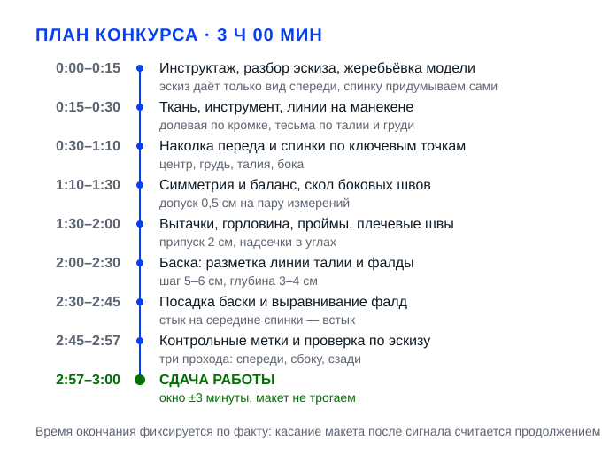
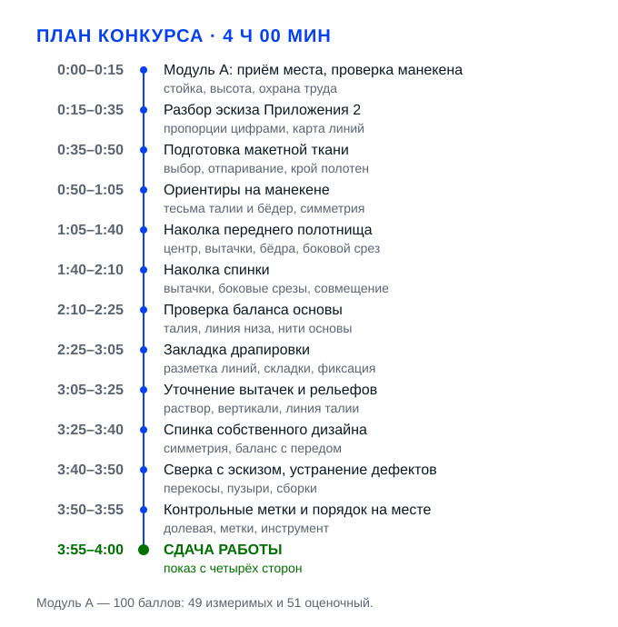
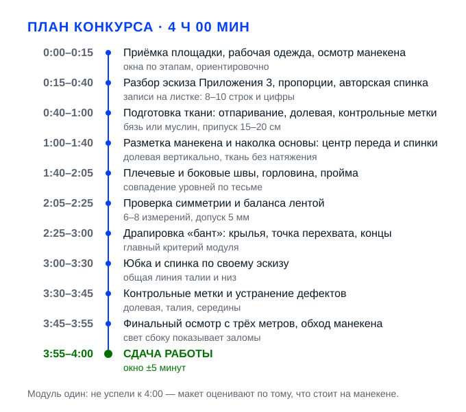

Модельер одежды (метод наколки) (Р)
Задания ниже — официальные файлы «Абилимпикс» (источник: abilympics-russia.ru), разложенные по категориям. Решения написаны по тексту задания, регламенту и критериям оценки; в них указано, что именно проверяет эксперт.
Школьник
14–16 лет, базовый уровень заданияВыдержка из официального конкурсного задания: страницы, относящиеся к категории «Школьник» (стр. 5–7 источника).
Пошаговое решение
Три часа, один модуль и один результат: топ с баской, наколотый на манекене по эскизу, который вы увидите только в день конкурса. Модель выбирается случайным образом, спинку эскиз не показывает — её дизайн вы придумываете сами, и это отдельная часть оценки. Топ — плечевое изделие с приталенным силуэтом и баской по линии талии, поэтому всё задание держится на трёх вещах: точной посадке по ключевым точкам, аккуратно заложенных вытачках и равномерных фалдах баски. Оценка складывается из двух блоков: 49 баллов измеримых критериев (то, что эксперт измеряет линейкой и сантиметровой лентой — длины, растворы, симметрию) и 51 балл оценочных (посадка, чистота наколки, соответствие эскизу). Решение построено по четырём этапам задания — разбор эскиза и подготовка, разметка базовой основы, формирование объёма и силуэта, фиксация и проверка — с точным распределением времени внутри трёх часов.

Задача 1. Разобрать эскиз, подготовить инструмент, ткань и манекенМодуль А · подготовительный этап · 3 часа на всё задание
Первый этап конкурсного задания — подготовительный, и он задаёт качество всей наколки: если ткань отутюжена, долевая определена, манекен выставлен по росту, а эскиз разобран на понятные вам линии, дальше работа идёт спокойно и быстро. На подготовку уходит не больше тридцати минут из ста восьмидесяти, но именно эти минуты экономят час на переделках. Здесь же решается вопрос с рабочей одеждой и техникой безопасности — за нарушение правил работы с булавками и ножницами работу могут остановить.
Действие 1.1. Войти на площадку по правилам и разобрать эскиз
Шаг 1.1.1
Заходим на площадку и надеваем рабочую одежду: свободные брюки или юбку, футболку без свисающих рукавов, закрытую обувь на нескользящей подошве. Волосы убираем под повязку или головной убор полностью, включая затылок, украшения с рук снимаем. Слушаем инструктаж по охране труда до конца и расписываемся в журнале: в нём отдельно оговорены правила работы с булавками и ножницами — булавки не берём в рот, ножницы кладём сомкнутыми лезвиями от себя.
Раздел 6 конкурсного задания прямо требует пройти инструктаж до начала работы и держать рабочее место свободным от посторонних предметов. Для школьников это не формальность: вы три часа работаете острым инструментом на глазах у экспертов, и любое нарушение правил охраны труда фиксируется отдельно от оценки за наколку, вплоть до отстранения. Свободная одежда нужна и потому, что вы будете наклоняться к манекену.
Проверьте себя по трём признакам: волосы не выбиваются ни спереди, ни сзади; рукава не спускаются ниже локтя; обувь закрытая и сухая. Подпись в журнале стоит до старта, а не в середине работы. Булавки лежат в игольнице, а не рассыпаны по столу.
Самая частая ошибка — надеть повязку только на макушку и оставить затылок открытым: спереди всё выглядит аккуратно, а при наклоне над манекеном волосы попадают на ткань. Вторая — работать в длинных рукавах и зацепить булавку рукавом: ткань макета дёргается, наколка сбивается, и участок приходится перекладывать заново.
Эксперт смотрит на участника до старта: соответствует ли одежда требованиям, убраны ли волосы, как организовано место. Дальше он следит за этим по ходу работы, потому что правила действуют весь модуль, а не только на входе.
Шаг 1.1.2
Кладём перед собой эскиз или фотографию модели и разбираем её на измеримые линии. Сначала фиксируем силуэт: насколько топ притален, где заканчивается по линии талии. Потом считаем и записываем на листе: форму горловины (глубина и ширина), ширину бретели или плеча, количество и направление фалд баски, её длину от талии. Отдельно отмечаем, где проходят линии членения, если они есть на фотографии, и записываем всё цифрами в сантиметрах, снятыми с манекена.
Первый пункт подготовительного этапа в конкурсном задании — изучить эскиз и зафиксировать силуэт, линии членения, особенности драпировки. Без этого нельзя начать наколку: вы будете «искать форму» прямо на ткани, а каждый переколотый участок на бязи оставляет след от булавок. Кроме того, эскиз показывает только вид спереди, и именно с него считываются пропорции, по которым потом строится спинка.
У вас на листе должно быть не меньше шести чисел: обхват груди, обхват талии, глубина горловины, ширина плеча, длина баски, расстояние между фалдами. Если хотя бы одно взято «на глаз», вернитесь к сантиметровой ленте — на глаз в наколке не работает ничего.
Типичная ошибка — посмотреть на фотографию и сразу начать колоть, считая, что «форма понятна». К середине работы выясняется, что баска заложена слишком часто или силуэт получился свободнее эскиза, и переделывать приходится уже собранный макет. Второй промах — принять длину баски на фотографии за её длину на манекене: масштаб снимка другой.
Эксперт подходит в первые минуты и смотрит, работает ли участник с эскизом: сверяется ли с ним, делает ли записи. Участник, который отложил фотографию в сторону и колет «по памяти», почти всегда расходится с заданием по пропорциям.
Шаг 1.1.3
Проговариваем вслух последовательность работы и распределяем три часа: пятнадцать минут на разбор эскиза и подготовку, тридцать — на наколку переда, двадцать — на спинку, двадцать пять — на вытачки и проймы, тридцать — на баску, двадцать — на финальную проверку и сдачу. Резерв десять минут держим нетронутым до самого конца. Время записываем на том же листе, где числа, и ставим рядом три отметки — когда должны быть готовы перед, спинка и баска.
Общее время категории «Школьники» — 3 часа на один модуль, и внутри него никто не подсказывает, сколько осталось на этап. Практика конкурсов показывает: макет, у которого к полутора часам не готова основа, почти никогда не досдают. План с тремя контрольными точками позволяет вовремя остановиться и упростить решение вместо того, чтобы в последние двадцать минут метаться между баской и горловиной.
К моменту старта у вас есть план с тремя датами: перед — 1 час 10 минут, спинка — 1 час 30 минут, баска — 2 часа 30 минут. Если к контрольной точке этап не закрыт, вы не догоняете за счёт финальной проверки, а упрощаете: убрать лишние фалды легче, чем потерять всю посадку.
Ошибка новичка — отдать основе два с половиной часа, потому что «хочется идеально», и наколоть баску за пятнадцать минут до сдачи. Баска в этом задании — центральный элемент, и её небрежность обнуляет впечатление от аккуратного лифа. Обратная ошибка — гнать время и начать баску, не проверив симметрию основы.
Эксперт отмечает, насколько участник управляет временем: есть ли промежуточные результаты к середине модуля. Ритмичная работа с видимым прогрессом оценивается выше, чем рывок в последние двадцать минут.
Действие 1.2. Подготовить инструмент и выставить манекен
Шаг 1.2.1
Раскладываем инструмент на столе в том порядке, в котором он понадобится: сантиметровая лента на шее или на краю стола, портновские булавки в подушечке-игольнице справа, ножницы 280 мм сомкнутыми лезвиями от себя, мел или обмылок в мыльнице, линейка 50 см, карандаш 6B для меток на бумаге. Проверяем каждую позицию: булавки не ржавые и не гнутые, ножницы режут бумагу без зажёвывания, лента не растянута и начинается с нуля.
Перечень инструментов задан в конкурсном задании: портновские булавки, сантиметровая лента, мел или мыло, ножницы, манекен. Ржавая булавка оставляет на светлой бязи точку, которую не убрать, а тупые ножницы рвут ткань по косой вместо ровного среза — и то и другое снижает балл за аккуратность. Разложенный по порядку инструмент экономит десятки движений: за три часа вы берёте булавку сотни раз.
Проверьте булавку на ощупь: острие должно входить в ткань без усилия. Ножницами попробуйте отрезать полоску бумаги — если она мнётся, а не режется, нужен другой инструмент. Игольница должна быть набита так, чтобы булавки вынимались одной рукой, не глядя.
Булавки, лежащие россыпью у края стола, — это потерянные минуты и риск укола: ткань падает, булавки разлетаются, часть из них вы уже не найдёте. Тупые или перекошенные ножницы дают зубчатый край на косом срезе, и баска начинает осыпаться прямо на манекене.
Эксперт оценивает организацию рабочего места: всё ли под рукой, нет ли на столе лишнего. Это часть оценочных критериев и одна из тех вещей, которые видны без всяких измерений в первые тридцать секунд.
Шаг 1.2.2
Выставляем манекен по своему росту: стойка должна давать возможность работать стоя, не наклоняясь, — линия талии манекена примерно на уровне вашего локтя, когда руки опущены. Проверяем устойчивость: основание стоит на всех четырёх точках, колесики застопорены, стойка не качается при нажатии на плечо. Осматриваем обтяжку: она должна быть натянута без складок, а конструкторские линии баланса — середина переда, середина спинки, линия груди, талия — читаться чётко.
Манекен Monica 44 размера, рост 170 см, длина спинки 40 см — это типовая фигура, и все измерения вы будете вести именно от его конструкторских линий. Если манекен качается, каждая булавка входит под углом, и посадка уходит. Если линии баланса на обтяжке перекошены или плохо видны, вы наколите центр не там, и дальше весь макет будет смещён относительно оси.
Толкните манекен ладонью в плечо: он должен вернуться на место, а не поехать. Проведите пальцем по середине переда — линия должна идти строго вертикально, без ухода в сторону на уровне груди и талии. Обтяжка чистая, без затяжек от прежних булавок.
Работать на качающемся манекене — значит получить перекошенные боковые швы и увести баску в сторону. Вторая ошибка — не заметить, что манекен стоит ниже удобного уровня: через час работы спина устаёт, руки дрожат, и точность булавки падает именно там, где нужна мелкая моторика.
Эксперт проверяет устойчивость и регулировку манекена до старта, а также то, совпадает ли уровень талии манекена с рабочим уровнем участника. Неустойчивая стойка — нарушение требований охраны труда, зафиксированных в разделе 6.
Шаг 1.2.3
Намечаем на манекене вспомогательные линии узкой тесьмой или полосками малярного скотча: середину переда, середину спинки, линию груди и линию талии. Тесьму крепим булавками в трёх-четырёх точках, натягивая без слабины, и проверяем, что она ложится точно поверх конструкторских линий обтяжки. Линию талии ведём строго горизонтально, контролируя по линейке от пола с двух сторон — спереди и со спины.
Всё, что вы наколете дальше, будет строиться от этих четырёх линий: центр задаёт симметрию, грудь — положение нагрудной вытачки, талия — линию притачивания баски. Если тесьма ляжет с перекосом в один сантиметр, баска уйдёт в сторону на два-три сантиметра по низу, потому что ошибка умножается на длину. Конкурсное задание отдельным пунктом требует наметить ключевые точки: горловину, плечевые швы, линию груди, талию, боковые швы.
Отойдите на два шага и посмотрите на манекен спереди: линия талии должна быть параллельна полу, а не «вроде ровная». Проверьте сантиметровой лентой расстояние от линии талии до пола слева и справа — расхождение больше половины сантиметра означает перекос, тесьму надо переложить.
Наколоть тесьму по обтяжке, не проверив горизонталь, — самая коварная ошибка: на манекене всё выглядит ровно, потому что глаз привыкает к наклону за десять секунд. Потом баска с одной стороны оказывается ниже, и выравнивать её приходится, поднимая линию притачивания, а это меняет пропорции всего топа.
Эксперт проверяет, нанесены ли ключевые линии до начала наколки: это измеримый критерий, и его фиксируют до того, как появится первая деталь. Работа без размеченных линий сразу читается как импровизация.
Действие 1.3. Подготовить и выкроить макетную ткань
Шаг 1.3.1
Берём макетную ткань: бязь, миткаль или коленкор — плотный хлопок, который хорошо держит форму и не скользит по манекену. Отрезаем два полотнища: на перед и на спину, каждое шириной примерно половина обхвата груди плюс двенадцать сантиметров и высотой от плеча до талии плюс пятнадцать сантиметров сверху и десять снизу. Отдельно отрезаем полосу на баску: длина равна обхвату талии, умноженному на полтора, ширина — длина баски плюс пять сантиметров.
Метод наколки работает только с тканью, которая ведёт себя предсказуемо: сыпучая или слишком скользкая ткань не держит булавку, и форма расползается. Припуски сверху и снизу — это запас на переколку: вы будете перекладывать плечо и линию талии по нескольку раз, и без запаса каждый раз приходилось бы отрезать новый кусок. Коэффициент полтора для баски даёт достаточный объём фалд без излишней толщины в поясе.
Проверьте полотнища на просвет: ткань должна быть одинаковой плотности, без пропусков и утолщений. Приложите полотнище к манекену — оно должно закрывать перед от горловины до талии с запасом по десять сантиметров с каждой стороны. Полоса баски по длине свободно обхватывает талию с напуском.
Выкроить полотнище впритык по фигуре — значит потерять возможность исправить посадку: первая же переколотая вытачка оставит на ткани след, а нового запаса нет. Вторая ошибка — взять для баски слишком мало ткани: фалды получаются редкими и плоскими, и баска выглядит как пришитая юбка, а не как драпировка.
Эксперт смотрит на подготовку ткани до наколки: отрезаны ли полотнища с запасом, соответствует ли ткань требованиям. Экономия на припусках видна по обилию следов от булавок в готовом макете.
Шаг 1.3.2
Определяем долевую нить по кромке: долевая идёт вдоль кромки, уток — поперёк. Проверяем, что ткань не перекошена: отгибаем угол по утку и смотрим, совпадает ли сгиб с кромкой по всей длине. Если полотнище повело, вытягиваем его по диагонали за противоположные углы и отутюживаем с паром, пока уток не встанет перпендикулярно кромке. На каждом полотнище ставим мелом стрелку вдоль долевой и подписываем: «перед», «спина», «баска».
Основное правило наколки, записанное в описании компетенции, — правильное взаимное расположение нитей основы и утка: именно оно определяет посадку деталей на манекене, величину раствора вытачек и направление швов. Перекошенная ткань даст косую закрутку по боковому шву и «пузырь» у проймы, причём исправить это булавками невозможно — только перекроить. Стрелка и подпись экономят время: через час вы уже не помните, где верх, а где низ.
Приложите угольник или сложенный лист к кромке: уток должен идти под прямым углом. Потяните полотнище по долевой и по утку — сопротивление должно быть разным, по долевой ткань тянется заметно меньше. Стрелки на всех трёх деталях направлены одинаково.
Наколоть перекошенную ткань — и весь макет будет тянуть в одну сторону, как бы аккуратно вы ни закладывали вытачки. Вторая ошибка — не подписать детали: полотнище для баски путается с передом, и вы кроите новое, теряя десять минут из трёх часов.
Стрелка долевой на ткани — это тот контрольный признак, который эксперт ищет глазами в первую очередь. Отсутствие обозначенной долевой в готовом макете снимает баллы за качество наколки, даже если посадка получилась удачной.
Шаг 1.3.3
Отутюживаем все три детали с паром, складывая по долевой, и даём остыть под прессом или просто на столе две-три минуты, не растягивая. Затем уточняем размеры: перед и спина — по половине обхвата груди плюс восемь сантиметров, высота от линии плеча до талии плюс двенадцать; баска — полоса нужной длины и ширины. Срез кромки на всех деталях срезаем, потому что кромка не даёт ткани садиться по фигуре и топорщится на манекене.
Отутюженная ткань ложится на манекен ровно и держит булавку без натяжения; мятая ткань идёт волной, и вы принимаете эту волну за дефект посадки, начиная перекалывать то, что перекалывать не нужно. Срезанная кромка — обязательное условие: она жёсткая, не тянется и на боковом шве даёт утолщение, которое видно на силуэте.
Проведите ладонью по отутюженной детали: поверхность должна быть гладкой, без заломов и волнистого края. Кромки срезаны полностью, на деталях нет жёстких полос по краю. Подписи и стрелки читаются после утюжки.
Гладить уже наколотую деталь или гладить с сильным растяжением — ткань вытягивается по косой, и полотнище перестаёт быть прямоугольным. Позже это проявится как «пузырь» под проймой, который вы будете пытаться убрать вытачкой, которой там не место.
Эксперт обращает внимание на подготовку ткани: срезана ли кромка, есть ли замины. Мятая или несимметрично отутюженная ткань сразу выдаёт, что участник торопился на подготовке и будет догонять на посадке.
Задача 2. Наколоть основу переда и спинки по ключевым точкамМодуль А · измеримые критерии · 49 баллов
Второй этап — разметка базовой основы. Ткань натягивается на манекен и фиксируется булавками по центральным линиям, после чего намечаются ключевые точки: горловина, плечевые швы, линия груди, талия, боковые швы. Это самая ответственная часть: любая ошибка на этом этапе — перекос центра, заниженная или завышенная линия талии — дальше только размножается, потому что все вытачки и баска строятся от этих линий. Измеримые критерии оценивают именно то, что здесь закладывается: положение центральных линий, высоту талии, симметрию половин.
Действие 2.1. Наколоть перед по центральной линии
Шаг 2.1.1
Берём полотнище переда, находим на нём середину по ширине и совмещаем эту линию с серединой переда манекена, обозначенной тесьмой. Прикалываем по центру сверху вниз: первая булавка на уровне горловины, дальше каждые пять-семь сантиметров до линии талии. Булавки вкалываем под углом примерно сорок пять градусов к линии, головкой наружу и в направлении от себя, чтобы не уколоться при работе.
Центральная линия — ось симметрии всего изделия, и от неё отсчитывается всё остальное: положение вытачек, глубину горловины, ширину полочек и разнос фалд баски. Пункт 2.3.1 конкурсного задания начинается именно с этого: натянуть ткань на манекен, зафиксировав её булавками по центральным линиям спинки и переда. Если центр ушёл, симметрию уже не восстановить — правая половина будет шире левой при любом старании.
Посмотрите на манекен сверху: ткань по центру должна идти вертикально, без перекоса, а линия середины на ткани совпадать с тесьмой по всей длине. Проверьте расстояние от центра до правого и левого бока на уровне груди — оно должно быть одинаковым с точностью до половины сантиметра.
Приколоть центр «примерно посередине» — и дальше вся работа идёт с перекосом: одна полочка шире, вторая уже, баска с одной стороны заложена гуще. Исправлять это в конце приходится полной переколкой переда, а на это в трёх часах места нет.
Эксперт проверяет совпадение середины переда с осью манекена на этапе разметки основы: это измеримый критерий, и он оценивается до того, как появятся вытачки и баска. Смещённый центр виден и по боковым швам.
Шаг 2.1.2
Разглаживаем ткань от центра к боку ладонью, не растягивая её, а мягко расправляя по форме манекена: сначала по линии груди, потом вниз к талии, потом вверх к плечу. Лишнюю ткань не срезаем и не сбрасываем в складку, а выводим к боковому срезу и временно закалываем одной булавкой на уровне груди. Дальше ведём ткань вниз к талии, разравнивая её так, чтобы долевая оставалась вертикальной.
Ткань должна лежать на манекене без натяжения и без пузырей: натянутая в одном месте, она обязательно соберётся в другом, и вы будете бороться со следствием вместо причины. Вывод лишнего к боковому срезу — общее правило наколки: весь избыток уходит туда, где потом пройдёт боковой шов, а не в середину полочки. Разглаживание по направлению долевой сохраняет правильное расположение нитей, о котором говорит основное правило наколки.
Проведите ладонью по переду: под рукой не должно быть ни складок, ни натянутых «струн». Долевая на ткани остаётся вертикальной на всём протяжении от груди до талии. Если ткань где-то топорщится — значит, избыток не выведен к боку.
Растянуть ткань по груди, чтобы «села плотнее»: через двадцать минут она вернётся в исходное состояние, и на манекене появятся наискось идущие заломы от проймы к талии. Исправить это можно только полной переколкой переда.
Эксперт оценивает посадку по ключевым точкам и отсутствие перекосов: натянутая ткань даёт характерные диагональные заломы, которые он видит сразу и фиксирует как дефект наколки.
Шаг 2.1.3
Переносим на ткань линии груди и талии: проводим мелком или обмылком по тесьме, натянутой на манекене, короткими штрихами, придерживая ткань второй рукой. На уровне груди отмечаем самую выступающую точку каждой полочки — от неё потом пойдёт нагрудная вытачка. На линии талии ставим метку середины и метки на уровне боковых швов, чтобы потом было с чем сверять.
Эти линии — границы вытачек и линии притачивания баски. Пункт 2.3.1 требует наметить ключевые точки: горловину, плечевые швы, линию груди, талию, боковые швы. Перенесённые на ткань, они превращаются в рабочие ориентиры: вы видите, где заканчивается вытачка и насколько ровно идёт талия, не отходя от манекена. Точка выступания груди определяет вершину нагрудной вытачки — если её сместить, вытачка ляжет под неправильным углом и потянет полочку.
Проверьте метки сантиметровой лентой: от линии талии до линии груди по центру и по боку расстояния должны совпадать с измерениями манекена. Метки на талии слева и справа стоят на одной высоте от пола. Точки выступания груди симметричны относительно середины переда.
Намечать линии «на глаз» и не переносить их на ткань — тогда при каждой переколке вы будете заново искать талию, и каждый раз немного иначе. Разница в полсантиметра между подходами превращается в полтора сантиметра по низу баски.
Эксперт смотрит, перенесены ли линии на ткань: размеченный макет читается как профессиональная работа, а макет без разметки — как попытка угадать форму. Это относится к измеримым критериям.
Шаг 2.1.4
Намечаем на ткани контур горловины и линию плеча переда, сверяясь с эскизом: от центра откладываем половину ширины горловины, вниз — её глубину, ставим точки мелком и соединяем плавной линией. Линию плеча ведём от горловины к точке на уровне плечевого ската манекена, наклоняя её по форме фигуры. По намеченному контуру закладываем припуск два сантиметра и скалываем ткань по этой линии булавками через каждые два сантиметра.
Горловина — первое, что видно на макете, и одновременно самое частое место ошибок: если она глубже эскиза, топ читается как другое изделие, а если мельче — на плечах появляется натяжение. Припуск в два сантиметра нужен не «на всякий случай»: по нему потом прокладывается строчка и делается надсечка в углу, без запаса надсекать нечего.
Сверьте ширину горловины с эскизом линейкой, а не глазом: половина ширины от центра должна совпадать с задуманной. Плечо лежит на манекене без натяжения и без провисания. По линии горловины стоят булавки, ткань не отходит от манекена.
Вырезать горловину сразу по контуру, без припуска, — классическая ошибка новичка: одна неверная надсечка, и деталь испорчена, а нового полотнища в запасе нет. Вторая — сделать горловину по эскизу, не проверив, как она садится на плечи манекена: на фотографии модель стоит иначе, чем ваш манекен.
Эксперт сравнивает форму и глубину горловины с эскизом и смотрит, ровно ли она лежит на манекене. Глубина горловины входит в измеримые критерии: её проверяют лентой от плечевой точки.
Действие 2.2. Наколоть спинку и сомкнуть боковые швы
Шаг 2.2.1
Переходим к спинке: находим середину полотнища, совмещаем с тесьмой на середине спины и прикалываем сверху вниз с шагом шесть-семь сантиметров. Разглаживаем ткань от центра к боку, выводя избыток к боковому срезу, и закрепляем одной булавкой на уровне лопаток. Отдельно расправляем ткань над лопатками — там всегда образуется небольшой избыток, который надо аккуратно посадить, а не согнать в складку.
Спинка в этом задании не задана эскизом — её дизайн участник разрабатывает самостоятельно, и именно поэтому важно начать с правильной технической основы: центр, лопатки, талия. Пункт 2.3.1 конкурсного задания требует зафиксировать ткань по центральным линиям спинки и переда. Если спинка наколота с перекосом, самостоятельный дизайн уже не спасёт: боковые швы не сойдутся с передом.
Середина спинки на ткани совпадает с тесьмой по всей длине, шаг булавок ровный. На уровне лопаток ткань лежит гладко, без диагональных заломов. Расстояние от центра до бокового среза слева и справа одинаковое.
Наколоть спинку «на глаз», потому что её всё равно не видно на эскизе: на примерке выясняется, что боковой шов спинки короче переда, и низ баски перекашивается. Вторая ошибка — согнать избыток над лопатками в мягкую складку: она читается как дефект посадки.
Эксперт проверяет спинку с той же строгостью, что и перед: центр, лопатки, талия. Свобода в дизайне не отменяет требований к посадке, и это отдельно проговаривается в критериях.
Шаг 2.2.2
Переносим на спинку линии груди и талии по тесьме, отмечаем уровень лопаток и ставим метки боковых швов на той же высоте, что и на переде. Скалываем перед и спинку по боковому шву временными булавками: совмещаем метки линии груди и талии, скалываем сверху вниз через каждые три сантиметра, начиная от проймы. Ткань по шву не натягиваем, а сводим свободно, чтобы обе детали легли без натяжения.
Сколотый боковой шов — единственный способ проверить, сходится ли макет по объёму. Если перед и спинка скалываются с натяжением или со слабиной, значит, где-то неверно выведен избыток, и это надо исправить до того, как появятся вытачки. Метки на одной высоте дают контроль: при правильной наколке линии груди и талии совпадают сами, без подтягивания.
После скалывания бокового шва линии груди и талии на переде и спинке совпадают, ткань по шву лежит ровно, без «пузыря» на уровне талии. Пройма не расходится при легком нажатии на плечо манекена. Обе детали держатся на манекене без дополнительных булавок по центру.
Скалывать боковой шов через силу, подтягивая край переда к спинке: линия талии съезжает, и баска потом встанет косо. Вторая ошибка — скалывать только по краю, не сводя метки: вроде бы сходится, а линия груди на спинке выше, чем на переде, на полтора сантиметра.
Эксперт смотрит на боковой шов с двух сторон и проверяет совпадение контрольных линий. Несовпадение линии талии на боку — заметный дефект, который снимает баллы и за посадку, и за качество наколки.
Шаг 2.2.3
Разрабатываем дизайн спинки, поскольку эскиз её не показывает: выбираем простую и читаемую линию — ровный вырез горловины средней глубины, приталивание за счёт двух вытачек или среднего шва, при желании кокетку на уровне лопаток. Намечаем мелком контур, проверяя, чтобы спинка по силуэту не спорила с передом: если перед притален, спинка тоже приталена. Скалываем спинку с передом по плечевому шву и проверяем, что линия горловины сходится по высоте.
Конкурсное задание прямо говорит: в эскизе представлен вид спереди, дизайн спинки конкурсант разрабатывает самостоятельно. Это отдельная часть оценочных критериев — эксперты смотрят, целостна ли модель и не выглядит ли спинка «приставленной» от другого изделия. Простое и аккуратное решение приносит больше баллов, чем сложное и недоделанное: времени на сложную фантазию в трёхчасовом модуле нет.
Пройдите вокруг манекена: силуэт спереди и сзади должен читаться как одна модель. Горловина спинки выше или на уровне горловины переда, плечевые швы совпадают по длине. Выбранная линия намечена мелком полностью, а не только «понятна в голове».
Придумать на спинку глубокий вырез с драпировкой, не рассчитав время: к моменту сдачи спинка остаётся недоделанной, и теряются баллы и за посадку, и за целостность образа. Обратная ошибка — оставить спинку совсем без оформления: она читается как техническая заготовка.
Эксперт обходит манекен кругом и оценивает, насколько самостоятельно разработанная спинка поддерживает образец спереди. Гармоничное простое решение он отмечает отдельно.
Действие 2.3. Сверить симметрию половин и горизонталь талии
Шаг 2.3.1
Проверяем симметрию половин: натягиваем нить или узкую тесьму по середине переда от горловины до талии и измеряем сантиметровой лентой расстояние от неё до правой и левой проймы, до правой и левой точки груди, до правого и левого бокового шва. Все три пары измерений записываем на лист рядом друг с другом, чтобы разница была видна цифрами, а не на глаз. То же самое повторяем на спинке.
Пункт 2.3.1 конкурсного задания заканчивается требованием проверить симметрию левой и правой половин, и это не формальность: при наколке рука почти всегда работает с одной стороны и незаметно «уводит» форму. Симметрия входит в измеримые критерии, 49 баллов, и проверяется лентой, а не впечатлением. Разница в сантиметр на уровне груди по низу баски превращается в три-четыре сантиметра.
Допустимое расхождение — половина сантиметра, всё, что больше, исправляется сразу. Проверять надо три уровня: грудь, талия, положение боковых швов. Если разница есть только в одном уровне, ищите причину в соответствующей вытачке или в перекосе центра.
Проверять симметрию «на глаз» с одной точки — самая распространённая ошибка: с одной точки перекос не виден, особенно если манекен стоит чуть боком к вам. Вторая — обнаружить перекос и не исправить, надеясь, что «на общем виде не заметно»: эксперт измеряет.
Эксперт подходит с сантиметровой лентой и проверяет симметрию сам. Если участник тоже измерял и исправил расхождения, это видно по аккуратности посадки и по отсутствию следов от переколотых булавок.
Шаг 2.3.2
Проверяем баланс изделия: линия талии должна идти горизонтально по всему обхвату, боковые швы — вертикально, а длина от линии талии до пола одинаковой спереди, сзади и по бокам. Измеряем лентой четыре расстояния от талии до пола и сравниваем. Отдельно проверяем, не тянет ли перед вверх или вниз: если полочка «просит» больше ткани, значит, не хватает раствора нагрудной вытачки.
Баланс — это то, из-за чего изделие сидит или не сидит. В наколке он проверяется именно так: горизонталь талии и вертикаль боковых швов. Нарушенный баланс нельзя замаскировать фалдами баски — наоборот, баска подчёркивает перекос, потому что идёт от линии талии. Измеримые критерии включают положение линии талии, и разница в один сантиметр уже фиксируется.
Четыре измерения от талии до пола совпадают с точностью до половины сантиметра. Боковой шов сколот по вертикали — проверьте отвесом или краем линейки. Перед и спинка не «смотрят» вверх или вниз: горловина не отходит от манекена.
Оставить перекошенную линию талии, потому что «баска закроет»: баска идёт ровно по этой линии, и её низ в одном месте поднимется, а в другом опустится — перекос станет вдвое заметнее. Вторая ошибка — подтянуть талию на боку, чтобы выровнять длину: боковой шов уходит по косой.
Эксперт смотрит на манекен с четырёх сторон и проверяет горизонталь талии. Перекошенная линия притачивания баски — один из самых заметных дефектов на этом задании.
Шаг 2.3.3
Фиксируем найденное положение, чтобы не сбить его в дальнейшей работе: добавляем булавки по центру переда и спинки с шагом пять сантиметров, по линии талии через каждые четыре-пять сантиметров, и отдельно закрепляем боковые швы в двух-трёх точках. Булавки ставим так, чтобы они не мешали прокладывать вытачки: не в тех местах, где будет проходить шов. Ткань под булавкой расправляем пальцем, а не натягиваем.
Каждая следующая операция — вытачки, горловина, баска — тянет за собой ткань, и незакреплённые участки уходят на один-два сантиметра. Плотная фиксация по контрольным линиям держит основу неизменной, пока вы работаете с деталями. Пункт 2.3.1 заканчивается именно фиксацией: ткань, закреплённая по центральным линиям, — база всей дальнейшей наколки.
Потяните ткань легонько в сторону от центра — она должна держаться, а не сдвигаться. Булавки не стоят в тех местах, где намечены вытачки и швы. Линия талии после добавления булавок не сместилась: проверьте её положение от пола ещё раз.
Закрепить только центр и не закрепить талию: при наколке баски ткань подтягивается вверх, и линия талии уезжает на сантиметр. Найти потом, на сколько именно уехало, почти невозможно, потому что мел уже стёрся.
Эксперт проверяет, держится ли основа к моменту работы с баской: если ткань гуляет, все последующие измерения теряют смысл. Плотность фиксации видна по тому, насколько ровно лежит макет после каждой операции.
Задача 3. Сформировать объём и силуэт: вытачки, горловина, проймыМодуль А · посадка по ключевым точкам
Третий этап — формирование объёма и силуэта. Здесь ткань превращается в изделие: закладываются нагрудные и талиевые вытачки, оформляются горловина и проймы, уточняется линия плеча и степень приталивания. Всё это делается постепенно, с примеркой после каждой операции, потому что раствор вытачки на глаз не угадывается — он определяется формой конкретного манекена. Контроль идёт по ключевым точкам: плечи, лопатки, грудь. Перекос хотя бы в одной из них виден эксперту сразу и снимает баллы и за посадку, и за качество наколки.
Действие 3.1. Заложить вытачки и посадить ткань по груди
Шаг 3.1.1
Закладываем нагрудную вытачку: от точки выступания груди ведём линию к боковому шву (или к плечу, если так на эскизе), защипываем ткань по этой линии и скалываем. Раствор вытачки определяем по избытку: защипываем до тех пор, пока под грудью не исчезнет пузырь и ткань не ляжет по форме. Скалываем от вершины к краю, вкалывая булавки поперёк линии вытачки через каждый сантиметр.
Нагрудная вытачка — главный инструмент, которым плоское полотно превращается в объём. От её раствора зависит, ляжет ли топ по фигуре или будет отставать от груди. При этом вершина вытачки должна смотреть точно в точку выступания груди: смещённая вершина даёт бугор или впадину, которые невозможно убрать утюжкой макета.
Проведите ладонью под грудью: ткань должна лежать ровно, без пузыря и без натянутых лучей от вершины. Раствор вытачки одинаков на правой и левой полочке — измерьте ширину раствора на уровне края. Вершина вытачки не доходит до точки груди на полтора-два сантиметра.
Заложить слишком большой раствор «чтобы сидело плотнее»: под грудью появляется вмятина, а к пройме идёт натяжение, которое тянет боковой шов вперёд. Слишком маленький раствор оставляет пузырь, и топ выглядит как мешок.
Эксперт смотрит на вытачку сбоку и снизу: ровно ли лежит ткань под грудью, смотрят ли вытачки симметрично. Раствор и направление вытачек относятся к измеримым критериям.
Шаг 3.1.2
Закладываем талиевые вытачки: на переде — две, на расстоянии примерно восемь-десять сантиметров от центра, на спинке — две, симметрично. Раствор каждой определяем защипом: закладываем ткань от линии талии, пока она не ляжет по фигуре плотно, но без натяжения. Длина вытачки на переде — десять-двенадцать сантиметров вверх от талии, на спинке — двенадцать-четырнадцать. Скалываем от талии к вершине, последняя булавка ставится на сходе вытачки.
Приталенный силуэт топа держится именно на талиевых вытачках: они забирают избыток ткани по талии и создают тот перепад, из-за которого баска начинает работать как отдельный объём. Если вытачек нет или они слабые, топ получается прямым, и баска на прямом силуэте выглядит пришитой полосой. Измеримые критерии проверяют раствор и положение вытачек, оценочные — общее впечатление от силуэта.
Обхват талии на макете должен быть меньше обхвата груди примерно на пятнадцать-двадцать сантиметров, в зависимости от эскиза. Вытачки на переде симметричны и не «смотрят» в стороны. Ткань между вытачками лежит ровно, без натянутых полос.
Слишком глубокие талиевые вытачки дают резкие грани, и силуэт становится угловатым; слишком мелкие оставляют мешок на талии, и баска топорщится. Отдельная ошибка — заложить вытачки, не срезав лишнюю ткань, из-за чего на талии образуется утолщение в четыре слоя.
Эксперт смотрит на силуэт сбоку: есть ли перепад между грудью и талией, симметричны ли вытачки. Глубина приталивания — часть оценки за соответствие эскизу.
Шаг 3.1.3
Срезаем лишнюю ткань по вытачкам, оставляя припуск полтора-два сантиметра от линии скола, и подрезаем избыток по боковым срезам на уровне талии. Ножницы держим параллельно столу, режем короткими движениями, придерживая ткань второй рукой, чтобы не срезать булавку. После подрезки ещё раз проверяем посадку: объём по талии не должен измениться. Подрезаем на весу, не отрывая ткань от манекена.
Утолщение из четырёх слоёв ткани на талии не даст баске прилегать ровно: она встанет на этот валик и будет отставать. Припуск в полтора-два сантиметра нужен для дальнейшей работы — по нему прокладывается строчка, и его видно в готовом макете как аккуратный край. Срезать вплотную к булавкам — значит потерять возможность исправить посадку, если после подрезки что-то поедет.
Проведите пальцем по линии талии: поверхность должна быть ровной, без ступеньки. Припуск по всей длине одинаковый. Обхват талии после подрезки совпадает с тем, что был до неё, — проверьте лентой. Проверьте также, что линия талии осталась на прежней высоте.
Подрезать вплотную к линии скола: одно неловкое движение, и вытачка расходится, а исправить уже нечем — ткани нет. Вторая ошибка — срезать лишнее на переде и забыть про спинку: с одной стороны талия тонкая, с другой толстая, и баска садится криво.
Эксперт обращает внимание на аккуратность срезов: рваные, зубчатые края и торчащие нитки снижают оценку за качество наколки независимо от посадки. Он также смотрит, не осталось ли между слоями обрезков ткани.
Действие 3.2. Оформить горловину, проймы и плечевые швы
Шаг 3.2.1
Оформляем горловину: по намеченному контуру закладываем припуск два сантиметра и скалываем ткань булавками через полтора-два сантиметра, плотно прижимая её к манекену. В углах — там, где линия горловины переходит в плечо, — делаем надсечки глубиной один-полтора сантиметра, не доходя до линии скола. Ткань в углу расправляем, а не растягиваем, чтобы не получить волну по вырезу.
Надсечка в углу — единственный способ уложить ткань по вогнутой линии без натяжения: без неё в углу собирается избыток, и горловина топорщится. Припуск в два сантиметра даёт ровный край и позволяет подогнуть ткань так, чтобы вырез читался как обработанный, а не как срез. Форма горловины — один из измеримых критериев: глубину и ширину эксперт проверяет лентой.
Край горловины лежит на манекене без волн и без натянутых участков, линия ровная по всей длине. Угол не топорщится, надсечка не видна с лицевой стороны. Глубина выреза совпадает с эскизом с точностью до половины сантиметра.
Сделать надсечку слишком глубоко, до самой линии скола, — угол расходится, и горловина получает разрыв, который видно издалека. Вторая ошибка — обойтись без надсечек: по вырезу идёт волна, и топ выглядит неаккуратно при идеальной посадке в остальном.
Эксперт проверяет горловину на просвет и с двух шагов: ровность линии, отсутствие волн, симметричность. Это одно из первых мест, куда он смотрит, потому что вырез — центр композиции топа.
Шаг 3.2.2
Оформляем проймы: по контуру проймы закладываем припуск два-два с половиной сантиметра, скалываем булавками через полтора сантиметра, надсекаем ткань в нижней точке проймы и в верхней, у плеча. Ткань по пройме слегка оттягиваем утюгом с паром на весу, чтобы край не морщил, но не растягиваем булавками. Проверяем, что пройма не врезается в манекен и не отходит от него.
Пройма — кривая с двумя радиусами, и ткань по ней ведёт себя по-разному: сверху она должна лежать плотно, снизу — иметь небольшой запас. Надсечки в двух точках снимают натяжение именно там, где оно возникает. Измеримые критерии включают форму и положение проймы: глубже нужного — топ будет резать под мышкой, мельче — появится натяжение на груди.
Пройма лежит по форме манекена без заломов и без натянутых лучей к центру груди. Глубина проймы одинакова слева и справа. При легком нажатии на плечо манекена край проймы не отходит. Сравните глубину проймы с эскизом по линейке.
Растянуть пройму булавками, чтобы «села ровнее»: край пойдёт волной, и в готовом макете это читается как небрежность. Вторая ошибка — сделать пройму слишком глубокой, тогда топ держится только на плече и топорщится под рукой.
Эксперт смотрит пройму сбоку и проверяет её глубину лентой. Морщины по пройме — признак того, что участник боролся с натяжением вместо того, чтобы переложить вытачку.
Шаг 3.2.3
Скалываем плечевые швы: совмещаем перед и спинку по намеченной линии плеча, начиная от горловины, и скалываем через каждые два сантиметра, вводя булавку параллельно будущему шву, а не поперёк. Линию плеча ведём по естественному скату манекена, не поднимая её искусственно. Стык в горловине сводим точно, без ступеньки, и закрепляем одной булавкой поперёк.
Плечевой шов задаёт посадку всего изделия: если он смещён вперёд или назад, топ будет тянуть либо в груди, либо в спине. Пункт 2.3.1 требует наметить плечевые швы в числе ключевых точек, и это не случайно — от них зависит положение проймы и горловины. Булавки параллельно шву держат ткань ровно и не дают краю завернуться.
Плечевой шов идёт по скату манекена без натяжения и без провисания, стык у горловины ровный. Длина плеча на переде и спинке одинаковая. После скалывания пройма не расходится и горловина не деформируется.
Поднять плечо выше естественного ската, чтобы «было аккуратнее»: топ начнёт задираться, а под проймой появится залом. Вторая ошибка — сколоть плечо поперёк линии: край ткани заворачивается, и на макете видна ступенька.
Эксперт проверяет линию плеча с двух сторон манекена и совпадение стыка у горловины. Ступенька или перекос плеча — заметный дефект, который снимает баллы за качество наколки.
Действие 3.3. Уточнить силуэт и степень приталивания
Шаг 3.3.1
Сверяем силуэт с эскизом по трём уровням: ширина по груди, ширина по талии, степень прилегания под грудью. Измеряем макет лентой и сравниваем с числами, записанными при разборе эскиза. Если макет получился свободнее — углубляем талиевые вытачки на один-полтора сантиметра с каждой стороны; если уже — распускаем вытачку и перекладываем её на меньший раствор. Правки делаем симметрично на обеих половинах.
Третий этап конкурсного задания — формирование объёма и силуэта, и в нём отдельным пунктом стоит контроль посадки по ключевым точкам. Свободный или слишком узкий топ одинаково расходятся с эскизом, а соответствие эскизу входит и в измеримые, и в оценочные критерии. Правки надо делать именно сейчас, пока баска не наколота: после неё любое изменение талии тянет за собой перекладку всей баски.
Три измерения макета совпадают с эскизом с точностью до одного сантиметра. Приталивание читается с двух шагов: перепад между грудью и талией виден. Правая и левая половины одинаковы по ширине. Отдельно проверьте, что линия талии не поднялась при углублении вытачек.
Подогнать силуэт «по ощущению красоты», забыв про эскиз: на защите выясняется, что модель не соответствует заданию, и теряется большая часть оценочных баллов. Вторая ошибка — исправлять только одну половину: асимметрия после этого бросается в глаза сильнее, чем исходная свобода.
Эксперт кладёт рядом эскиз и манекен и сравнивает пропорции. На этом этапе он уже может сказать, попал ли участник в образ, и в спорных случаях решает именно соответствие фотографии.
Шаг 3.3.2
Проходим по ключевым точкам по порядку: плечи — ложатся ли швы по скату; лопатки — нет ли избытка, согнанного в складку; грудь — ровно ли лежит ткань под вытачкой; боковые швы — вертикальны ли они. Каждую найденную проблему исправляем на месте: снимаем две-три булавки, расправляем ткань и скалываем заново. Не оставляем «на потом» ни одного замеченного перекоса.
Пункт 2.3.1 прямо перечисляет ключевые точки — плечи, лопатки, грудь — и требует контролировать посадку по ним. Ошибки в этих точках не компенсируются ничем: их видно на силуэте, они влияют на положение баски и на общее впечатление. Кроме того, именно на этом этапе переколотые места ещё можно исправить без следа, а после окончательной фиксации следы булавок останутся навсегда.
Обойдите манекен по кругу и на каждом шаге смотрите на силуэт сбоку: линия от плеча до талии должна быть плавной. Под лопатками нет ни складки, ни натяжения. Боковой шов сколот по вертикали, а не по дуге.
Заметить перекос и оставить его, чтобы не терять время: дальше он только усилится, потому что баска идёт от талии и подчеркнёт любую асимметрию. Вторая ошибка — исправлять перекос, дёргая одну булавку: ткань уходит крупными складками, и участок приходится перекладывать целиком.
Эксперт обходит манекен и фиксирует посадку по ключевым точкам, часто до того, как участник закончил: это одна из самых весомых частей измеримых критериев.
Шаг 3.3.3
Окончательно закрепляем верхнюю часть: добавляем булавки по горловине, проймам и плечевым швам с шагом полтора-два сантиметра, вводя их под углом сорок пять градусов и головками наружу. Подрезаем припуски по горловине и проймам до полутора-двух сантиметров ровной полосой, лишние булавки снимаем. Проверяем, что подрезанный край не расходится и линия остаётся той же формы.
Верх макета — самое тревожное место: горловина и проймы держатся на трёх-четырёх булавках, и при наколке баски ткань обязательно за них зацепится. Плотная фиксация и ровный припуск делают край устойчивым. Кроме того, аккуратный, одинаковый по ширине припуск читается экспертом как признак профессиональной работы — это часть оценочных критериев.
Край горловины и пройм держится без дополнительного придерживания, припуск одинаковый по всей длине. Подрезанные срезы не осыпаются лохмами. Форма выреза после подрезки не изменилась — сравните с эскизом.
Подрезать припуск «под ноль», чтобы край выглядел тонким: он начинает осыпаться, и к концу конкурса горловина обтрёпана. Вторая ошибка — оставить припуск в пять сантиметров: он топорщится под проймой и мешает баске лечь по талии.
Эксперт смотрит на чистоту края: ровный припуск, отсутствие торчащих ниток, одинаковая ширина по всей линии. Это заметно на фотографии защиты и влияет на оценочные баллы.
Задача 4. Наколоть баску и заложить фалдыМодуль А · главный элемент задания · вариатив
Баска — то, из-за чего это задание и называется моделью с элементами сложных форм. Она крепится по линии талии и должна давать объём без сборки в поясе: фалды закладываются вручную, каждая на своём месте, с равным шагом и одинаковой глубиной. Здесь проверяется главное умение наколки — заставить ткань работать на форму. Неравномерные фалды, перекошенная линия притачивания или баска, которая «стоит колом» вместо того чтобы мягко расходиться, видны на расстоянии и оцениваются в первую очередь.
Действие 4.1. Разметить линию притачивания и рассчитать длину баски
Шаг 4.1.1
Размечаем линию притачивания баски: проводим мелком по линии талии на основе, опираясь на тесьму, натянутую на манекене. Линию ведём непрерывно по всему обхвату, от середины переда через бок к середине спинки и дальше до замыкания. На ней же ставим метки середин переда, спинки и боковых швов — четыре точки, от которых потом будет вестись раскладка фалд.
Баска — центральный элемент задания, и её линия притачивания должна совпадать с линией талии основы. Если разметить её заново, на глаз, она неизбежно разойдётся с той, по которой посажен лиф, и в месте стыка появится уступ. Четыре метки дают симметрию: фалды раскладываются от середины в обе стороны, и без опорных точек их не уравнять.
Линия замкнута по всему обхвату, без разрывов и ступенек. Расстояние от линии до пола одинаково спереди, сзади и по бокам. Метки середин и боков стоят точно на своих линиях, а не «рядом». Проверьте также, что мел не осыпался и линия читается на ткани.
Провести линию по уже наколотым вытачкам, не сняв их: мел идёт по складкам, линия получается ломаной. Вторая ошибка — разметить только перед, а спинку доделать «по ходу»: на спине баска встаёт выше или ниже, и сбоку виден уступ.
Эксперт проверяет, совпадает ли линия притачивания баски с линией талии лифа: разрыв или уступ в этом месте — грубый дефект, который снимает значительную часть баллов за качество наколки.
Шаг 4.1.2
Определяем, как будет работать баска: если по эскизу фалды мягкие и округлые, кроим полосу по косой, под углом сорок пять градусов к долевой; если складки чёткие и направленные — по долевой. Длину полосы берём с коэффициентом полтора к обхвату талии, ширину — длина баски плюс пять сантиметров на припуски. Перед раскроем прикладываем полосу к манекену и смотрим, как она драпируется.
Направление нити в детали определяет характер драпировки — это основное правило наколки, зафиксированное в описании компетенции: направление нитей меняют в зависимости от формы модели, располагая ткань при необходимости под углом сорок пять градусов. По косой ткань тянется и даёт мягкую, текучую волну; по долевой держит форму и даёт чёткую складку. Неверное направление превращает драпировку в жёсткие рёбра или в бесформенную сборку.
Проверьте направление нити угольником: при косом крое уток идёт под сорок пять градусов к срезу. Полоса по длине обхватывает талию с напуском не меньше половины обхвата. Приложенная к манекену полоса даёт волну той мягкости, которая нужна по эскизу.
Выкроить баску по долевой, когда по эскизу нужны мягкие фалды: ткань встанет жёсткими треугольниками, и баска будет торчать, как бумажная. Обратная ошибка — пустить по косой слишком короткую полосу: фалды получаются редкими, между ними видны плоские участки.
Эксперт обращает внимание на направление долевой в баске: косой крой читается по тому, как ткань струится. Это относится и к измеримым критериям (положение нитей), и к оценочным (характер драпировки).
Шаг 4.1.3
Проверяем расчёт на манекене до окончательной наколки: прикалываем середину полосы к метке середины переда, расправляем её в обе стороны до боковых швов и смотрим, сколько остаётся на спинку. Если полоса замыкается с трудом, добавляем пятнадцать-двадцать сантиметров длины; если её слишком много, отрезаем излишек, но не больше, чем нужно для свободного обхвата. Проверяем и ширину: баска должна закрывать линию талии с запасом пять сантиметров сверху и снизу.
Расчёт по обхвату талии даёт приблизительную цифру: реальная длина зависит от глубины фалд, которую вы заложите. Ошибка в двадцать сантиметров означает либо нехватку ткани на спине, либо грубые, редкие фалды, которые не держатся. Проверка на манекене занимает три минуты, а исправление готовой баски — двадцать, и в трёхчасовом модуле это дорого.
Полоса свободно обхватывает талию по всей длине, стык на середине спинки приходится на метку, а не на середину бока. Ширина полосы даёт баску нужной длины с припуском. При разравнивании не возникает сильного натяжения по косой.
Не проверить длину и начать колоть с середины переда: к спинке ткань кончается, и приходится либо стягивать фалды до плоского состояния, либо надставлять полосу — шов на баске виден сразу. Вторая ошибка — отрезать излишек с запасом «пусть лучше много»: фалды получаются слишком глубокими и тяжелят низ.
Эксперт оценивает баску как цельный элемент: нет ли надставок, хватает ли объёма. Надставленная или стянутая баска — заметный дефект, который снимает баллы за качество.
Действие 4.2. Наколоть баску и заложить фалды
Шаг 4.2.1
Начинаем наколку баски от середины переда: совмещаем метку на полосе с меткой на линии талии, срез полосы ведём ровно по мелковой линии, прикалываем одной булавкой вертикально, прокалывая баску и основу одновременно. Вторую булавку ставим рядом, в двух сантиметрах, чтобы зафиксировать направление. Дальше двигаемся от центра в одну сторону, до бокового шва, прикалывая баску каждые два-три сантиметра.
Середина переда — единственная точка, симметричная по определению, и начинать с неё значит гарантировать, что фалды разойдутся в обе стороны одинаково. Булавки, прокалывающие баску и основу насквозь, держат линию притачивания ровно: если приколоть только баску к баске, она сползёт вниз под собственным весом. Пункт 2.3.1 требует окончательно закрепить детали булавками, и баска — первая по важности.
Срез баски идёт точно по мелковой линии талии, без уступа и без нахлёста. Булавки стоят с ровным шагом, головки наружу. Баска держится без поддержки и не сползает при лёгком нажатии. Проверьте расстояние от среза до мелковой линии по всей длине.
Начать наколку сбоку, от бокового шва: дойдя до центра, вы обнаружите, что метки не совпадают, и придётся перекладывать всю половину. Вторая ошибка — колоть булавки горизонтально, вдоль линии: они не держат и легко выдёргиваются при следующей операции.
Эксперт смотрит на стык баски и лифа по линии талии: ровность этой линии — ключевой признак качества. Нахлёст или уступ видны с любого расстояния. Отдельно он смотрит, не отходит ли баска от основы под собственным весом.
Шаг 4.2.2
Закладываем фалды от середины переда к боковому шву: первую фалду глубиной три-четыре сантиметра защипываем сразу у метки центра, направляя её в одну сторону, и прикалываем у основания. Вторую закладываем через пять-шесть сантиметров по линии талии, той же глубины, и так до бока. Каждую фалду расправляем по всей высоте баски, чтобы она расходилась мягкой волной, а не стояла ребром.
Равномерный шаг и одинаковая глубина — то, что отличает драпировку от случайной сборки. Если шаг гуляет, баска выглядит перекошенной, даже когда линия притачивания идеальна. Глубина три-четыре сантиметра при шаге пять-шесть даёт объём, который держится без дополнительной поддержки: более глубокие фалды проваливаются, более мелкие не читаются.
Расстояние между основаниями фалд одинаковое на всей половине, глубина у всех фалд совпадает. Фалды расходятся в одном направлении и не пересекаются. Низ баски идёт ровной волной, без резких зубцов. Сравните первую и последнюю фалду на половине — они должны быть одинаковыми.
Заложить фалды с разной глубиной «как ляжет»: баска получает рваный ритм, и никакая аккуратность верха это не компенсирует. Вторая ошибка — защипывать слишком глубоко, чтобы быстрее пройти талию: ткань на талии собирается в ком, и линия притачивания утолщается.
Эксперт оценивает ритм фалд визуально и линейкой: шаг и глубина — измеримые параметры, которые он проверяет выборочно в двух-трёх местах. Глубину он проверяет выборочно, а шаг — по всей длине баски.
Шаг 4.2.3
Переходим на спинку: закладываем фалды от середины спинки к боковым швам тем же шагом и той же глубиной, что и на переде. На стыке у бокового шва сводим фалды переда и спинки так, чтобы последняя фалда одной половины продолжала ритм другой, а не сталкивалась с ней. В месте соединения концов полосы на середине спинки делаем аккуратный стык встык и закалываем его двумя булавками.
Спинка видна эксперту и зрителю не меньше переда, а ритм фалд, начатый спереди, должен продолжаться без сбоя: смена шага на боку читается как ошибка. Стык на середине спинки — технически самое слабое место баски, и именно там чаще всего появляется расхождение. Сведение фалд встык даёт ровную линию без утолщения.
Пройдите вокруг манекена: шаг фалд одинаков по всему обхвату, включая боковые швы. На середине спинки концы полосы сходятся без нахлёста и без зазора. Волна низа читается как непрерывная по всей длине.
На спине заложить фалды чаще и мельче, потому что «там не так видно»: на боку появляется явная граница ритма, и баска выглядит сшитой из двух разных деталей. Вторая ошибка — сделать стык с нахлёстом в три сантиметра: на талии образуется бугор.
Эксперт обходит манекен и сравнивает ритм фалд спереди и сзади. Расхождение шага на боку он фиксирует как дефект драпировки. Несовпадение ритма на боку — типичный дефект, который он ищет первым.
Шаг 4.2.4
Оцениваем баску целиком: отходим на два-три шага и смотрим на силуэт спереди, сбоку и сзади. Проверяем три вещи — одинаковую высоту низа по всему обхвату, одинаковую плотность фалд и отсутствие мест, где ткань легла плоским участком между волнами. Найденные плоские участки расправляем, перераспределяя глубину соседних фалд, а не добавляя новые. Правки делаем по одной фалде, каждый раз проверяя линию низа.
Баска оценивается как объём, а не как набор складок: глаз читает её целиком, и один плоский участок разрушает впечатление. Высота низа должна быть одинаковой, иначе баска кажется перекошенной, хотя линия талии ровная. Это прямая проверка соответствия эскизу — оценочные критерии, 51 балл, набираются в том числе такими наблюдениями.
Низ баски на одной высоте от пола спереди, сзади и по бокам. Плотность фалд визуально одинаковая. Нет участков, где ткань прилегает к основе без объёма. Сбоку баска читается как мягкий конус, а не как два треугольника.
Оставить плоский участок у бокового шва: именно там чаще всего не хватает ткани, и баска «прилипает» к основе. Вторая ошибка — выравнивать низ ножницами, не проверив линию талии: если баска посажена косо, подрезание низа только замаскирует перекос на одной стороне.
Эксперт отходит и смотрит на баску с трёх точек. Ровный низ и равномерный ритм он отмечает как выполненное требование к драпировке. Отдельно он смотрит, не провисает ли баска между фалдами.
Действие 4.3. Посадить баску по талии и уравнять фалды
Шаг 4.3.1
Проверяем линию притачивания по всему обхвату: проводим пальцем вдоль стыка баски и лифа и ищем утолщения, уступы и разрывы. Там, где слои легли толсто, подрезаем припуск основы под баской до одного сантиметра, не задевая баску. Затем ещё раз прикалываем баску по линии, добиваясь, чтобы стык был ровным по всей длине и баска не оттопыривалась от основы.
Ровная линия притачивания — то, что делает баску частью топа, а не отдельной накладкой. Толщина в четыре слоя на талии не даёт баске прилегать: она встаёт под углом к основе, и на силуэте появляется ступенька. Приталивание и линия талии входят в измеримые критерии, а стык баски — самый заметный элемент этой линии.
Проведите пальцем по стыку: поверхность должна быть ровной, без ступеньки. Баска прилегает к основе по всей длине, не отходит. Линия талии остаётся горизонтальной после подрезки припусков — проверьте расстояние до пола слева и справа.
Оставить все припуски под баской, чтобы «было прочнее»: на талии получается валик в сантиметр толщиной, и баска отходит от лифа. Вторая ошибка — подрезать припуск так глубоко, что основа начинает расходиться по талии.
Эксперт проводит пальцем по линии талии и смотрит на силуэт сбоку: ступенька или отставание баски — признак небрежной посадки, за которую снимают баллы и в измеримой, и в оценочной части.
Шаг 4.3.2
Уравниваем фалды по симметрии: измеряем расстояние от середины переда до первой фалды слева и справа, от первой до второй и так далее, записывая пары чисел. Если расхождение больше половины сантиметра, перекладываем фалду на более «густой» половине, освобождая ткань. Повторяем то же на спинке. Все правки делаем, снимая по одной булавке, чтобы не разрушить соседние фалды.
Симметрия — это первое, что проверяет эксперт, и одновременно то, что чаще всего страдает: рука работает с одной стороны и незаметно закладывает фалды плотнее. Пункт 2.3.1 требует проверить симметрию левой и правой половин, и для баски это значит совпадение ритма, а не только линии талии. Разница в полсантиметра на каждой фалде к низу превращается в три-четыре сантиметра.
Пары измерений совпадают с точностью до половины сантиметра. Низ баски на одной высоте слева и справа. Первая фалда от центра отклонена в одну и ту же сторону с обеих сторон или симметрично в разные — в зависимости от замысла, но одинаково.
Уравнивать баску, дёргая ткань за низ: фалды расползаются, и вместо симметрии получается хаос. Вторая ошибка — проверять симметрию только по линии талии: основания фалд могут стоять ровно, а сами фалды расходиться под разными углами.
Эксперт измеряет положение фалд относительно середины. Симметрия баски — одна из тех проверок, которые он делает обязательно, потому что асимметрию видно и без линейки.
Шаг 4.3.3
Сверяем длину баски с эскизом: измеряем от линии талии до низа по середине переда, по боку и по середине спинки, сравниваем с числом, записанным при разборе задания. Проверяем пропорцию: длина баски должна относиться к длине лифа примерно так же, как на фотографии. Если баска длиннее — подрезаем низ ровно, держа ножницы параллельно полу; если короче — добавить уже нечего, поэтому проверка делается до раскроя, а сейчас корректируется только линия низа.
Пропорция лифа и баски — это то, что делает топ похожим на эскиз. Баска на пять сантиметров длиннее меняет силуэт: вместо приталенного топа получается подобие платья с завышенной талией. Длина баски входит в измеримые критерии: её измеряют от линии талии, и расхождение с заданием фиксируют.
Три измерения длины совпадают между собой и с эскизом с точностью до одного сантиметра. Линия низа ровная по всему обхвату. Пропорция читается на глаз: баска занимает примерно треть высоты топа от плеча до низа.
Подрезать низ, не проверив горизонталь: баска становится короче с одной стороны, и это уже не исправить. Вторая ошибка — оставить длинную баску, потому что «так больше похоже на вечернее платье»: расхождение с эскизом стоит баллов.
Эксперт измеряет длину баски от линии талии и сравнивает с заданием. Пропорции — часть оценки соответствия эскизу, самой весомой в оценочной части. Он также сверяет пропорцию лифа и баски на глаз, с двух шагов.
Задача 5. Зафиксировать макет, проверить по эскизу и сдать работуМодуль А · оценочные критерии · 51 балл
Финальная часть задания: окончательно закрепить детали булавками, поставить контрольные метки, устранить перекосы и избыточные сборки, сравнить макет с эскизом и сдать работу. Оценочные критерии — 51 балл из ста — набираются именно здесь: чистота наколки, аккуратность линий, читаемость силуэта, соответствие фотографии. Работа, сданная за минуту до конца без финального осмотра, почти всегда теряет баллы на мелочах, которые видно за десять секунд, если отойти на два шага.
Действие 5.1. Поставить контрольные метки и обозначить долевую
Шаг 5.1.1
Ставим контрольные метки: на каждой детали обозначаем направление долевой нити короткой линией со стрелкой, на линии талии ставим метки середин переда и спинки, на плечевых швах — метки горловины и проймы, на баске — метки боковых швов. Метки наносим мелком или обмылком тонко, чтобы они читались, но не пачкали ткань, и дублируем их двумя-тремя стежками контрастной нитки.
Контрольные метки — это язык, на котором макет передаётся дальше: по ним снимают лекала, проверяют симметрию и воспроизводят изделие. Конкурсное задание отдельным пунктом требует обозначить контрольные метки, в том числе направление долевой нити, и это входит в измеримые критерии. Без меток макет остаётся красивой картинкой, с которой невозможно работать.
На макете читаются: стрелки долевой на переде, спинке и баске; метки середин на линии талии; метки боковых швов на уровне талии и груди. Метки не размазаны и не перекрывают друг друга. Нитяные закрепки держатся.
Обозначить метки «в голове» и не нанести: при защите работы вы не сможете объяснить, где проходила долевая, а эксперт ищет её глазами. Вторая ошибка — рисовать метки жирным мелком поперёк всей детали: они пачкают ткань и закрывают посадку.
Эксперт осматривает макет на предмет контрольных меток — это отдельный пункт измеримых критериев. Наличие стрелок долевой он проверяет в первую очередь, потому что по ним оценивают грамотность наколки.
Шаг 5.1.2
Ревизуем булавки: снимаем все лишние, оставляя по одной на каждые полтора-два сантиметра вдоль швов и линий, и проверяем, что каждая вколота под углом сорок пять градусов, головкой наружу, не расщепила нить и не погнулась. Согнутые и затупившиеся булавки сразу убираем в отдельную баночку, а не в игольницу. Все булавки, стоящие в зоне, которую эксперт будет ощупывать, переставляем на припуск.
Торчащая булавка — это травма и испорченная ткань: расщеплённая нить даёт затяжку, которая на светлой бязи видна как тёмная полоса. Кроме того, лишние булавки мешают 평가: эксперт осматривает и ощупывает посадку, и булавка, попавшая под палец, отвлекает и портит впечатление. Требование держать инструмент в порядке прямо записано в разделе охраны труда.
По швам стоит ровный ряд булавок с одинаковым шагом, головки направлены в одну сторону. В игольнице нет ржавых и гнутых булавок. На линии талии и на баске булавки не мешают провести пальцем по стыку. Проверьте, что ни одна булавка не расщепила нить ткани.
Оставить все булавки, что вкалывали по ходу работы, — их к концу набирается больше сотни, и макет выглядит как подушечка для игл. Вторая ошибка — вкалывать булавку поперёк линии шва: она раздвигает ткань и оставляет видимую дыру.
Эксперт оценивает чистоту наколки: плотность и направление булавок читаются как показатель аккуратности. Булавочная «щетина» снижает оценку даже при хорошей посадке.
Шаг 5.1.3
Приводим в порядок изнанку и припуски: проверяем, что все срезы подрезаны ровно, нитки не торчат, а припуски по горловине, проймам и талии лежат плоско, не заворачиваясь. Подрезаем осыпающиеся углы, убираем обрезки ткани со стола и с пола вокруг манекена. Отдельно проверяем, что под баской не осталось обрезков, которые могут выскользнуть в самый неподходящий момент.
Макет оценивают и с изнанки: эксперт приподнимает баску и смотрит на срезы — это часть оценочных критериев, критерий аккуратности работы. Обрезки под баской или в припуске — это не только небрежность, но и риск: кусочек ткани выпадает на пол в момент защиты, и работа теряет вид. Чистое рабочее место вокруг манекена тоже входит в оценку организации.
С изнанки все срезы ровные, припуски одинаковой ширины, нитки не свисают. Под баской и внутри припусков нет обрезков и булавок без головок. Пол вокруг манекена чистый. Приподнимите баску и осмотрите стык с изнанки — там чаще всего остаётся мусор.
Не смотреть на изнанку, считая, что оценивают только лицо: срезы «лесенкой» и торчащие нитки видны при первом же приподнимании баски. Вторая ошибка — оставить обрезки на столе: они прилипают к ткани и переносятся на лицевую сторону.
Эксперт обязательно смотрит изнанку и припуски — это стандартный приём осмотра макета. Рваные срезы и обрезки внутри деталей он фиксирует как дефект качества наколки.
Действие 5.2. Устранить перекосы и сверить макет с эскизом
Шаг 5.2.1
Ищем перекосы по диагональным заломам: они идут от проймы к талии, от горловины к боку или от бокового шва к центру. Каждый найденный залом означает, что ткань натянута в одном направлении и собрана в другом. Снимаем две-три булавки в зоне залома, расправляем ткань по долевой, выводя избыток к ближайшему шву, и скалываем заново. После каждой правки проверяем, не ушла ли линия талии.
Диагональный залом — это не косметический дефект, а признак того, что посадка неверна: ткань борется сама с собой. Пункт 2.3.1 требует устранить перекосы перед сдачей, и это прямая проверка качества наколки. Если залом оставить, он проявится ещё сильнее, когда макет снимут с манекена и положат на стол для оценки.
Проведите ладонью по переду и спинке: диагональных валиков под рукой нет. Ткань лежит по направлению долевой, боковые швы вертикальны. Линия талии после правок осталась горизонтальной — проверьте расстояние до пола.
Гладить залом утюгом прямо на манекене, не перекладывая ткань: залом уйдёт на пять минут и вернётся, потому что причина — натяжение. Вторая ошибка — расправлять залом, растягивая ткань руками: она вытягивается по косой и даёт пузырь в другом месте.
Эксперт ищет диагональные заломы целенаправленно, сбоку и сзади: это самый надёжный признак нарушения посадки, и он напрямую влияет на измеримые баллы.
Шаг 5.2.2
Убираем избыточные сборки и пустоты: проходим по всем участкам, где ткань собрана в мелкие складочки, и расправляем их, выводя избыток в вытачку или к шву. Там, где ткань, наоборот, отходит от манекена и образует пустоту — под грудью, у проймы, на лопатках, — защипываем излишек и закалываем. Каждую правку делаем точечно, не разрушая соседние участки.
Сборки и пустоты — две стороны одной ошибки: неверно распределённый объём. Пункт 2.3.1 требует устранить избыточные сборки и пустоты, и это видно на силуэте без измерений: сборка читается как мятая ткань, пустота — как отставший от фигуры макет. Оценочные критерии, 51 балл, включают чистоту посадки, и именно здесь теряется больше всего баллов у школьников.
Проведите рукой по поверхности: под ладонью ровная ткань без мелких складок. Под грудью и у проймы ткань прилегает к манекену без зазора. На спинке над лопатками нет мягкой складки, а по боковому шву нет «пузыря».
Согнать избыток в одну крупную складку и заколоть её: визуально проще, но это читается как грубый дефект. Вторая ошибка — убрать пустоту, стянув ткань булавками в точке: на макете появляется вмятина, а натяжение уходит в соседние участки.
Эксперт осматривает поверхность макета на просвет и на ощупь. Сборки и пустоты он фиксирует как дефекты посадки, и они напрямую связаны с оценкой качества наколки.
Шаг 5.2.3
Сверяем макет с эскизом по чек-листу из шести пунктов: силуэт, глубина и форма горловины, ширина плеча, положение линии талии, характер и количество фалд баски, длина баски. По каждому пункту ставим себе «да» или «нет» и записываем, что расходится. Из найденных расхождений исправляем сначала то, что видно сильнее всего и требует меньше времени, — обычно это глубина горловины или длина баски.
Соответствие эскизу — самая весомая часть оценочных критериев: 51 балл распределён между посадкой, чистотой и попаданием в образ. Проверка по списку не даёт глазу «замылиться»: участник, который три часа смотрел на макет, перестаёт видеть расхождения, а эксперт видит их сразу. Шесть пунктов закрывают всё, что вообще может разойтись с фотографией.
По каждому из шести пунктов у вас есть ответ, и он обоснован измерением, а не ощущением. Расхождения, которые исправить нельзя, зафиксированы и проговорены — вы знаете, что скажете эксперту, если он спросит.
Ограничиться общим впечатлением «похоже» и не проверять по пунктам: на защите выясняется, что горловина глубже эскиза на два сантиметра, а баска короче. Вторая ошибка — начать исправлять всё подряд за десять минут до сдачи и сломать то, что было сделано хорошо.
Эксперт сравнивает макет с эскизом по тем же параметрам: силуэт, горловина, плечо, талия, баска. Расхождения он фиксирует в оценочном листе, и они стоят дороже всего.
Действие 5.3. Сдать работу, убрать место и ответить эксперту
Шаг 5.3.1
Делаем финальный осмотр в три прохода: спереди, сбоку и сзади, каждый раз отходя на два-три шага и наклоняясь на уровень талии манекена. На каждом проходе проверяем силуэт целиком, а не детали: читается ли приталивание, ровно ли идёт линия талии, одинаков ли ритм фалд. Последним проходом проверяем горловину и проймы — они должны лежать без волн. Каждый проход занимает не больше минуты.
Взгляд с трёх точек — единственный способ увидеть макет так, как его увидит эксперт. Вблизи глаз фиксируется на булавках и не замечает общего силуэта, а оценка складывается именно из силуэта. Три прохода занимают три минуты и позволяют поймать перекос, который вблизи не виден совсем.
С каждой из трёх точек силуэт читается без пояснений: топ притален, баска расходится ровно, горловина симметрична. Линия талии горизонтальна со всех сторон. Нет участков, которые «просят» поправить. Если с какой-то точки силуэт требует пояснений — правьте, пока есть время.
Осматривать макет только спереди и только вблизи: за спиной манекена остаются незамеченными перекошенная баска и залом на лопатках. Вторая ошибка — крутить манекен, не отходя: при вращении на месте перспектива искажается, и перекос не читается.
Эксперт обходит манекен по кругу с той же дистанции. Именно на этом обходе он ставит большинство оценочных баллов, и участник, который сделал такой же обход заранее, обычно выглядит лучше.
Шаг 5.3.2
Сдаём работу за три-четыре минуты до конца времени, а не в последнюю секунду: поднимаем руку, дожидаемся эксперта, называем свою компетенцию и категорию и отходим на шаг, не касаясь макета. Время окончания фиксируется по факту, поэтому лучше иметь запас, чем доделывать булавку на глазах у комиссии. После сдачи макет не поправляем — любые касания после фиксации времени считаются нарушением.
Регламент категории — 3 часа, и окно сдачи жёсткое: работа, к которой прикасаются после сигнала, может быть не принята. Плюс последние минуты перед сдачей нужны не для правок, а для спокойного доклада: эксперт подходит, смотрит и задаёт вопросы, и в этот момент участник должен стоять рядом, а не судорожно закалывать баску.
Время на табло (или у эксперта) — не позже чем за три минуты до конца. Рука поднята, эксперт подошёл, макет стоит на манекене целиком, все детали закреплены. Вы стоите на шаге от манекена и не держите инструмент в руках.
Доделывать последнюю фалду, когда время вышло: работу фиксируют с тем, что есть, а участник ещё и теряет баллы за нарушение регламента. Вторая ошибка — сдать работу и сразу начать поправлять горловину: касание после сдачи трактуется как продолжение работы.
Эксперт фиксирует время сдачи и осматривает макет в присутствии участника. Готовность к докладу и спокойное поведение в эти минуты он тоже отмечает. Вопросы он задаёт по конструкции, а не по внешнему виду.
Шаг 5.3.3
После сдачи убираем место: булавки возвращаем в игольницу и считаем их, ножницы складываем в чехол, мел и обмылок убираем в мыльницу, обрезки ткани сметаем со стола в мусор, сантиметровую ленту сматываем. Стол протираем, стул ставим на место, манекен оставляем там, где его принимали. Если эксперт задаёт вопросы, отвечаем коротко и по делу: где прошла долевая в баске, какой раствор у нагрудной вытачки, почему спинка сделана именно так.
Организация рабочего места и порядок после работы входят в оценочные критерии, а разбросанные булавки на площадке — это ещё и нарушение требований охраны труда. Ответы на вопросы эксперта тоже оцениваются: участник должен понимать, что он сделал, а не просто повторять движения. Три точных ответа о долевой, растворе вытачки и решении по спинке показывают, что работа осознанная.
Стол пустой, булавки в игольнице, инструмент убран, пол вокруг чистый. Вы можете, не глядя на макет, назвать три числа: раствор нагрудной вытачки, глубину горловины и длину баски. На вопросы эксперта отвечаете сразу, без пауз на «сейчас посмотрю».
Уйти, оставив на столе булавки и обрезки: это фиксируется как небрежность и снимает баллы за организацию. Вторая ошибка — на вопрос о спинке отвечать «придумал, чтобы было красиво», не связывая решение с силуэтом и посадкой.
Эксперт оценивает итоговое состояние рабочего места и задаёт два-три вопроса по конструкции. Умение объяснить собственное решение отличает осознанную работу от механической.
Студент
учащиеся колледжей и техникумовВыдержка из официального конкурсного задания: страницы, относящиеся к категории «Студент» (стр. 5–7 источника).
Пошаговое решение
На этой компетенции студентам достаётся поясное изделие: за четыре часа нужно наколоть на манекене юбку с драпировкой по эскизу из Приложения 2. Модель выбирается в день конкурса случайным образом, поэтому заучивать конкретную конструкцию бессмысленно — осваивать нужно метод. Работа идёт на манекене 42–44 размера, обтянутом хлопком с конструкторскими линиями, из макетной ткани с портновскими булавками, без единого шва на машине. Спереди у вас есть фотография, а дизайн спинки вы разрабатываете самостоятельно, и это оценивается отдельно. Модуль стоит сто баллов: сорок девять измеримых — за посадку, баланс, совпадение с эскизом и ровность линий, пятьдесят один оценочный — за качество исполнения, аккуратность и организацию работы. Ниже задание разложено на четыре задачи и сорок пять шагов, от проверки стойки манекена до сдачи макета за десять минут до сигнала.

Задача 1. Подготовить место, инструмент и прочитать эскиз юбкиМодуль А · оценочные критерии, часть 51 балла
Категория «Студенты» получает один модуль — наколку поясного изделия, юбки с драпировкой, за четыре часа. Пока ткань не разрезана и не наколота, у вас есть редкая роскошь: время подумать. Первые сорок минут уходят на то, чтобы манекен стоял устойчиво и на нужной высоте, инструмент лежал в том порядке, в котором рука его ищет, а эскиз из Приложения 2 был разобран на конкретные линии с адресами — где именно на манекене каждая из них начинается и где заканчивается. Эти баллы не зарабатываются в конце: их снимают в течение всей работы, поэтому подготовка идёт первым пунктом, а не последним.
Действие 1.1. Принять рабочее место и снять риски
Шаг 1.1.1
Подходим к манекену, ставим его на середину стола 1400×600×750 мм и первым делом проверяем стойку: колёсики застопорены, четырёхконечное основание не шатается, стопорное кольцо на хромированной трубе затянуто. Затем регулируем высоту так, чтобы линия талии манекена оказалась на уровне вашего локтя, то есть примерно на 100–105 см от пола. В этом положении рука с булавкой не устаёт за четыре часа, а линия талии видна без наклона корпуса.
Устойчивая стойка — не формальность: наколка идёт с опорой корпусом на манекен, и люфт в основании сдвигает уже заколотую ткань на сантиметр-полтора, а вы этого не замечаете. Падение манекена с воткнутыми булавками — прямая травма, а требования охраны труда запрещают работать на непроверенном оборудовании. В оценочных критериях модуля организация рабочего места идёт отдельной строкой, и эксперт смотрит именно на первые минуты.
Покачайте манекен ладонью в бок: люфта нет, основание стоит на полу всеми четырьмя точками. Проверьте талию на уровне локтя и убедитесь, что регулировочный винт затянут — манекен не должен проседать под нажимом руки во время работы.
Ставят манекен на край стола или на проход: корпус при наколке разворачивается вокруг него, и манекен уезжает. Вторая ошибка — работать на низкой высоте, согнувшись: через полтора часа спина перестаёт держать, линии начинают вести косо, и переделка съедает весь резерв времени.
Эксперт обходит площадку в первые минуты и фиксирует, проверены ли фиксаторы и не мешает ли рабочее место соседям по проходу 1,5 м. Дополнительно он отмечает, стоит ли манекен на середине стола, а не на краю, где его легко задеть бедром.
Шаг 1.1.2
Раскладываем инструмент по принципу «что берут чаще — ближе». Справа от манекена, на расстоянии вытянутой руки, ставим игольницу на запястье или настольную подушечку с булавками, кладём ножницы KAI 7280SE длиной 280 мм кольцами к себе и сомкнутыми лезвиями от корпуса, деревянную линейку 50 см и сантиметровую ленту 150 см. Мелок или обмылок и портновский карандаш — в отдельной коробочке, чтобы не искать их в булавках. Слева оставляем свободное поле размером хотя бы 40×40 см.
Каждая лишняя секунда на поиск булавки умножается на полторы сотни операций, и к концу работы разница складывается в двадцать-тридцать минут. Свободное поле слева нужно не для красоты: туда откладывают детали и обрезки, иначе они попадают под ноги и под ткань. Порядок на столе входит в оценочные критерии и виден эксперту без единого вопроса.
Возьмите булавку не глядя — рука должна находить игольницу сразу. Проверьте, что ни один инструмент не лежит на ткани и не перекрывает доступ к манекену с двух сторон: обходить его вы будете постоянно.
Насыпать булавки горстью прямо на стол — они цепляются за ткань, падают на пол, и половина рабочего времени уходит на поиски. Вторая ошибка — держать ножницы лезвиями к себе: при соскальзывании ткани порез приходится ровно на кисть рабочей руки.
Эксперт оценивает эргономику места: достаёт ли участник инструмент без перемещения по площадке и не создаёт ли помех в проходе. Второй его ориентир — свободное поле слева: там не должно лежать ничего лишнего, что попадёт под ткань.
Шаг 1.1.3
Убираем волосы под повязку или головной убор полностью, включая затылок, снимаем длинные украшения, кольца и браслеты, ногти держим коротко. Булавки берём только из игольницы, в рот не берём никогда, в одежду не вкалываем. Вкалываем булавку остриём от себя, под углом к поверхности манекена, а не вертикально вниз, и держим между двумя пальцами за головку, а не за стержень.
Волосы и украшения — это не только гигиена: длинная прядь, попавшая под булавку, дёргает ткань в самый неподходящий момент, а кольцо царапает обтяжку манекена из хлопка. Булавка, взятая в рот, — классическое нарушение, за которое снимают баллы по охране труда, а прокол пальца останавливает работу на десять минут и пачкает ткань.
Проверьте себя у зеркала или попросите волонтёра посмотреть со спины: волос не видно ни спереди, ни сзади, на руках нет украшений. Руки сухие — влажными пальцами булавку не ухватишь и не вколешь точно.
Работать в свисающих рукавах и с распущенными волосами: рукав цепляет булавки и выдёргивает их из уже готовой складки. Вторая ошибка — вкалывать булавку вертикально: она не держит ткань и вылетает при первом же натяжении.
Эксперт фиксирует соблюдение требований охраны труда в течение всего конкурса, а не только на входе, и отмечает случаи небезопасной работы с колющими предметами. Отдельно фиксируется, берёт ли участник булавки из игольницы, а не вынимает их из уже заколотой ткани.
Действие 1.2. Разобрать эскиз Приложения 2 на конструктивные линии
Шаг 1.2.1
Кладём эскиз на стол, накрываем прозрачной плёнкой или калькой и обводим контур мягким карандашом 6B, чтобы силуэт читался отдельно от фотографии. Дальше измеряем пропорции линейкой прямо по изображению: принимаем длину юбки от линии талии до низа за сто процентов и смотрим, на какой высоте проходят линия бёдер, начало драпировки и линия асимметрии. Записываем эти три-четыре числа на полях — дальше вы будете сверять с ними каждый шаг.
Глазомер на чужой фотографии врёт: кажется, что драпировка начинается от талии, а по промеру она идёт от линии бёдер, и вся конструкция перестраивается. Соответствие эскизу — центральный критерий модуля, 49 измеримых баллов набираются именно на сравнении макета с изображением, поэтому пропорции нужно перевести в числа до первой булавки, а не после.
У вас на руках три-четыре измеренные высоты, записанные в сантиметрах или в долях длины. Проверьте себя так: приложите линейку к экрану и к своему контуру — линии должны совпасть без «примерно». Если какая-то высота не записалась, промеряем её ещё раз по контуру.
Смотреть на эскиз «в целом» и начинать колоть по впечатлению: к третьему часу выясняется, что драпировка сидит на десять сантиметров ниже, чем на фотографии. Вторая ошибка — мерить по диагонали снятого под углом кадра, где пропорции уже искажены перспективой.
Оценочный критерий «соответствие эскизу» эксперт проверяет, прикладывая фотографию к макету на расстоянии, и первым делом смотрит на уровень закладки драпировки. Записи промеров на полях эскиза он тоже видит: цифры читаются как работа по заданию, а не по впечатлению.
Шаг 1.2.2
Размечаем на контуре линии членения: боковые швы, рельефы, линию талии, линию низа, границы драпировки и направление каждой складки. Каждой линии даём адрес на манекене — «от выступа бедра на 4 см вверх до середины переда», — а не «примерно там». Асимметричные элементы помечаем отдельно и сразу решаем, с какой стороны они идут: путать левую и правую на наколке нельзя, ткань потом не перевернёшь.
Наколка отличается от работы по готовой выкройке тем, что линии появляются на ткани из вашей головы, а не с чертежа. Если у линии нет адреса на манекене, вы будете вести её на глаз, и к концу работы получится силуэт «по мотивам», а не по заданию. Чёткая карта линий экономит время на переделках и прямо влияет на оценочные баллы за точность конструктивных решений.
На эскизе каждая линия подписана и имеет привязку к двум точкам манекена. Проверить просто: закройте фотографию и попробуйте показать пальцем, где начинается каждая складка, — если получается без запинки, карта готова.
Держать карту линий в голове: на четвёртом часу память подводит, и складки начинают «ползти» вверх по полотнищу. Вторая ошибка — перепутать сторону асимметрии, после чего весь перед приходится перекалывать заново.
Эксперт смотрит, насколько осознанно участник воспроизводит членения: рельефы и линии драпировки должны стоять там же, где на фотографии, а не там, где удобно ткани. Хороший признак — участник называет точку начала каждой складки без подсказки и не подсматривая в лист.
Шаг 1.2.3
Продумываем спинку: в Приложении 2 её нет, дизайн разрабатывает конкурсант. Выбираем решение, которое не спорит с передом и которое вы успеете выполнить за оставшееся время — чаще всего это продолжение боковых швов, средний шов со шлицей или мягкая встречная складка от линии талии. Зарисовываем спинку на том же листе в том же масштабе, рядом с передом, чтобы видеть изделие целиком.
Спинка оценивается наравне с передом: в критериях отдельно указано, что дизайн спинки разрабатывается самостоятельно, значит эксперту важно увидеть законченное решение, а не пустое полотнище. При этом сложная фантазия на спинке — самая частая причина, по которой участник не успевает закончить перед, а недоделанный перед стоит дороже эффектной спинки.
Эскиз спинки есть, он в том же масштабе, и на нём видны те же горизонтальные уровни, что на переде. Проверьте согласованность: линия низа и линия бёдер должны стоять на одной высоте с двух сторон. Проверьте также, что на спинке нет элементов, которых вы не успеете выполнить.
Оставить спинку «на потом» и в последние полчаса закрыть её гладким полотном: получается разрыв между передом и спинкой, и балл за композицию изделия падает. Вторая ошибка — нарисовать спинку со шнуровкой или завязками, на которые физически нет времени.
Эксперт разворачивает манекен и оценивает, читается ли изделие как единое целое и есть ли на спинке осмысленное конструктивное решение. Он смотрит, есть ли на спинке собственный конструктивный элемент, а не только гладкое полотно под заколку.
Действие 1.3. Подготовить макетную ткань
Шаг 1.3.1
Берём макетную ткань из предложенных — бязь, миткаль, бортовку, коленкор или муслин. Для юбки с драпировкой лучший выбор — бязь плотностью около 120–140 г/м²: она держит форму складки и в то же время мягко ложится, а муслин слишком прозрачен и «плывёт». Проверяем ткань на просвет и на ощупь, находим кромку, отпариваем утюгом Metalnova Genius 2000 с тефлоновой насадкой при температуре для хлопка, без пара в лицо.
Пластика ткани определяет, получится ли форма: жёсткая бортовка даёт стоячие, «архитектурные» складки, а мягкий муслин — струящиеся, и эскиз с чёткими гранями на муслине не читается. Отпаривание снимает замины и усадку, из-за которой уже наколотое полотнище может укоротиться на полтора-два сантиметра. Работа с конкретной тканью и её пластическими свойствами прямо названа в описании компетенции как вторая цель метода наколки.
Ткань ровная, без заломов и волнистой кромки, долевая нить идёт параллельно кромке. Проверьте направление нитей на просвет: долевые нити должны быть прямыми, а не тянуть полотно в диагональ. Кромка должна лежать ровно, без волнистой посадки по краю отреза.
Взять первую попавшуюся ткань, не глядя на её жёсткость: потом оказывается, что складки не держатся и осыпаются. Вторая ошибка — гладить без учёта усадки и обнаружить, что после отпаривания полотнище стало короче эскиза.
Эксперт отмечает, осознанно ли выбрана ткань: он видит, что участник сопоставил пластику материала с характером драпировки на фотографии. Он может спросить, почему выбрана именно эта ткань, и ждёт ответа по существу — про пластику и жёсткость.
Шаг 1.3.2
Считаем расход: на юбку до колена при обхвате бёдер около 96 см нужно два полотнища по 70–80 см плюс припуск на драпировку. Драпировка забирает ткань в полтора-два раза больше, чем гладкая поверхность, поэтому смело режем с запасом: при длине изделия 60 см берём отрезы длиной 80–90 см, а по ширине — полную ширину ткани 140 см. Режем ножницами KAI 7280SE по линейке 50 см, длинными движениями от себя, не замыкая лезвия до конца.
Наколка идёт от целого куска, и это третий способ наколки, описанный в задании: он даёт свободу формы, но не прощает экономии. Если отреза не хватит на глубину складки, придётся или уменьшать драпировку, или ставить шов в самом заметном месте. Прямой рез по линейке нужен, чтобы кромка отреза шла строго по долевой — иначе полотнище поведёт винтом.
Отрезы ровные, угол между кромкой и срезом прямой, длина каждого отреза не меньше 80 см. Проверьте на столе: положите отрез, расправьте — он должен лежать без волны по краю. Углы отреза проверяем угольником или линейкой: прямых углов должно быть четыре.
Отрезать «на глаз» коротко, рассчитывая натянуть ткань: натянутая ткань даёт перекос и вытягивается под булавками. Вторая ошибка — резать по косой и получить полотнище, которое перекашивается на манекене диагональю.
Эксперт смотрит на рациональность раскроя: обрезков должно быть мало, а направление нитей в каждом отрезе — соответствовать замыслу. Раскладка отреза на столе тоже оценивается: по ней видно, продуман ли расход и нет ли лишних обрезков.
Шаг 1.3.3
На каждом отрезе прокладываем середину: складываем отрез пополам по длине, совмещая кромки, приутюживаем сгиб и проводим по нему тонкую линию мелком или обмылком. Отдельно помечаем долевую стрелкой и подписываем, где перед, где спинка. Линию талии на ткани пока не размечаем — она появится на манекене, потому что её положение зависит от посадки. Сгиб приутюживаем через влажную проутюжильницу, чтобы линия не пружинила.
Середина полотнища — это ось симметрии и главный ориентир при наколке: по ней вы выставляете баланс, и от неё же отсчитываете глубину складок. Если середина намечена неточно, вся драпировка уедет в сторону, и заметно это станет только на примерке, когда перекалывать уже дорого. Стрелка долевой — обязательная контрольная метка, которую требуют нанести в конце задания.
Линия середины проходит точно по сгибу, долевая стрелка параллельна кромке. Проверьте совмещением: сложите отрез ещё раз — намеченная линия должна лечь сама на себя без смещения. Подпись «перед» и «спинка» должна читаться с изнанки, не зеркально.
Размечать середину «по ширине отреза» без складывания: кромка часто шире противоположного среза, и середина уезжает на полтора-два сантиметра. Вторая ошибка — рисовать мелком по мокрой или растянутой ткани, линия получается толстой и неточной.
Эксперт проверяет наличие и точность контрольных меток: середина, долевая, обозначение деталей — это отдельная строка в критериях качества макета. Метки он проверяет на просвет, прикладывая линейку к стрелке долевой и к линии середины.
Задача 2. Наколоть базовую основу юбки на манекенеМодуль А · измеримые критерии, 49 баллов
Основа — это то, с чем сравнивают всё остальное: если талия на манекене перекошена, никакая драпировка это не исправит, а эксперт увидит дефект сразу. Задача решается в два прохода. Сначала вы ставите на манекен горизонтальные ориентиры и вертикали симметрии, потом накалываете переднее и заднее полотнища так, чтобы ткань лежала без натяжения и без пузырей. Именно здесь набирается большая часть из 49 измеримых баллов: посадка, баланс, ровная линия талии и совпадение боковых срезов проверяются с сантиметровой лентой в руках, а не «на глаз».
Действие 2.1. Обозначить ориентиры на манекене
Шаг 2.1.1
Обтяжка манекена — хлопок с нанесёнными конструкторскими линиями баланса, и первое, что нужно сделать, это найти их и проверить сантиметровой лентой. Измеряем расстояние от линии талии до пола спереди, сзади и с двух боков, а также от талии до линии бёдер. Если манекен стоит ровно, разница между боковыми промерами не превышает 5 мм, а перед и спинка отличаются на величину естественного наклона фигуры.
Все дальнейшие линии вы будете вести от этих ориентиров, и ошибка в полсантиметра здесь превращается в перекошенную талию и висящий боковой шов. Проверка промеров занимает три минуты, а переделка наколотой основы — сорок. Ровная линия талии и посадка по фигуре входят в измеримые критерии, которые эксперт проверяет лентой.
Четыре промера записаны, разница между боковыми не больше 5 мм. Покачайте манекен ещё раз: если цифры «гуляют» при повторном измерении, стойка всё-таки не зафиксирована. Повторный промер через минуту должен дать те же цифры, иначе стойка гуляет.
Измерять только спереди и считать, что манекен симметричен: у типового манекена спинка длиннее переда на 1–2 см, и попытка выровнять талию по переду поднимает её сзади. Вторая ошибка — мерить портновской лентой, перекрученной в руке.
Эксперт прикладывает ленту к линии талии макета и смотрит, параллельна ли она конструкторской линии обтяжки. Особенно внимательно он смотрит на боковые участки, где перекос читается сильнее всего.
Шаг 2.1.2
Закрепляем на манекене эластичную тесьму шириной 0,5–1 см или узкую резинку по линии талии, а вторую — по линии бёдер, на 18–20 см ниже талии. Тесьму натягиваем без слабины, но и без вдавливания в обтяжку, концы скалываем булавками наискосок, чтобы узел не мешал. По центру переда и центру спинки прокладываем вертикальные линии тонкой тесьмой или полоской малярного скотча — они станут осью симметрии.
Тесьма материализует линию талии: по ней вы будете закладывать вытачки и проверять, не «поехала» ли посадка. Без неё талия получается такой, какой её видит глаз с одной стороны, а с другой стороны оказывается на сантиметр выше. Вертикаль по центру переда нужна для контроля долевой: если ткань поставлена косо, середина полотнища уйдёт от этой линии.
Тесьма лежит по конструкторской линии, не сползает при нажатии пальцем, стык на боку или на спинке. Вертикаль проходит точно через выступ груди и середину коленной чашечки манекена. Проверьте, что тесьма не перекрывает конструкторскую линию обтяжки.
Натянуть тесьму как корсет, вдавив её в обтяжку: потом талия на макете окажется уже, чем на эскизе. Вторая ошибка — пустить вертикаль по «примерному» центру, не сверившись с конструкторской линией обтяжки.
Эксперт проверяет, совпадает ли талия макета с тесьмой, и оценивает, насколько аккуратно нанесены вспомогательные линии. Он отмечает, не сместилась ли тесьма к моменту наколки полотнищ, — по ней потом судят о балансе.
Шаг 2.1.3
Проверяем симметрию: от центральной вертикали откладываем лентой одинаковые расстояния влево и вправо на уровне талии, бёдер и на уровне 10 см ниже талии. Ставим мелком четыре пары меток и смотрим на манекен с расстояния полтора метра, присев так, чтобы глаза были на уровне талии. Так видно перекос, который вблизи не читается. Метки ставим мелком тонко, чтобы они не спорили с разметкой драпировки.
Симметрия левой и правой половин названа в задании отдельным пунктом разметки основы, и это самая частая причина снижения балла: одна половина переда шире другой на семь-восемь миллиметров, а в сумме это даёт заметный перекос всей юбки. Взгляд с уровня талии нужен потому, что сверху вниз вы видите искажённую перспективу и несимметричность просто не замечаете.
Пары меток совпадают по высоте, расстояния слева и справа равны с точностью до 5 мм. Посмотрите на манекен в профиль: линии талии и бёдер должны быть горизонтальны, без наклона вперёд или назад. Метки симметрии должны быть видны и не стёртыми к моменту наколки.
Проверять симметрию, стоя прямо перед манекеном и глядя сверху: перспектива скрадывает перекос. Вторая ошибка — откладывать расстояния от бокового шва, а не от центра, и накапливать погрешность. Третья ошибка — ставить метки, не сверив их с конструкторской линией обтяжки.
Эксперт обходит манекен кругом и смотрит на просвет между манекеном и тканью — перекос виден именно там. Он смотрит на метки симметрии и на то, одинаковы ли они по высоте слева и справа.
Действие 2.2. Наколоть переднее полотнище
Шаг 2.2.1
Берём передний отрез, находим намеченную середину и прикладываем её к вертикали центра переда, совместив верхний край отреза с линией талии. Разглаживаем ткань ладонью от центра к бокам, не натягивая, и закалываем булавку точно по центру на талии, вторую — на линии бёдер, третью — на 10 см ниже. Булавки ставим вертикально к поверхности, головкой вверх, входя в манекен на 5–7 мм.
Три булавки по центру — это якорь всей наколки: они держат долевую нить и не дают полотнищу повернуться вокруг манекена. Если сразу начать с вытачек, ткань успеет сместиться, и середина уйдёт в сторону на два-три сантиметра, а вместе с ней уедет и вся драпировка. Правильное взаимное расположение нитей основы и утка названо в задании основным правилом наколки.
Середина ткани лежит на вертикали без смещения, долевые нити идут вертикально, у кромки нет волны. Проверьте отвесом или краем линейки 50 см: нить должна идти параллельно. Долевая у кромки и у середины должна идти параллельно, без сближения книзу.
Приколоть сначала боковой срез и только потом центр: полотнище поворачивается, долевая уходит по диагонали, и низ юбки начинает висеть винтом. Вторая ошибка — натягивать ткань по центру, добиваясь гладкости.
Эксперт первым делом смотрит на середину переда и на направление долевой нити — это базовый признак грамотной наколки. Второй его признак — уточные нити: они должны идти горизонтально по всей ширине полотнища.
Шаг 2.2.2
Формируем посадку по талии. Разница между обхватом талии и обхватом бёдер на типовой фигуре — 20–25 см, и её надо убрать в вытачки и боковые швы. На переде закладываем одну вытачку от линии талии длиной 10–12 см, раствором 2,5–3,5 см, начиная её на 6–8 см от центра переда. Ткань припосаживаем на булавки через каждые 1,5–2 см, излишек закладываем мягкой складкой и скалываем по направлению к выступу живота.
Вытачка на переде убирает излишек над животом и не даёт ткани "пузыриться" над линией талии, что на трикотаже и тонкой бязи заметно сразу. Раствор и длина вытачки — это измеримый параметр: слишком короткая вытачка оставляет нависание, слишком длинная создаёт впадину и ломает силуэт. Уточнение глубины вытачек прямо входит в последовательность выполнения задания.
Над вытачкой нет горизонтальной складки, ткань от талии идёт вниз гладко. Проверьте пальцем: проведите по линии талии — ступеньки нет, перехода не чувствуется. Над вытачкой не должно быть горизонтальной складки хотя бы в палец шириной.
Сделать вытачку слишком глубокой, чтобы «убрать всё лишнее»: на манекене появляется залом, а по бокам вертикальные морщины. Вторая ошибка — расположить вытачку вплотную к центру, где она визуально делит перед пополам.
Эксперт измеряет раствор вытачки и смотрит, симметрично ли она расположена относительно центра переда. Отдельно он смотрит, не нависает ли ткань над вытачкой после её закладки.
Шаг 2.2.3
Разводим ткань по бёдрам и бокам: от центра к боковому срезу разглаживаем ладонью, убирая диагональные натяжения, и скалываем по линии бёдер через каждые 2–3 см. На уровне самого выступа бедра ткань должна лежать свободно, без натяга: юбка облегает, но не обтягивает. Излишек по боковому срезу закладываем вертикальной складкой и скалываем по будущему боковому шву.
Облегание по бёдрам — единственное место, где натяжение допустимо, и то умеренное: перетянутая ткань даёт веер морщин от выступа бедра к талии, а они читаются как ошибка посадки. Свободная посадка по бёдрам нужна ещё и потому, что сверху ляжет драпировка, которая добавит объём.
Ткань на бёдрах лежит гладко, без веера морщин; при нажатии пальцем под ладонью нет натянутой «струны». Вертикальные нити у бокового среза остаются вертикальными, а не уходят по диагонали. Проверьте, что у бокового среза нет диагональных заломов от натяжения.
Натянуть ткань на бёдрах, чтобы убрать все морщины силой: получается эффект обтянутого трикотажа, а при снятии наколки ткань отдаёт натяжение обратно. Вторая ошибка — скалывать боковой срез с перекосом в 2–3 см, который потом не совпадёт со спинкой.
Эксперт проводит ладонью по бедру манекена: под тканью должна ощущаться ровная поверхность без натянутых участков. Его интересует, есть ли под ладонью натянутые участки у выступа бедра.
Шаг 2.2.4
Проверяем посадку переда в целом: смотрим на манекен спереди и сбоку с расстояния полтора метра, ищем перекосы, вертикальные морщины и пузыри над талией. Три главных признака: середина на месте, линия талии лежит по тесьме, боковой срез вертикален. Если нашли дефект — перекалываем точку сразу, а не отмечаем «на потом». Заодно проверяем, что тесьма талии не сдвинулась при разводке ткани.
Дефекты посадки имеют свойство усиливаться под драпировкой: то, что сейчас выглядит как мелкая складка, после закладки трёх слоёв ткани превращается в заметный перекос. Привычка проверять после каждого этапа экономит время и сохраняет баллы, потому что переделка одного участка занимает минуту, а переделка всей основы — полчаса.
Три признака выполнены, и ни одного дефекта на расстоянии полутора метров не читается. Попросите соседа или волонтёра посмотреть: свежий взгляд видит перекос быстрее, чем ваш. Сверьте линию талии с тесьмой ещё раз после разводки по бёдрам.
Отложить проверку до финала: к концу работы перекалывать основу уже нет времени, и дефект остаётся в сдаваемом макете. Вторая ошибка — смотреть на манекен вплотную, где видна только ткань, а не силуэт.
Эксперт оценивает посадку переда отдельно, обходя манекен с трёх сторон, и отмечает, устранены ли дефекты до наложения драпировки. Он сверяет посадку переда с конструкторскими линиями обтяжки манекена, а не со своим представлением о фигуре.
Действие 2.3. Наколоть заднее полотнище
Шаг 2.3.1
Задний отрез прикладываем серединой к вертикали центра спинки, верхний край — по тесьме талии, и закалываем тремя булавками так же, как на переде: талия, бёдра, 10 см ниже. Затем разглаживаем ткань ладонью от центра к бокам и проверяем, что середина не съехала на кривизну позвоночной впадины. На спинке типового манекена есть естественная впадина по центру, и ткань там слегка прилегает.
Спинка длиннее переда на 1–2 см, и если заколоть её так же, как перед, по низу пойдёт косая волна. Середина спинки задаёт долевую для всего заднего полотнища, а на неё потом ляжет ваш собственный дизайн спинки, поэтому ошибка здесь обойдётся дороже всего. Вертикальность середины проверяется так же, как на переде.
Середина ткани на вертикали, долевые нити вертикальны, верхний край лежит по тесьме без зазора. Проверьте зазор между тканью и манекеном на уровне лопаток — он должен быть нулевым. Зазор между тканью и обтяжкой в поясничной впадине не должен превышать 5 мм.
Перепутать перед и спинку отреза, если на ткани не подписано: полотнища почти одинаковые, а наклон фигуры разный, и посадка не сойдётся. Вторая ошибка — натягивать спинку, чтобы «убрать впадину», и получить горизонтальную складку ниже талии.
Эксперт смотрит на середину спинки и на отсутствие натяжения в поясничной области — это зона, где ошибки видны лучше всего. Он проверяет середину спинки и отсутствие горизонтальных складок ниже линии талии.
Шаг 2.3.2
На спинке закладываем две вытачки или один средний шов с рельефами — смотря что обещает ваш эскиз спинки. При двух вытачках их раствор 3–3,5 см, длина 12–14 см, а центры разнесены на 12–14 см от середины спинки. Если выступ ягодиц выражен, вершину вытачки смещаем на 1–2 см вниз, к линии бёдер, и делаем её чуть длиннее. Раствор каждой вытачки проверяем лентой, а не на глаз, и записываем на полях.
На спинке излишек ткани больше, чем на переде, потому что прогиб поясницы глубже. Если убрать его одной вытачкой, получится грубая посадка с заломом; две короткие вытачки идут по форме тела и выглядят как конструктивная линия. Учёт выступа ягодиц — это как раз то, что отличает работу студента от школьника: работа идёт по форме конкретного манекена, а не по средним меркам.
Вытачки симметричны, их вершины на одинаковой высоте, ткань между ними лежит ровно. Проверьте лентой: расстояния от центра спинки до каждой вытачки равны с точностью до 5 мм. Обе вытачки должны быть одинаковой длины, иначе низ пойдёт волной.
Сделать вытачки одинаковыми с передними, не глядя на форму спинки: появляется горизонтальная складка под поясницей. Вторая ошибка — доводить вытачку до линии бёдер, где она ломает облегание. Третья ошибка — располагать вытачки слишком близко к боку, где не хватает ткани.
Эксперт проверяет симметрию вытачек на спинке и то, насколько посадка повторяет форму манекена. Он измеряет расстояние между вытачками и высоту их вершин, сравнивая левую и правую половины.
Шаг 2.3.3
Сводим перед и спинку по боковому срезу: подворачиваем излишек каждого полотнища к изнанке, совмещаем срезы по линии бёдер и скалываем булавками перпендикулярно шву через каждые 2–3 см, начиная от линии талии и заканчивая на 10 см ниже бёдер. Скалываем так, чтобы головки булавок шли ровной строкой, а не зигзагом. Начинаем скалывание от талии, а не от низа: низ всегда можно подтянуть.
Совмещённый боковой срез — это проверка всей предыдущей работы: если длина срезов разная, значит, где-то натянута ткань или неверно взята вытачка. Ровная строка булавок нужна не для красоты: по ней потом прокладывают контрольные метки и снимают наколку, и кривая строка даёт кривой шов. Совмещение боковых срезов — прямая строка в измеримых критериях.
Срезы совпадают по всей длине, разница не больше 5 мм, линия шва вертикальна. Проверьте, что на уровне бёдер нет залома: если ткань сборит, срез сколот с перекосом. Проверьте, что головки булавок идут ровной строкой вдоль всего шва.
Скалывать боковой срез с натяжением одного полотнища: шов уходит вперёд или назад, и на манекене появляется диагональная морщина. Вторая ошибка — колоть булавки вдоль шва, тогда они не держат и срез расходится при малейшем движении.
Эксперт проверяет боковой шов на просвет и по линии: он должен быть вертикальным и без сборин. Он смотрит на боковой шов сбоку: от талии до бёдер он должен оставаться вертикальным.
Шаг 2.3.4
Проверяем симметрию спинки и всей основы: смотрим сзади с расстояния полтора метра, присев до уровня талии, и сравниваем левую и правую половины по вытачкам, боковым швам и линии низа. Затем обходим манекен кругом и проверяем, что перед и спинка сходятся по бокам без перекоса, а тесьма талии не сместилась ни на одной стороне. Обходим манекен не спеша, останавливаясь на каждом из четырёх ракурсов.
Симметрия левой и правой половин названа в задании отдельным пунктом, и на спинке её проверить сложнее всего, потому что вы работаете сзади и видите только одну половину. Круг вокруг манекена занимает двадцать секунд, а спасает от переделки половины работы. Заодно проверяется, не провернулась ли основа целиком.
Половины совпадают по всем линиям, тесьма талии на месте, боковые швы симметричны. Сфотографируйте манекен сзади на телефон — на фотографии перекос виден отчётливее, чем вживую. Половины спинки должны совпасть по вытачкам и по высоте линии низа.
Смотреть на спинку только прямо перед собой, не отходя: глаз адаптируется к перекосу и перестаёт его замечать. Вторая ошибка — проверять симметрию уже после наложения драпировки, когда непонятно, что именно дало асимметрию.
Эксперт обходит манекен сзади и сбоку, сравнивая половины по расстояниям от центра и по высоте линии низа. Половины он сравнивает по фотографии или отойдя, а не по памяти о том, как сам колол.
Действие 2.4. Проверить баланс основы
Шаг 2.4.1
Проверяем линию талии по кругу: она должна лежать точно по тесьме, без подъёма спереди и без провисания сзади. Если перед поднимается, значит, ткань перетянута по центру; если опускается — не хватает раствора вытачки. Разницу устраняем перекалыванием двух-трёх булавок, а не подрезкой, потому что подрезка необратима. Разницу фиксируем лентой в миллиметрах, чтобы правка была осознанной.
Линия талии — это тот шов, по которому эксперт сразу понимает, умеет ли участник держать баланс. Перекошенная талия тянет за собой перекос вытачек, боковых швов и всей драпировки, и исправить это на этапе фиксации уже невозможно. Ровная талия входит в измеримые критерии и оценивается с лентой в руках.
Лента, приложенная по талии макета, параллельна тесьме на всех четырёх участках: спереди, сзади и по бокам. Разница по высоте не больше 5 мм. Отойдите на полтора метра и приложите ленту ещё раз: на расстоянии видно наклон, который вблизи не читается.
Подрезать талию «чтобы выровнять»: срез уходит, и при снятии наколки линия получается короче нужного. Вторая ошибка — выравнивать талию, натягивая ткань вверх, из-за чего над бёдрами появляется натяжение.
Эксперт прикладывает ленту и смотрит на просвет между тесьмой и тканью по всей окружности. Он проводит лентой по всей окружности талии и смотрит на зазор между тканью и тесьмой.
Шаг 2.4.2
Отмечаем линию низа: от линии талии откладываем сантиметровой лентой одинаковую длину по центру переда, по бокам и по центру спинки, ставим четыре метки и соединяем их мелком по линейке. Линию ведём параллельно полу, а не параллельно линии талии, потому что у типового манекена талия имеет наклон. Метки ставим мелком по линейке 50 см, ведя линию от метки к метке.
Линия низа, проведённая от талии на одинаковом расстоянии, при наклонной талии получится косой, и юбка будет казаться перекошенной даже при идеальной посадке. Ориентир по полу даёт ровный низ, который проверяется визуально с любого расстояния. Это тот параметр, по которому эксперт замечает небрежность раньше всего.
Четыре метки на одной высоте от пола, линия низа горизонтальна. Проверьте уровнем или отложите лентой от пола до каждой метки — цифры должны совпасть. Расстояние от пола до каждой из четырёх меток должно совпасть до 5 мм.
Вести низ параллельно линии талии: на манекене с наклонной талией низ получается косым на 2–3 см. Вторая ошибка — отмерять длину по натянутой ткани, которая потом отдаст натяжение и укоротится. Третья ошибка — отмерять длину от наклонной талии и получить косой низ.
Эксперт смотрит на линию низа сбоку и спереди: она должна быть горизонтальной, без волны и подъёма к одному боку. Он смотрит на низ сбоку, присев до уровня линии низа, — так видна волна.
Шаг 2.4.3
Проверяем направление нитей по всей основе: прикладываем линейку 50 см или отвес к середине переда, к боковому шву и к линии вытачек. Долевые нити должны идти вертикально, уточные — горизонтально, без диагонального ухода. Если у бокового среза нити ушли под углом, перекалываем этот участок: значит, ткань была растянута по косой. Уточные нити проверяем на уровне талии и на уровне бёдер, а не только внизу.
Диагональный уход нитей — скрытый дефект: пока ткань наколота, он почти не виден, но стоит снять макет, и деталь перекашивается ромбом. Кроме того, наклон нитей меняет жёсткость ткани, и драпировка в этом месте поведёт себя иначе, чем на остальном полотнище. Основное правило наколки в задании — именно правильное взаимное расположение нитей основы и утка.
Нити у середины и у бокового среза вертикальны, уточные горизонтальны. Проверьте на просвет у окна: нити видны отчётливее, чем при искусственном свете. У бокового среза нити должны оставаться вертикальными, а не уходить по косой.
Растянуть ткань по косой при разводке по бёдрам и не заметить этого: после снятия наколки боковой срез уходит винтом. Вторая ошибка — проверять нити только по центру, где они всегда в порядке. Третья ошибка — судить о нитях по одному участку, где всё выглядит ровно.
Эксперт смотрит на макет у окна: направление нитей и отсутствие диагональных заломов — признак профессиональной наколки. Ему достаточно взгляда на просвет, чтобы увидеть ушедшую по диагонали нить основы.
Задача 3. Сформировать драпировку и уточнить формуМодуль А · измеримые и оценочные критерии
Драпировка — сердце этого задания: именно она превращает гладкую основу в юбку, которую просили наколоть. Здесь заканчивается арифметика и начинается работа с пластикой ткани: вы закладываете складки с нужным ритмом, фиксируете их булавками по направлению движения ткани и следите, чтобы глубина каждой следующей складки совпадала с уже заложенной. На всё это уходит примерно половина оставшегося времени, и именно на этом этапе решается, будет ли макет читаться как эскиз или останется набором заломов.
Действие 3.1. Перенести линии драпировки на ткань
Шаг 3.1.1
Открываем эскиз и переносим линии драпировки на наколотую основу: мягким карандашом или мелком намечаем на ткани линии перегибов, начала и конца каждой складки. Каждую линию ставим по адресу из карты разбора — например, от точки на 4 см ниже линии бёдер до середины переда. Разметку ведём по долевой и по утку, не по диагонали, чтобы линии не растягивали ткань.
Разметка на ткани превращает эскиз в инструкцию: по ней вы закладываете складки не «примерно», а в конкретных местах, и соответствие эскизу становится проверяемым. Без разметки драпировка начинает жить своей жизнью: первая складка выходит правильно, а пятая уезжает на пять сантиметров, и заметно это только целиком. Соответствие исходному изображению — ключевой критерий модуля.
Линии нанесены тонко, читаются на ткани, каждая привязана к ориентиру — линии талии, бёдер или центру. Проверьте, что разметка не стёрлась: мел на бязи держится хуже, чем мыло. Линии не должны стираться при разводке ткани: мел на бязи держится слабо.
Рисовать линии толстым мелком от руки: линия шириной в сантиметр не даёт точности, и складка ложится с запасом в полтора. Вторая ошибка — намечать линии на весу, не расправив ткань на манекене. Третья ошибка — размечать линии, не сверив их число со складками эскиза.
Эксперт сверяет разметку с фотографией: ему важно видеть, что участник работает по заданным линиям, а не импровизирует по ходу. Он сверяет число намеченных линий с числом складок на фотографии модели.
Шаг 3.1.2
Определяем точки крепления: каждая складка держится не по всей длине, а в двух-трёх узлах — у начала, у перегиба и у конца. Первую булавку ставим в начало складки, вторую через 4–6 см по линии перегиба, третью у выхода на боковой срез или на линию талии. Булавки входим в ткань под углом 45° к линии складки, головкой наружу, чтобы её можно было вынуть одним движением.
Сколько узлов — столько и булавок: если колоть складку по всей длине, ткань теряет подвижность и драпировка становится жёсткой, деревянной. Угол 45° — единственное положение, в котором булавка держит натяжение ткани и не выворачивает её на изнанку. Аккуратность фиксации оценивается отдельно: булавки должны быть не видны с лицевой стороны.
Складка держится без провисания между булавками, головки идут ровной линией вдоль перегиба. Подёргайте ткань пальцем: она должна пружинить, а не ехать. Число булавок на складку проверяем: их должно быть два-три узла, не больше.
Колоть булавки вертикально вниз: они не держат натяжение, и складка оседает через минуту. Вторая ошибка — ставить по десять булавок на одну складку, после чего ткань в этом месте покрывается проколами и теряет форму.
Эксперт смотрит на лицевую сторону: булавки не должны быть видны, а складки обязаны держаться сами, без поддержки рукой. Он проверяет, держится ли складка сама, если убрать поддерживающую руку.
Шаг 3.1.3
Сверяем масштаб: измеряем лентой глубину первой складки и прикидываем, сколько таких складок помещается на ширине полотнища от центра до бока. На юбке длиной 60 см при обхвате бёдер 96 см половина переда — это примерно 24 см, и на них нормально ложатся пять-семь складок глубиной 3–4 см. Если по эскизу складок больше, уменьшаем глубину, а не количество: количество задано фотографией.
Ритм складок — то, что делает драпировку похожей на эскиз, а не просто на мятую ткань. Когда глубина и шаг выдержаны, складки работают как единая форма; когда они разные, взгляд читает это как небрежность. Прикидка на бумаге или на ленте занимает две минуты и избавляет от перекалывания всей драпировки.
Число складок совпадает с эскизом, шаг между ними одинаковый с точностью до 5 мм. Проверьте лентой: от центра до первой складки, от первой до второй — цифры должны идти ровным рядом. Шаг складок проверяем лентой в трёх местах: у талии, на бедрах и у низа.
Закладывать складки «сколько влезет»: на половине переда их получается восемь вместо пяти, и силуэт становится мелким, дробным. Вторая ошибка — делать первую складку глубже остальных и потом подгонять под неё все следующие.
Эксперт оценивает ритм и соразмерность складок, сравнивая их число с фотографией модели. Он сравнивает шаг складок на макете и на фотографии на одном и том же уровне.
Действие 3.2. Заложить и зафиксировать драпировку
Шаг 3.2.1
Начинаем с первой складки от центра переда: защипываем ткань двумя пальцами на намеченной линии, закладываем глубину 3–4 см и скалываем у начала. Затем ведём складку вниз по намеченной линии, придерживая её ладонью, и закалываем в узлах через 4–6 см. Движение идёт сверху вниз, от талии к низу, потому что ткань должна лечь под собственным весом. Глубину первой складки сразу измеряем лентой и записываем.
Первая складка задаёт ритм и направление всем остальным, поэтому её закладывают отдельно и не спеша. Если вести складку снизу вверх, ткань поднимается и внизу образуется пузырь, который потом невозможно убрать. Направление движения ткани — это и есть то, что называют работой с пластикой материала.
Складка идёт по намеченной линии без отклонения больше 5 мм, глубина равномерна по всей длине, внизу нет пузыря. Проведите по перегибу пальцем: он должен быть мягким, без залома-стрелки. Внизу складки не должно быть пузыря: проведите ладонью снизу вверх.
Начать с боковой складки, потому что она «удобнее»: ритм сбивается сразу, и центр переда остаётся гладким, хотя по эскизу драпировка идёт именно от центра. Вторая ошибка — защипывать складку, не совместив её с разметкой, и потерять привязку к эскизу.
Эксперт смотрит на первую складку внимательнее остальных: по ней видно, понимает ли участник направление и глубину драпировки. Направление движения ткани он читает по тому, куда уходит пузырь под складкой.
Шаг 3.2.2
Закладываем остальные складки с тем же шагом и той же глубиной, двигаясь от центра к боковому срезу. Каждую следующую складку защипываем так, чтобы её перегиб шёл параллельно предыдущему, а шаг между перегибами оставался равным. У бокового среза глубину постепенно уменьшаем на 0,5–1 см, иначе последняя складка упрётся в шов и развернёт весь блок. Шаг между перегибами проверяем лентой после каждой третьей складки.
Параллельность и равный шаг — главный признак профессиональной драпировки: именно они дают тот эффект, который на эскизе читается как ритмичная тканевая графика. К боковому срезу полотнище сужается, и если не уменьшать глубину, последняя складка вывернется и потянет соседние. Ритм складок напрямую входит в оценочные критерии композиции.
Перегибы параллельны, шаг одинаковый, у бока нет вывернутой складки. Отойдите на полтора метра и прищурьтесь: блок должен читаться как ровная полосатая структура. Последняя складка у бока не должна разворачиваться и тянуть соседние.
Держать одинаковую глубину до самого бока: последняя складка выворачивается и тянет блок за собой. Вторая ошибка — поправлять уже заколотые складки, дёргая их за низ: они расходятся веером. Третья ошибка — подтягивать складки за низ, отчего блок расходится веером.
Эксперт оценивает драпировку целиком и отмечает, ровно ли идёт ритм и нет ли в блоке вывернутых или задвоенных складок. Он смотрит на блок складок целиком, прищурившись: так виден сбой ритма.
Шаг 3.2.3
Фиксируем складки окончательно: проходим по каждой ещё раз и дополняем булавки в местах, где ткань «дышит» — у выхода складки на линию талии, у бокового среза, на перегибе. Булавки ставим только под углом 45° к линии складки и только с изнаночной стороны ткани, чтобы головка оставалась снаружи. Всего на переднее полотнище уходит 25–35 булавок. Булавки берём из игольницы по одной, чтобы не держать горсть в руке.
Дополнительная фиксация нужна именно в узлах натяжения: там ткань работает на разрыв, и одна булавка со временем оседает. Наклон 45° распределяет натяжение вдоль складки, а не поперёк, поэтому ткань не выворачивается. Аккуратность и надёжность фиксации оцениваются отдельно, и ослабшая складка перед сдачей стоит баллов.
Ни одна складка не провисает при лёгком подталкивании пальцем, булавки с лицевой стороны не видны. Пройдите вдоль каждой складки ладонью: там, где ткань подаётся, не хватает булавки. Проверьте на просвет: головки булавок не должны читаться с лицевой стороны.
Доколоть булавки «на всякий случай» через каждый сантиметр: ткань покрывается проколами, выглядит изношенной, а держит не лучше. Вторая ошибка — колоть с лицевой стороны и оставлять головки видными на самом видном месте макета.
Эксперт проверяет макет на просвет и сбоку: булавки не должны блестеть на лицевой стороне, а складки обязаны стоять без поддержки. Он считает не булавки, а узлы фиксации: их должно быть два-три на складку.
Шаг 3.2.4
Если по эскизу драпировка идёт мягкими волнами, а не жёсткими складками, работаем по косой: ставим ткань под углом 45° к долевой, прикалываем в верхней точке и даём ей свободно провиснуть, а затем фиксируем получившуюся волну в двух-трёх узлах. По косой ткань тянется и сама образует плавную дугу, которую невозможно получить защипом по долевой. Верхнюю точку крепления выбираем на линии бёдер, где ткань уже разведена.
В задании прямо сказано, что направление нитей меняют в зависимости от формы модели, располагая их при необходимости под углом 45°. Косое положение даёт мягкую, текучую драпировку — ту самую, что читается на фотографии как ткань, а не как бумага. Ошибка в направлении нитей превращает задуманную волну в грубый защип.
Волна провисает плавно, без углов, глубина одинакова по всей длине. Проверьте, что при нажатии ткань возвращается в исходную форму, а не остаётся мятой. Волна должна возвращаться в исходную форму, а не оставаться мятой.
Работать по косой там, где по эскизу нужна чёткая грань: волна получается «мягкой» и эскиз теряет графичность. Вторая ошибка — растянуть косую слишком сильно, и после снятия наколки участок провисает мешком.
Эксперт оценивает, соответствует ли характер драпировки — жёсткая или мягкая — характеру ткани и эскизу. Он проверяет, соответствует ли мягкость драпировки плотности выбранной ткани.
Действие 3.3. Уточнить вытачки, рельефы и линию талии
Шаг 3.3.1
После закладки драпировки перепроверяем вытачки: они могли сместиться или частично уйти под складки. Раствор вытачки на переде оставляем 2,5–3,5 см, на спинке 3–3,5 см, длину — 10–14 см, и следим, чтобы вершина не попадала под перегиб складки. Если драпировка забрала часть излишка, раствор уменьшаем на 0,5–1 см, а не оставляем как было. Вершину вытачки проверяем пальцем: она не должна читаться бугорком.
Драпировка меняет распределение ткани: то, что до неё уходило в вытачку, теперь лежит в складке, и если оставить прежний раствор, получится двойное убирание и впадина над бедром. Уточнение глубины вытачек после формирования объёма — прямой пункт последовательности выполнения задания, и эксперт проверяет его лентой.
Раствор и длина вытачки измерены, вершина не пересекается со складкой. Проведите пальцем вдоль вытачки: переход должен быть плавным, без ступеньки. Сравните раствор с тем, что был до драпировки: он должен уменьшиться, а не остаться прежним.
Оставить вытачки в прежнем растворе, не глядя на драпировку: на манекене появляется вмятина и веер морщин от неё к боку. Вторая ошибка — совсем убрать вытачку, и тогда над талией образуется нависание.
Эксперт измеряет раствор вытачек после драпировки и сравнивает с посадкой: излишняя глубина видна по залому у вершины. Он измеряет раствор вытачки после драпировки, а не до неё, и сравнивает с посадкой.
Шаг 3.3.2
Оформляем рельефы и конструктивные швы: если по эскизу есть вертикальные линии членения, прокладываем их поверх драпировки тонкой тесьмой или намёткой и проверяем, что они идут вертикально и не пересекают складки под острым углом. Линии ведём от линии талии до низа, отступая от центра на равные расстояния слева и справа. Тесьму для намётки берём узкую, 0,5 см, чтобы линия не утяжеляла ткань.
Рельефы читаются как конструкция изделия и одновременно как декоративный элемент: на эскизе они видны, и их отсутствие сразу снижает соответствие заданию. Пересечение рельефа со складкой под острым углом даёт некрасивый залом и ломает ритм, поэтому линии разводят так, чтобы они шли между складками или вдоль них.
Линии вертикальны, расстояния от центра слева и справа равны, пересечений со складками под острым углом нет. Проверьте отвесом. Проверьте, что рельеф не пересекает складку под острым углом: пересечение видно как залом.
Вести рельеф по диагонали, подгоняя его под складки: линия читается как перекошенный шов. Вторая ошибка — намечать рельеф до драпировки и потом потерять его под тканью. Третья ошибка — вести рельеф по складке, отчего линия читается как шов.
Эксперт смотрит на рельефы как на линии членения: они должны делить форму осмысленно и сохранять вертикаль. Он прикладывает линейку к рельефу и смотрит на отклонение от вертикали по всей длине.
Шаг 3.3.3
Оформляем линию талии: подрезаем верхний край с припуском 1,5–2 см выше тесьмы, скалываем срез по талии через каждые 2 см, убирая излишек в мягкие посадки. Если по эскизу предусмотрен пояс, прикалываем полосу шириной 3–4 см по линии талии и проверяем, что она перекрывает срез ровно, без перекосов и наплывов. Подрезаем ножницами KAI 7280SE длинными движениями, не замыкая лезвия.
Линия талии — самый заметный шов на юбке: по ней эксперт видит и баланс, и аккуратность. Припуск нужен, чтобы при снятии наколки срез не осыпался и линия осталась целой. Посадка по талии должна быть равномерной, иначе на поясе появятся сборки, которые читаются как небрежность.
Срез идёт параллельно тесьме с припуском 1,5–2 см, наплывов нет. Проверьте лентой длину среза по кругу — она должна совпадать с обхватом талии манекена плюс припуск. Длина среза по кругу — обхват талии манекена плюс 1,5–2 см припуска.
Подрезать талию вплотную к тесьме: при снятии наколки срез осыпается и линия теряется. Вторая ошибка — оставить наплыв ткани под поясом, и на манекене появляется валик. Третья ошибка — оформлять талию до окончания драпировки, когда срез ещё уедет.
Эксперт проверяет линию талии по кругу и смотрит, нет ли под ней утолщения из лишней ткани. Он осматривает талию по кругу и смотрит на просвет между тканью и поясом.
Действие 3.4. Оформить спинку собственного дизайна
Шаг 3.4.1
Переносим на спинку решение, которое нарисовали при разборе эскиза: средний шов со шлицей, встречную складку от талии или продолжение боковых рельефов. Начинаем с середины: закалываем средний шов по вертикали центра спинки, затем закладываем выбранный элемент. Если это складка, её глубина 4–6 см, направление — от талии вниз, симметрично относительно центра.
Дизайн спинки участник разрабатывает сам, и оценивается именно самостоятельность и законченность решения. Спинка не должна выглядеть как «остаток ткани»: у неё есть своя конструкция, согласованная с передом. Работа от середины нужна потому, что центр спинки — ось симметрии, и всё остальное строится относительно неё.
Элемент спинки симметричен относительно центра, глубина одинакова по высоте, ткань держится без провисания. Посмотрите сзади с расстояния полутора метров: решение должно читаться сразу. Элемент спинки должен читаться целиком с полутора метров, без пояснений.
Сделать спинку гладкой, чтобы сэкономить время: дизайн спинки обязателен, и его отсутствие прямо снижает оценку. Вторая ошибка — заложить на спинке складку глубиной 8–10 см, которая забирает всю ширину и обнажает боковой шов.
Эксперт разворачивает манекен и оценивает спинку как самостоятельное проектное решение, а не как фон для переда. Он оценивает самостоятельность решения: спинка не должна повторять перед.
Шаг 3.4.2
Сверяем спинку с передом по балансу: боковые швы должны совпадать по длине, линия низа — идти на одной высоте, а объём спинки — соответствовать объёму переда. Измеряем лентой длину бокового шва спереди и сзади от талии до низа: разница допустима не больше 1 см, и та только за счёт формы фигуры. Промеры записываем на полях эскиза, чтобы видеть расхождение в цифрах.
Если спинка «короче» или «длиннее» переда, юбка будет тянуть в одну сторону, и на манекене появится наклонная линия низа. Согласование переда и спинки — это и есть баланс изделия, который в измеримых критериях проверяется лентой. Рассинхронизация в 2 см уже читается как дефект посадки.
Длины боковых швов совпадают, линия низа на одной высоте. Проверьте четырьмя промерами: слева и справа, спереди и сзади. Отложите лентой длину от талии до низа в четырёх точках: цифры должны идти ровным рядом.
Увлечься спинкой и потерять баланс: спинка получается на 2–3 см длиннее, и весь низ идёт волной. Вторая ошибка — подрезать спинку по переду, не сверившись с линией низа. Третья ошибка — подрезать спинку по переду, не отмерив линию низа заново.
Эксперт проверяет длины боковых швов и линию низа, обходя манекен по кругу. Он измеряет длины боковых швов с двух сторон и сравнивает их между собой. Он также смотрит, не подрезана ли спинка по переду без нового промера низа.
Шаг 3.4.3
Финально проверяем читаемость спинки: включаем взгляд «со стороны зрителя» — отходим на полтора метра, смотрим сзади, сзади-сбоку и в три четверти. Если элемент спинки теряется или спорит с передом, упрощаем его: убираем лишнюю складку, подтягиваем линию, добавляем одну-две булавки. На этом этапе правки ещё дешёвые. Правки делаем по одной и после каждой отходим на полтора метра.
Изделие оценивают целиком, обходя манекен, и спинка видна в той же мере, что и перед. Решение, которое не читается с расстояния полутора метров, не работает, даже если технически выполнено безупречно. Один-два точных движения здесь дают больше баллов, чем ещё полчаса мелкой правки.
Спинка читается как законченное решение, не спорит с передом и выглядит так же уверенно. Попросите кого-то из соседей взглянуть свежим взглядом — он скажет, что видно в первую секунду. Спинка не должна спорить с передом по массе и по ритму линий.
Добавлять детали на спинку в последний момент: времени на проверку не остаётся, и новое решение часто хуже исходного. Вторая ошибка — оценивать спинку только вблизи, где видна каждая булавка, а не силуэт.
Эксперт обходит манекен и оценивает изделие целиком, обращая внимание на согласованность переда и спинки. Он обходит манекен и судит об изделии как о цельном образе, а не о наборе деталей.
Задача 4. Сверить с эскизом, устранить дефекты и сдать макетМодуль А · оценочные критерии, часть 51 балла
Последние сорок минут решают, увидят ли эксперты то, что вы сделали, или то, что вы не успели поправить. Здесь никто уже не строит форму — её сравнивают с фотографией, ищут перекосы, пустоты и лишние сборки, перекалывают по одной булавке и наносят контрольные метки, по которым макет можно будет снять и разложить в детали. Работа на этом этапе идёт по чек-листу и с расстояния: три шага назад дают больше, чем десять минут вплотную у манекена.
Действие 4.1. Сверить макет с эскизом
Шаг 4.1.1
Кладём эскиз рядом с манекеном и сравниваем по очереди: силуэт, длину, положение линии талии и бёдер, уровень начала драпировки, число складок, глубину вытачек. Каждый параметр проговариваем про себя числом — «драпировка начинается на 12 см ниже талии, по эскизу на 12». Если цифры расходятся больше чем на 1 см, отмечаем, где именно, и решаем, успеем ли поправить.
Сравнение по числам, а не «похоже — не похоже», — единственный способ поймать расхождение: глаз привыкает к своей работе за два часа и перестаёт видеть разницу. Соответствие эскизу — центральный критерий модуля, на нём держатся и измеримые, и оценочные баллы, поэтому проверка идёт по списку, а не наугад.
Семь параметров сверены, расхождения записаны с точностью до сантиметра. Возьмите линейку и приложите её к экрану с фотографией и к манекену — так видно разницу в масштабе. Расхождение больше 1 см фиксируем на бумаге, чтобы не держать в голове.
Смотреть на макет и эскиз по очереди, переводя взгляд: разница стирается. Вторая ошибка — сверять только перед, забывая, что изделие оценивают с четырёх сторон. Третья ошибка — сверять макет с эскизом по памяти, не раскладывая лист рядом.
Эксперт сравнивает макет с фотографией, отходя на расстояние, и первым делом смотрит на силуэт и уровень драпировки. Он сравнивает силуэт и уровень драпировки с фотографией, отходя на расстояние.
Шаг 4.1.2
Отходим на полтора метра и осматриваем макет с четырёх точек: спереди, сзади, в три четверти и в профиль. Затем фотографируем манекен на телефон с каждой точки и смотрим снимки на экране — сжатое изображение убирает детали и показывает силуэт. Если на фотографии дефект виден, эксперт увидит его тоже. Снимки делаем при ровном свете, без вспышки, иначе тени искажают силуэт.
Фотография — это бесплатный взгляд эксперта: камера не щадит перекосов, которые глаз прощает. Прищуренный взгляд и снимок работают одинаково — они убирают булавки и мелкие складки, оставляя только форму. Потраченные пять минут здесь обычно дают одну-две поправки, которые стоят баллов.
На четырёх снимках силуэт читается цельно, нет видимых перекосов и провалов. Сравните снимок с фотографией модели: формы должны соответствовать друг другу по массе и пропорциям. На снимке силуэт должен читаться так же, как на фотографии модели.
Осматривать макет только спереди и вплотную: спинка и профиль остаются непроверенными, а именно там чаще всего висит лишняя ткань. Вторая ошибка — доверять зеркалу, которое установлено под углом и искажает пропорции.
Эксперт обходит манекен по кругу и делает это в том числе на сдаче, когда участник уже не может вмешаться. Он тоже отступает на полтора метра, прежде чем вынести суждение о макете.
Шаг 4.1.3
Ищем пустоты и избыточные сборки: проводим ладонью по макету снизу вверх и отмечаем места, где ткань отходит от манекена пузырём или, наоборот, собрана в мелкие морщины. Пузырь больше 1 см над линией бёдер — дефект, избыточная сборка у бокового шва — тоже. Каждое такое место помечаем булавкой с цветной головкой, чтобы не искать заново. Помеченные булавкой места обходим по часовой стрелке, чтобы не пропустить.
Устранение перекосов, избыточных сборок и пустот прямо названо в задании финальным пунктом работы, и эксперт ищет эти дефекты целенаправленно. Пузырь и сборка — это не косметика: они показывают, что посадка не отработана, и обнуляют впечатление от хорошо заложенной драпировки. Помечать цветной булавкой нужно потому, что дефектов обычно пять-семь и на память их не удержать.
Под ладонью ткань лежит ровно по всей поверхности, пузырей больше 1 см нет, у боковых швов нет мелких морщин. Посмотрите на макет против света: пустоты видны как светлые пятна. Пузырь проверяем ладонью и на просвет: он виден как светлое пятно.
Убирать сборку, натягивая ткань: пузырь уходит, но появляется натяжение в соседней зоне. Вторая ошибка — оставить дефект, рассчитывая, что «под драпировкой не видно». Третья ошибка — помечать дефекты мелком, который стирается при правках.
Эксперт проводит рукой по макету и оценивает гладкость посадки — это самая быстрая проверка, которую он делает первой. Он проводит ладонью по макету и отмечает места, где ткань отходит от обтяжки.
Действие 4.2. Устранить дефекты
Шаг 4.2.1
Разбираемся с перекосами: находим участок, где вертикальная линия ушла в диагональ, вынимаем булавки на этом участке и перекалываем заново, начиная от середины полотнища. Если перекос идёт по всему полотнищу, причина в долевой — ткань изначально поставлена косо, и тогда перекладываем весь блок, а не отдельные складки. Снимаем булавки на участке длиной 15–20 см, не больше, иначе ткань осядет.
Перекос — единственный дефект, который нельзя замаскировать: диагональ ломает и силуэт, и ритм складок. Перекалывание от середины нужно потому, что середина полотнища — база, от которой строятся все остальные линии. Если причина в долевой, локальные поправки только размажут дефект по всей детали.
Вертикали вертикальны, диагоналей нет, складки идут параллельно друг другу. Проверьте отвесом у бокового шва и по центру переда. Проверьте отвесом у бокового шва и по центру переда: отклонение больше 5 мм на метр — уже перекос.
Тянуть за низ складки, чтобы «выровнять» её: перекос уходит на соседний участок. Вторая ошибка — перекалывать отдельные булавки, не снимая весь участок, и получить несколько мелких заломов вместо одного большого.
Эксперт смотрит на направление нитей и на параллельность складок: перекос виден даже без линейки. Он смотрит на параллельность складок: по ней видно, устранён ли перекос полностью.
Шаг 4.2.2
Убираем провисания и натяжения: там, где ткань отходит от манекена, забираем излишек в вытачку или в глубину соседней складки; там, где натянута струной, отпускаем одну булавку и даём ткани лечь. Работаем по одному участку за раз и после каждой правки смотрим на макет с расстояния — так видно, не перетянули ли соседнюю зону. Излишек забираем в глубину соседней складки, а не в новую вытачку.
Ткань в наколке работает как единая система: подтянули в одном месте — ослабло в другом. Поэтому правки идут по одному участку и с проверкой после каждой. Провисание под собственным весом усиливается к моменту сдачи, и то, что сейчас едва заметно, через двадцать минут будет видно отчётливо.
Ткань лежит ровно, без натянутых «струн» и без провисающих мешков. Проведите ладонью: поверхность должна быть гладкой на всём протяжении, от талии до низа. Натянутых участков быть не должно: ткань должна пружинить, а не звенеть.
Забирать провисание в боковой шов: шов идёт волной, и это заметнее, чем исходный дефект. Вторая ошибка — подтягивать ткань булавкой сверху, оставляя натяжение по всей длине складки. Третья ошибка — оставлять провисание «на потом», когда его уже не успеть убрать.
Эксперт проверяет макет на просвет между тканью и манекеном: провисания видны как светлая полоса. Он проверяет макет на просвет и видит провисания как светлую полосу у края.
Шаг 4.2.3
Меняем булавки в местах, где ткань уже «разболталась»: вынимаем старую и ставим новую рядом, отступив 5–7 мм, чтобы не попасть в прежний прокол. Следим, чтобы головки не блестели на лицевой стороне и не цеплялись за одежду при осмотре. Лишние булавки, которые ничего не держат, убираем — они только мешают читать форму. Новую булавку ставим с наклоном 45° и проверяем, как она держит натяжение.
Проколотое место держит булавку хуже: ткань раздвигается, и складка постепенно оседает. Отступ 5–7 мм даёт свежую точку фиксации рядом с нужным местом. Лишние булавки — не подстраховка, а шум: они создают впечатление небрежности и мешают эксперту видеть посадку.
Каждая складка держится при лёгком подталкивании, лишних булавок нет, головки не видны с лицевой стороны. Пройдите вдоль макета сбоку: булавки должны идти ровными линиями, а не россыпью. Головки булавок не должны цепляться за одежду при осмотре макета.
Доколоть десяток булавок «для надёжности» перед сдачей: ткань покрывается проколами и выглядит заношенной. Вторая ошибка — ставить новую булавку точно в старый прокол, где она не держит. Третья ошибка — убирать все булавки перед сдачей, оставляя складки без опоры.
Эксперт оценивает аккуратность фиксации: булавки должны быть невидимы и распределены по узлам, а не насыпаны по всей площади. Он оценивает аккуратность фиксации, а не количество оставленных булавок.
Действие 4.3. Нанести метки и сдать работу
Шаг 4.3.1
Наносим контрольные метки: по линии талии, бёдер и низа, на боковых швах, у вершины вытачек и на середине каждого полотнища. Отдельно обозначаем направление долевой нити стрелкой и подписываем детали — перед, спинка. Метки ставим мелком или мылом тонко, парными насечками по обе стороны будущего шва, длиной 3–5 мм. Подписи делаем у края детали, чтобы они не попали под срез.
Обозначение контрольных меток, включая направление долевой, названо в задании обязательным финальным пунктом: без них наколку невозможно снять и превратить в лекала, а именно это и есть практический смысл метода. Парные насечки нужны потому, что при снятии деталь разрезают по шву, и одиночная метка теряется. Тонкая линия не искажает край, толстая — съедает полсантиметра.
Метки есть на всех пяти уровнях, долевая обозначена стрелкой, детали подписаны. Проверьте, что метки видны и не осыпались вместе с тканью. Проверьте метку на просвет: тонкая линия мелком видна, но не съедает край.
Ставить метки одной длинной линией по краю: при снятии наколки она разрезается и половина её уходит. Вторая ошибка — наносить метки после того, как начали снимать булавки. Третья ошибка — обозначать долевую словами, а не стрелкой: слова срезают.
Эксперт проверяет наличие и читаемость меток — это отдельная строка в критериях качества макета. Он проверяет метки на талии, бёдрах и низе и читаемость стрелки долевой.
Шаг 4.3.2
Делаем финальную фиксацию: проходим по всем складкам и швам, добавляем по одной булавке в узлы, где ткань подаётся, подрезаем торчащие нити, убираем обрезки ткани со стола и с пола. Инструмент складываем на место: ножницы сомкнутыми, булавки в игольнице, лента смотана. Рабочее место приводим в состояние, в котором его можно показать. Обрезки складываем в один пакет, а не смахиваем на пол.
Финальная фиксация страхует от того, что макет «поедет» за те двадцать минут, пока его осматривают: булавки под нагрузкой постепенно оседают, а исправить уже не дадут. Порядок на столе и на полу — это одновременно и требование охраны труда, и оценочный критерий: разбросанные обрезки и открытые ножницы эксперт видит сразу.
Макет держится целиком, нигде не провисает, стол свободен от обрезков, инструмент убран, пол чистый. Пройдите по площадке глазами эксперта перед вызовом. Стол должен быть пустым, а пол под манекеном — чистым.
Оставить обрезки на полу и инструмент на столе: замечание по организации рабочего места и минус баллы, которые вы уже набрали. Вторая ошибка — подрезать нити и ткань в последнюю минуту, когда до сдачи остаётся тридцать секунд.
Эксперт оценивает порядок на рабочем месте в момент сдачи, а не после того, как участник ушёл. Он смотрит на стол и на пол, а не только на манекен с макетом.
Шаг 4.3.3
Сдаём работу: поднимаем руку и приглашаем эксперта, называем номер рабочего места, категорию и модель, показываем макет с четырёх сторон, коротко объясняем решение спинки. Сдача проходит до истечения четырёх часов, и в последние пять минут лучше стоять у готового манекена, чем докладывать последнюю булавку. Время сверяем с часами площадки за десять минут до конца модуля.
Время на модуль — четыре часа, и опоздание к сдаче означает, что работу не принимают, каким бы хорошим ни был макет. Кроме того, короткое и точное объяснение решения спинки показывает, что участник понимает свою конструкцию, а это входит в оценочные критерии. Последние минуты всегда уходят на непредвиденное — поэтому цель ставится на десять минут раньше срока.
Макет сдан в срок, эксперт подошёл, все четыре стороны показаны, объяснение заняло не больше минуты. Проверьте время на часах площадки, а не на телефоне. Объяснение решения спинки должно уложиться в одну минуту, без пауз.
Доделывать макет после сигнала: работу могут не принять. Вторая ошибка — сдать молча, не показав спинку, которую вы разрабатывали самостоятельно, и оставить её без оценки. Третья ошибка — сдавать работу, не назвав номер места, и ждать, пока подойдут.
Эксперт фиксирует время сдачи и оценивает макет в присутствии участника, обходя манекен по кругу. Он фиксирует время сдачи и слушает объяснение решения спинки.
Специалист
работающие профессионалыВыдержка из официального конкурсного задания: страницы, относящиеся к категории «Специалист» (стр. 5–9 источника).
Пошаговое решение
Конкурсное задание регионального чемпионата «Абилимпикс» 2026 по компетенции «Модельер одежды (метод наколки)» для категории «Специалисты»: один модуль, четыре часа, результат — наколотое на манекене платье с драпировкой «бант». Модель участник получает в день конкурса случайным образом, эскиз Приложения 3 показывает только вид спереди, дизайн спинки разрабатывается самостоятельно. Оценка делится на измеримую часть — 49 баллов за посадку, симметрию, уровни и направление долевой — и оценочную, 51 балл, куда входят соответствие эскизу, выразительность драпировки, аккуратность и целостность образа. Разбор идёт по четырём задачам: подготовка площадки и ткани, базовая основа на манекене, драпировка бант вместе с юбкой и авторской спинкой, финальные метки и сдача. Внутри каждой задачи разобраны конкретные движения: под каким углом ложится складка, сколько сантиметров оставлять до точки груди, как проверить симметрию лентой и что именно снимает баллы.

Задача 1. Принять площадку, разобрать эскиз и подготовить макетную тканьМодуль А · 4 часа · оценочный блок 51 балл
Первые сорок минут решают, чем закончится остальные три с половиной часа. Пока ткань не отпарена, а эскиз не разобран на конкретные линии и пропорции, любая наколка превращается в импровизацию: ткань ведёт себя непредсказуемо, драпировка «бант» закладывается на глаз, а к третьему часу выясняется, что длина лифа не совпадает с картинкой. Поэтому подготовка идёт отдельной задачей: осмотреть манекен и место, перевести эскиз Приложения 3 в список измеримых параметров, разложить инструмент так, чтобы булавка находилась на расстоянии вытянутой руки, и только потом брать в руки ткань. Оценочные 51 балл начинают набираться именно здесь — за организацию, за понимание задания и за аккуратность обращения с материалом.
Действие 1.1. Организовать место и проверить манекен
Шаг 1.1.1
Входим на площадку, надеваем рабочую одежду, которую привезли с собой: свободные брюки или юбку, футболку, не задирающуюся при наклонах, закрытую обувь на нескользящей подошве и головной убор либо повязку. Рукава подворачиваем до локтя, длинные волосы убираем полностью, украшения с рук снимаем. Стол освобождаем от всего, что не относится к работе, и ставим его так, чтобы манекен был виден спереди и сбоку, а между столом и манекеном оставался шаг — иначе вы будете обходить его боком и цеплять булавки рукавом.
Рабочая одежда, обувь и головной убор перечислены в разделе 3 конкурсного задания как обязательный комплект, и их отсутствие решает вопрос до старта. Практика важнее: в наколке вы постоянно наклоняетесь к манекену и работаете у самой ткани, поэтому широкая одежда цепляет головки булавок, а скользкая подошва даёт падение рядом с ножницами. Внешний вид и чистое место входят в оценочный блок из 51 балла — эксперт видит их с первой минуты.
Смотрим на себя в зеркало или просим соседа проверить со спины: волосы убраны, рукава не свисают, обувь закрытая и сухая. Проходим взглядом по столу: на нём нет сумки, телефона, еды и лишних распечаток. Подходим к манекену и проверяем, что до него действительно можно дотянуться, не переступая через ножки стола.
Прийти в длинном свитере или в широком рукаве, рассчитывая, что «не помешает»: ткань и булавки цепляются за него постоянно, а случайно выдернутая булавка из уже заложенной складки обнуляет работу над целым участком. Вторая ошибка — поставить стол вплотную к манекену: вам некуда будет положить отпаренные куски ткани, и они лягут на пол.
Эксперт обходит площадку до старта и отмечает, в каком состоянии участник начинает работу: комплект одежды, порядок на столе, свободный подход к манекену.
Шаг 1.1.2
Осматриваем манекен: он должен стоять устойчиво, не качаться при нажатии на плечо, быть нужного размера и без посторонних наколок от предыдущих участников. Проверяем регулировку высоты — плечевая линия манекена должна приходиться вам примерно на уровень подбородка, тогда вы работаете стоя, не сгибаясь в пояснице все четыре часа. Протираем поверхность сухой тканью, потому что на пыльном манекене макетная ткань скользит и булавки держат хуже. Штатив раздвигаем так, чтобы ножки не выходили за границу рабочей зоны и об них нельзя было споткнуться.
Манекен — измерительный инструмент, а не подставка: от его размера зависят растворы вытачек и посадка по ключевым точкам, а это прямые измеримые баллы из 49. Качающийся штатив даёт перекос уже на разметке: ткань смещается на сантиметр, и симметрия, которую вы потом будете искать глазами, окажется нарушенной на уровне основы. Грязная поверхность мешает и булавкам, и вам: по пыльному манекену трудно понять, где кончается ткань.
Нажимаем ладонью на плечо и на верхнюю точку груди: манекен отзывается, но не шатается. Проверяем, что все регулировочные винты затянуты, а чехол без разрывов и чужих булавок. Сантиметровой лентой измеряем обхват груди и талии и записываем цифры на листке — дальше вы будете сверять с ними посадку.
Работать на манекене, у которого сбита регулировка или разболтан штатив: ткань на нём садится с перекосом, а при закладывании складок манекен проворачивается под рукой. Вторая ошибка — не записать обхваты: через два часа вы уже не помните, 88 там по груди или 90, и проверка симметрии превращается в догадки.
Эксперт обходит площадку до старта и отмечает состояние манекена: затянутые винты, ровный чехол без чужих булавок, свободный подход. Разболтанный штатив он запоминает как риск перекоса при первой же правке.
Шаг 1.1.3
Раскладываем инструмент по зонам, а не кучей по центру стола: справа — ножницы, мел или мыло, линейка; слева — сантиметровая лента и магнитная подушечка для булавок; в глубине стола — отпаренная ткань. Булавки высыпаем в подушечку или в неглубокую коробку с бортиком, чтобы их можно было брать одной рукой, не глядя. Ножницы кладём кольцами к себе и никогда не оставляем раскрытыми. Мусор — обрезки ниток и косые срезы — сразу складываем в отдельный пакет, а не сбрасываем на пол: под ногами они скользят.
Организация рабочего места — часть оценочных 51 балла, и оценивается она не по красоте раскладки, а по потерям времени. Наколка идёт непрерывно: рука тянется за булавкой каждые несколько секунд, и если коробка стоит за манекеном, за час набегает десяток лишних шагов и потерянный ритм. Рассыпанные булавки — ещё и травма: их находят потом ладонью или коленом, а не глазами.
Булавки в подушечке, головками вверх, и их не меньше сотни. Ножницы закрыты и лежат кольцами к вам. Сантиметровая лента висит на шее или лежит на видном месте, мел — под рукой. На полу вокруг манекена чисто: ни одной булавки, ни одного обрезка.
Ссыпать булавки горстью на стол, где они раскатываются и падают на пол: половину вы найдёте пяткой, а не рукой, и на это уйдёт время модуля. Вторая ошибка — держать булавки во рту, как делают в ателье: на конкурсе это грубое нарушение, замечание эксперта и риск для здоровья.
Эксперт заходит в зону в первые минуты и по раскладке понимает, работал ли участник когда-нибудь в реальном производстве: подушечка, ножницы у кромки стола, чистый пол.
Действие 1.2. Разобрать эскиз и записать план наколки
Шаг 1.2.1
Берём распечатку Приложения 3 и читаем её дважды с карандашом. В первом проходе выписываем на лист то, что задано буквально: платье с драпировкой «бант», вид спереди на эскизе, спинку участник разрабатывает сам, модель выбирается случайным образом в день конкурса. Во втором проходе подчёркиваем на картинке всё, что придётся повторить на манекене: линию горловины, линию талии, уровень и размер банта, длину юбки, характер складок. Подписываем подчёркнутое словами — «горловина лодочка», «бант на уровне груди», «юбка до колена».
Модель достаётся случайно, поэтому эскиз — единственный носитель задания: всё, что вы не заметили в первые десять минут, вы не сделаете потом. Соответствие эскизу относится к оценочному блоку из 51 балла и проверяется не по впечатлению, а по конкретным линиям: форма горловины, положение талии, размер и место драпировки. Выписанное словами задание защищает и от спора: если эксперт спросит, почему спинка такая, у вас есть свой эскиз с обоснованием.
На листке восемь-десять коротких строк, и каждая — про конкретный элемент, а не про настроение: «лиф прилегающий», «бант по центру груди, ширина около 20 см», «юбка прямая, длина до середины колена», «спинка открытая до лопаток, завязка». Проверьте себя просто: сможете ли вы по этому списку объяснить макет другому человеку, не показывая картинку.
Смотреть на эскиз один раз и сразу хвататься за ткань: через час обнаруживается, что бант на картинке смещён от центра и его крылья идут не горизонтально, а под углом, и переделывать приходится весь лиф. Вторая ошибка — запоминать «в голове»: к третьему часу память подменяет детали, и вы делаете не тот силуэт, который нарисован.
Эксперт подходит к столу в первые двадцать минут и смотрит, лежит ли перед участником разбор задания. Аккуратная работа без записей читается как импровизация, и оценочные баллы за осмысленность решения снижаются.
Шаг 1.2.2
Разбираем эскиз по пропорциям, а не «на глаз». Измеряем линейкой на распечатке высоту всей фигуры и высоту отдельных участков, потом переводим в сантиметры под свой манекен: если фигура на картинке 18 см, а манекен по высоте плеча до талии даёт 42 см, коэффициент пересчёта — 2,3. Так получаются реальные уровни: где кончается лиф, на какой высоте перехват банта, до какой точки доходит низ юбки. Отдельно отмечаем линию талии — она на эскизе может быть занижена, и это меняет всю посадку.
Драпировка живёт в пропорциях: бант, заложенный на 5 см выше или ниже, читается как другая модель, хотя складки те же. Измеримые 49 баллов включают посадку по ключевым точкам и соответствие силуэту, и именно пересчёт по коэффициенту даёт цифру, которую можно защитить. Кроме того, арифметика на бумаге экономит ткань и нервы: вы заранее знаете, что лиф займёт 40 см, а не 60.
На листке появляются четыре-пять цифр: высота лифа, уровень талии, уровень перехвата банта, длина юбки, ширина крыла банта. Проверяем их сантиметровой лентой на манекене — они должны попадать в анатомически возможные точки: перехват банта не выше линии груди и не ниже талии.
Переносить размеры с картинки один к одному, забыв, что распечатка уменьшена: бант получается размером с ладонь, а юбка заканчивается на середине бедра. Вторая ошибка — не заметить заниженную талию: лиф делают коротким, и весь силуэт «съезжает» вверх.
Эксперт смотрит на макет целиком и сравнивает пропорции с эскизом: соотношение лифа и юбки, положение самой широкой части, длину. Это первое, что видно с трёх метров.
Шаг 1.2.3
Отдельно разбираем драпировку «бант» — она составляет главную сложность задания и его название. Смотрим на картинке, откуда идут складки: обычно два крыла заложены от боков к центру груди, сходятся в точке перехвата и переходят в свободные концы либо в узел. Определяем направление каждой складки — сверху вниз или снизу вверх, под каким углом она идёт к центру, сколько складок в каждом крыле, где именно они крепятся. Зарисовываем схему от руки: две стрелки от боков к центру, точка перехвата, две линии концов.
Бант нельзя «сделать похоже» — он либо читается как бант, либо выглядит как комок ткани. Понимание направления складок определяет, как вы будете кроить кусок и под каким углом его накладывать: ткань, взятая по долевой, даёт жёсткие прямые складки, а по косой — мягкие и текучие. В наколке направление нитей относительно формы — основное правило метода, и при необходимости ткань располагают под 45 градусов именно для пластики.
На схеме видны все складки по отдельности, у каждой указано направление и примерная глубина. Проверьте себя: если закрыть картинку, вы сможете по своей схеме объяснить, какая складка лежит сверху, а какая уходит под неё. Порядок наложения — половина успеха, потому что переложить уже заколотое крыло почти невозможно.
Разбирать бант как единое пятно: «сделаю что-то объёмное в центре». В результате получается бесформенный узел, а не бант, и оценочные баллы за выразительность драпировки теряются целиком. Вторая ошибка — не определить, какое крыло верхнее: складки накладываются в обратном порядке, и рисунок читается зеркально.
Эксперт приходит смотреть именно на драпировку, потому что она в названии модуля. Он оценивает читаемость формы банта: видны ли два крыла, есть ли точка перехвата, держат ли складки направление.
Шаг 1.2.4
Придумываем спинку — её дизайна в задании нет, и это ваша авторская часть. Отталкиваемся от переда: если бант крупный и объёмный, спинка должна его уравновесить и не спорить с ним. Простые и надёжные решения — открытая спинка с завязкой на уровне лопаток, вертикальный шов с мягкой складкой от талии, спинка с бантом-завязкой из остатков ткани. Рисуем выбранный вариант на том же листке, рядом с передом, в том же масштабе, и подписываем, как он крепится: завязка, потайные булавки, планка.
Свобода в спинке — это возможность, но и ловушка: за неё дают баллы за самостоятельность решения, а за несогласованность с передом снимают за целостность образа. Кроме того, спинку придётся накалывать в те же четыре часа, и если вы придумаете конструкцию с пятью переплетениями, времени на перед не останется. Простое, но осмысленное решение всегда выигрывает у сложного и недоделанного.
На листке есть рисунок спинки в масштабе переда и короткая записка, как она крепится. Проверьте согласованность: уровень талии на переднем и заднем рисунке совпадает, линия низа тоже. Если перед открытый, а спинка глухая до шеи — это тоже допустимо, но должно быть осознанным решением, а не случайностью.
Оставить спинку «на потом» и в конце закрыть её гладким полотном: это читается как отсутствие решения, и авторские баллы не начисляются. Вторая ошибка — придумать спинку, которую невозможно заколоть на манекене без помощника: завязку сзади вы сами не завяжете, а время уйдёт.
Эксперт обходит манекен кругом — это обязательный элемент осмотра. Он смотрит, есть ли на спинке своя конструктивная мысль и стыкуется ли она с передом по боковым швам.
Действие 1.3. Подготовить инструмент и булавки
Шаг 1.3.1
Перебираем булавки руками: портновская булавка должна быть длиной 3–4 см, с шариком или головкой, остриё — без заусенца и ржавчины. Тупую или погнутую булавку откладываем в сторону сразу, потому что она рвёт волокна макетной ткани и оставляет затяжку, которая видна на просвет. Набираем не меньше сотни штук и держим их в магнитной подушечке или в коробке с бортиком, а не россыпью: на платье с драпировкой уходит 150–200 булавок, и запас здесь не роскошь.
Булавка — единственный крепёж в наколке, и её качество напрямую влияет на результат: тупая рвёт ткань, короткая не держит толщу драпировки, ржавая оставляет след, который на светлой бязи читается как грязь. Аккуратность крепления входит в оценочные 51 балл, и эксперт смотрит не только на форму, но и на то, как заколот макет. Запас нужен потому, что часть булавок вы переставляете по десять раз, а часть теряется.
Проверяем горсть булавок: все острые, головки целые, ржавых нет. Булавки в подушечке стоят головками вверх и вынимаются одним движением. На столе нет открытой коробки, из которой они высыпаются при неосторожном движении.
Брать булавки из общей кучи на площадке, где половина уже погнута: вы тратите время на перебор и портите ткань. Вторая ошибка — работать десятком булавок, переставляя их с места на место: драпировка расползается, как только вы отпускаете руку.
Эксперт обращает внимание на культуру крепления: ровные ряды булавок поперёк шва, головки наружу, ни одной булавки, проткнувшей ткань насквозь в случайном месте.
Шаг 1.3.2
Готовим остальной инструмент: сантиметровую ленту проверяем на растяжение — приложите её к линейке, первые и последние десять сантиметров должны совпадать. Мел или обмылок затачиваем, чтобы линия была тонкой, а не в палец шириной; для светлой бязи удобнее цветной мел или тонкий маркер по ткани, который потом смывается. Ножницы проверяем на резке лоскута: они должны резать ткань, а не жевать её. Линейку и угольник кладём рядом с мелом — они понадобятся при разметке долевой и контрольных меток.
Тонкая линия разметки — это точность посадки: линия шириной в сантиметр при переносе на макет даёт сдвиг, который потом виден как перекос. Точность линий и совпадение деталей входят в измеримые 49 баллов. Тупые ножницы, кроме неровного края, дают осыпание среза, и макетная ткань начинает «ползти» прямо на манекене. Проверка ленты нужна потому, что растянутая лента даёт систематическую ошибку на всех измерениях сразу.
Мел чертит тонко и не царапает ткань, лента на контрольном отрезке показывает ровно десять сантиметров, ножницы режут лоскут за один проход. Всё это лежит в пределах вытянутой руки от манекена, чтобы не бегать за инструментом в середине работы.
Чертить обломком мыла с широкой кромкой: линия ложится в сантиметр, и при закалывании вытачки вы не понимаете, где именно проходит граница. Вторая ошибка — резать макетную ткань ножницами для бумаги: они мнут волокна, срез получается рваным и осыпается.
Эксперт может попросить показать разметку на ткани и проверить ленту на линейке. Тонкая линия и точные метки читаются как профессиональная привычка, толстая — как спешка, и это сразу отражается на оценочных баллах.
Шаг 1.3.3
Готовим утюг или парогенератор, который стоит на площадке: наливаем воду, выставляем температуру по составу макетной ткани — для хлопковой бязи и муслина это режим с паром около 150–180 градусов, для смесовой ткани ниже. Проверяем работу на ненужном лоскуте: подошва не должна оставлять блеска и желтизны. Гладильную доску ставим так, чтобы шнур не тянулся через проход, а рядом не лежали булавки. Утюг после работы всегда ставим на подставку, а не на ткань.
Отпаривание — не косметика: ткань после декатировки даёт усадку, и если этого не сделать заранее, макет сядет уже на манекене, и все ваши вымеренные уровни сместятся. Кроме того, разглаженная ткань ложится ровно, без случайных заломов, и драпировка читается как задумано. Работа с утюгом оценивается и по безопасности: ожог или прожжённая ткань отнимают время, которого в модуле ровно четыре часа.
Пробный лоскут после утюга ровный, без блеска, без волнистого края. Температура подобрана так, что ткань не липнет к подошве. Шнур лежит вдоль стола, а не поперёк прохода, подставка под утюгом на месте.
Гладить макетную ткань на максимальном режиме без пробы: бязь желтеет, а синтетическая смесовая ткань плавится и прилипает к подошве, после чего её нельзя ни отпарить, ни использовать. Вторая ошибка — отпаривать ткань прямо на манекене: чехол намокает, и наколка идёт по влажной основе.
Эксперт следит за работой с утюгом по ходу модуля: выключен ли он после отпаривания, лежит ли на подставке, не тянется ли шнур через проход. Прожжённая ткань — это и потеря материала, и замечание по безопасности.
Действие 1.4. Подготовить макетную ткань и нанести метки
Шаг 1.4.1
Выбираем макетную ткань из того, что выдано: бязь, миткаль, муслин или коленкор. Для платья с драпировкой «бант» лучше подходит мягкая бязь или муслин — они держат складку и одновременно дают пластику. Отмеряем куски с запасом: на перед лифа — полоса шириной в половину обхвата груди плюс 20 см и высотой от плеча до талии плюс 20 см, на спинку столько же, на юбку — кусок высотой от талии до низа плюс 25 см и шириной в полтора обхвата бёдер, на бант — отдельная полоса длиной около метра.
Запас в 15–20 сантиметров по каждому направлению — это свобода переколоть: в наколке вы почти всегда поднимаете или опускаете линию, и обрезанная под размер ткань уже не даст исправить посадку. Экономия ткани здесь ничего не даёт: баллы за макет считаются по посадке и соответствию эскизу, а не по расходу. При этом слишком большие куски мешают: лишняя ткань висит складками и путается под руками.
Куски нарезаны, разложены по назначению и подписаны мелом: «перед», «спинка», «юбка», «бант». Каждого хватает с запасом: при наложении на манекен ткань заходит за боковую линию на 8–10 см и за линию талии на 10 см. Проверьте это до того, как возьмёте мел.
Кроить куски впритык по снятым меркам: при первой же правке вытачки ткань заканчивается, и приходится сшивать обрезки, что на макете выглядит как брак. Вторая ошибка — выкроить юбку уже полуторного обхвата бёдер: складки негде заложить, драпировка стягивает изделие и поднимает низ.
Эксперт смотрит на подготовку ткани как на показатель планирования: подписанные куски и нормальный запас читаются как опыт, крошевые обрезки — как спешка.
Шаг 1.4.2
Отпариваем каждый кусок с изнанки, двигая утюг по направлению долевой нити, без растягивания: сначала вдоль, потом поперёк, при необходимости с паром. Даём ткани полностью остыть и высохнуть, разложив её на столе, а не вешая на спинку стула. После отпаривания проверяем кромку: если она стянулась волной, срезаем её на 1–1,5 см, потому что кромка всегда плотнее полотна и в наколке даёт ненужную жёсткость. Одновременно определяем лицевую сторону — у бязи она обычно глаже и без узелков.
Декатировка снимает усадку и внутренние напряжения ткани: неотпаренная бязь после первых же натяжений на манекене меняет размер, и вы получаете перекос на уже размеченной основе. Срезанная кромка нужна потому, что она тянет полотно и не даёт заложить мягкую складку. Всё это работает на измеримые показатели посадки: симметрию и совпадение контрольных точек.
Отпаренная ткань ровная, без заломов и волн, кромка срезана, лицевая сторона определена и помечена булавкой. Кусок на столе лежит без перекоса: долевая нить идёт параллельно краю стола, а не по диагонали — это видно на просвет по нитям.
Гладить ткань, растягивая её утюгом: полотно вытягивается по косой, и на манекене деталь «ведёт» в сторону. Вторая ошибка — начать наколку на влажной ткани: она растягивается под булавками, а высохнув, стягивает макет и даёт провисания.
Эксперт проверяет ткань на просвет и на ощупь: ровное полотно, срезанная кромка, отсутствие заломов и влажных пятен — признаки правильной подготовки. Мятая ткань на манекене сразу выдаёт, что этап пропустили.
Шаг 1.4.3
На каждом куске обозначаем направление долевой нити: проводим мелом линию вдоль кромки и ставим на ней стрелку, а на переде дополнительно отмечаем линию середины передачи. Ставим контрольные метки: уровень талии, уровень линии груди, линию бёдер на юбке. Делаем это до наколки, потому что на манекене ткань уже натянута и чертить по ней неудобно, а метки нужны, чтобы переносить конструкцию на бумагу после снятия макета.
Направление долевой — основное правило наколки: от него зависит, как ткань ляжет по фигуре, куда уйдут вытачки и как поведут себя швы. В задании отдельно сказано обозначить контрольные метки, в том числе направление долевой, и это прямой пункт измеримой части: без меток макет невозможно ни проверить, ни разобрать на детали. Стрелка на ткани экономит вам время в третьем часу, когда все куски уже похожи друг на друга.
На каждом куске есть стрелка вдоль долевой и подписанные уровни. Проверяем совпадение: линия талии на переднем куске должна отстоять от верхнего среза ровно на ту величину, которую вы вычислили при разборе эскиза. Метки читаются, не растягиваются и не смазываются.
Чертить метки, не определив долевую: кусок кладут по косой, ткань тянется, и вытачка уходит в сторону от нужной точки. Вторая ошибка — ставить метки только на переде: на спинке и юбке вы потом не сможете совместить уровни, и боковой шов получится со ступенькой.
Эксперт при проверке развернёт макет и посмотрит, совпадают ли контрольные метки по боковым швам: это самый быстрый способ увидеть, понимает ли участник, что делает.
Задача 2. Наколоть базовую основу лифа и проверить её симметриюМодуль А · измеримый блок 49 баллов
Основа — это скелет всего платья: драпировка бант сядет хорошо только на правильно заколотый лиф, а юбка не даст перекоса, если линия талии найдена точно. В этой задаче вы последовательно закалываете центр переда, спинку, плечевые и боковые швы, а затем выходите на ключевые точки — горловину, грудь, талию. Работа идёт от середины к периферии и от целого к деталям, потому что ткань, заколотая сначала по боку, уже не даст ровной середины. Измеримые 49 баллов складываются именно здесь: симметрия, посадка по ключевым точкам, совпадение уровней и направление долевой проверяются сантиметровой лентой, а не на глаз.
Действие 2.1. Нанести базовые линии и заколоть перед
Шаг 2.1.1
Наносим на манекен базовые линии узкой тесьмой или полосками малярного скотча: середина переда — строго вертикально от яремной ямки через центр груди до низа, линия груди — горизонтально через выступающие точки, линия талии — по самому узкому месту, линия бёдер — на 18–20 см ниже талии. Тесьму крепим булавками по краям, не натягивая: она должна лежать на поверхности, повторяя рельеф, а не срезать его. Середину спинки ведём от седьмого шейного позвонка вниз по позвоночнику.
Разметка манекена — это система координат, по которой вы будете проверять симметрию и уровни всю оставшуюся работу. Без неё «линия талии» превращается в понятие: на глаз разница в сантиметр не видна, а на макете она читается как перекошенный пояс. Совпадение уровней и симметрия входят в измеримые 49 баллов, а эксперт проверяет их именно по базовым линиям, которые видно под тканью.
Тесьма лежит ровно, без провиса и без врезания в манекен. Проверяем горизонталь линии груди и талии сантиметровой лентой от середины переда до середины спинки с двух сторон: расстояния должны совпадать. Середина переда проходит через центр груди и не уходит в сторону на уровне талии.
Натягивать тесьму, как шнурок: она срезает объём, и ткань, наколотая по такой линии, потом провисает. Вторая ошибка — вести середину переда «по центру на глаз»: у манекена часто смещена анатомическая ось, и правильнее ориентироваться на центр груди и яремную ямку одновременно.
Эксперт смотрит на манекен до начала наколки: размеченный тесьмой манекен показывает, что участник работает по системе, а не наугад. По базовым линиям он потом сверяет уровни на готовом макете.
Шаг 2.1.2
Берём передний кусок ткани, находим на нём размеченную середину и прикладываем её к середине переда манекена так, чтобы долевая шла вертикально. Закрепляем тремя-четырьмя булавками по вертикали: у горловины, на уровне линии груди, на талии и ниже, если длины хватает. Булавки вкалываем вдоль линии середины, захватывая по 2–3 мм ткани и входя в манекен под углом, головками вверх. Ткань при этом не натягиваем, а приглаживаем ладонью от середины к боку.
Середина переда — та ось, от которой отсчитывается вся симметрия: если она встанет криво, кособоким будет весь макет, и никакая драпировка это не исправит. Вертикальная долевая по центру — основное правило наколки, от него зависит, как ткань распределится по груди и куда уйдёт раствор вытачки. Посадка по ключевым точкам и направление долевой — прямые пункты измеримой части задания, их проверяют лентой и на просвет.
Смотрим на манекен сбоку: ткань от середины падает вертикально, без косых заломов от плеча к талии. Проверяем, что долевая нить на ткани совпадает с линией середины на манекене по всей длине, а не только у горловины. Булавки держат, ткань между ними не отходит от манекена.
Приколоть середину, растянув ткань: долевая уходит в сторону, и по талии появляется перекос, который вы потом примете за особенность фигуры. Вторая ошибка — заколоть центр редкими булавками: между ними ткань сдвигается, и линия «уезжает» на сантиметр уже к моменту, когда вы дойдёте до бока.
Эксперт проверяет середину переда первым делом: смотрит, вертикальна ли она и совпадает ли с разметкой манекена. Это две секунды, и они сразу показывают уровень.
Шаг 2.1.3
Разглаживаем ткань ладонью от середины к боковому срезу, разводя её по груди и убирая воздух. По линии груди закрепляем горизонтальным рядом булавок с шагом 4–5 см, вкалывая их поперёк направления натяжения, головками вверх. Дойдя до боковой линии, ткань не натягиваем, а оставляем свободно свисать за бок на 8–10 см. Ту же операцию повторяем в нижней части, на уровне талии, двигаясь от центра к боку.
Ткань должна облегать форму, а не быть натянутой, как барабан: натянутая основа даёт заломы у проймы и не даёт заложить вытачку нужного раствора. Ряд булавок по линии груди фиксирует положение, пока вы работаете с остальными участками, и не позволяет ткани сползти вниз. Свободный запас за боком нужен для бокового шва и для правок — его вы будете подворачивать позже.
На переде нет пузырей и горизонтальных заломов от бокового шва к центру. Ткань лежит на манекене без натяжения: если отпустить руку, она не отходит. Булавки стоят ровным рядом по линии груди, расстояние между ними одинаковое.
Натягивать ткань к боку, чтобы «убрать лишнее»: лишнее убирается вытачкой, а натяжение даёт залом у проймы и подъём линии талии. Вторая ошибка — приколоть ткань только по центру и работать дальше, не зафиксировав грудь: к моменту закладки банта основа уже сползла, и бант оказывается ниже линии груди.
Эксперт проводит ладонью по переду: натянутая основа пружинит под рукой, правильно наколотая лежит свободно. Заодно он смотрит, ровным ли рядом стоят булавки по линии груди и нет ли пропусков.
Действие 2.2. Заколоть спинку, плечевые и боковые швы
Шаг 2.2.1
Переходим на спинку: прикладываем задний кусок серединой к линии позвоночника, долевую держим вертикально, закрепляем четырьмя булавками по центру — у шейного позвонка, на уровне лопаток, на талии и ниже. Разглаживаем от центра к боку, разводя ткань по лопаткам. По линии талии закрепляем горизонтальным рядом, а лопаточную вытачку или мягкую складку намечаем сразу: на спинке всегда есть излишек по пройме, и его надо куда-то определить.
Спинка в этом задании — ваша авторская часть, но основа у неё такая же строгая: центр по долевой, лопатки облегают, талия на своём уровне. Если спинка заколота слабо, она «уезжает» при примерке спереди и тянет боковые швы. Посадка по ключевым точкам, включая лопатки и линию талии, входит в измеримые 49 баллов, а эксперт обязательно обходит манекен кругом.
Центр спинки вертикален и совпадает с разметкой. Ткань по лопаткам лежит без пузырей, талия на линии. Проверяем симметрию: расстояние от середины спинки до бокового среза слева и справа на уровне талии одинаковое.
Натянуть спинку по лопаткам так, что ткань натягивается в струну и тянет пройму вперёд: спинка выглядит аккуратно, но мешает переду сесть на место. Вторая ошибка — игнорировать излишек у проймы: он повисает пузырём, и эксперт видит это сбоку.
Эксперт обходит манекен сзади и смотрит на спинку так же внимательно, как на перед: ровность центра, натяжение по лопаткам, отсутствие перекосов. Спинку он оценивает и как конструкцию, и как вашу авторскую часть.
Шаг 2.2.2
Формируем плечевой шов: подворачиваем верхний срез переда по линии плеча на 1–1,5 см и накладываем его на спинку так, чтобы линии плеча совпали, а срез спинки выглядывал на 3–4 мм. Скалываем булавками поперёк шва через каждые 2–3 см, начиная от горловины и заканчивая у проймы. Следим за балансом: плечевая точка переда и спинки должны встретиться на одном уровне, а шов идти по естественной линии плеча, не сползая на руку и не заходя на шею.
Плечевой шов задаёт баланс всего изделия: если он смещён вперёд или назад, лиф перекашивается, и никакая правка по талии это не лечит. Совпадение плечевых точек и ровный шов — измеримый показатель, который эксперт проверяет линейкой и на глаз сбоку. Положение шва влияет и на пройму, а значит, на то, как сядет драпировка в верхней части переда.
Шов ровный, без ступеньки, срез спинки не выглядывает больше чем на 5 мм. Плечевая точка одна, а не две на разной высоте. Смотрим сбоку: шов идёт по плечу, а не по руке, и не задирается к шее. Булавки стоят поперёк шва, головками вверх.
Сколоть плечо, совместив не точки, а срезы целиком: шов получается со сдвигом в сантиметр, и пройма переда не совпадает с проймой спинки. Вторая ошибка — сильно подогнуть срез переда: в шов уходит лишняя ткань, и плечо становится узким.
Эксперт смотрит на плечо сбоку и сверху: это самое заметное место макета, и ступенька в шве видна сразу, без линейки. Отдельно он отмечает, совпадают ли плечевые точки переда и спинки по высоте.
Шаг 2.2.3
Формируем боковой шов и пройму. По боковой линии подворачиваем срез переда и накладываем на спинку, совмещая линии груди и талии по тесьме. Скалываем от проймы вниз с шагом 3–4 см, каждый раз проверяя, что уровни совпадают. Пройму не вырезаем ножницами: сначала намечаем её мелком по естественной линии, закалываем излишек складкой вдоль намеченной линии и только после проверки срезаем, оставив припуск 1,5–2 см.
Боковой шов — место, где видно, совпадают ли уровни: если линия груди на переде и спинке не сходится, значит, основа заколота с перекосом. Пройму нельзя резать сразу потому, что её форма уточняется последней, вместе с драпировкой: срезанное не вернуть, а припуск всегда можно убрать. Совпадение уровней по боковому шву — прямой измеримый показатель.
Линии груди и талии по боковому шву совпадают без ступеньки. Боковой шов вертикален, не уходит вперёд или назад. Пройма намечена по естественной линии, припуск не меньше 1,5 см, срез ровный, без зубцов.
Срезать пройму в самом начале, «чтобы видеть форму»: потом выясняется, что она мелкая или глубокая, а добавить ткань уже неоткуда. Вторая ошибка — колоть боковой шов, не совместив уровни: ступенька в сантиметр переносится в изделие и читается как брак посадки.
Эксперт проверяет боковой шов лентой: совпадение линии груди и талии — первое, что он смотрит при обходе. Затем оценивает форму проймы: слишком мелкая или глубокая пройма видна сбоку сразу.
Действие 2.3. Выйти на ключевые точки: горловина, грудь, талия
Шаг 2.3.1
Уточняем горловину. По эскизу определяем её форму и глубину — у платья с бантом она чаще всего мягкая, округлая или «лодочка». Намечаем мелком линию на ткани, ориентируясь на разметку манекена и на эскиз, затем закалываем излишек небольшими складками вдоль намеченной линии, распределяя посадку равномерно. Симметрию проверяем лентой: от середины переда до линии горловины слева и справа на одном уровне должно быть одинаковое расстояние. Срезаем только после проверки, оставив припуск 1,5 см.
Горловина — первое, что видит эксперт, и одна из ключевых точек, по которым оценивают посадку. Кривая, заколотая на глаз, даёт разную глубину слева и справа, а это сразу читается как асимметрия. Припуск нужен для правки: после закладки банта верхняя часть переда может потребовать уточнения, и наличие ткани спасает положение.
Расстояние от середины до края горловины одинаковое слева и справа с точностью до 5 мм. Линия плавная, без углов и ступенек. Глубина соответствует эскизу: проверьте по контрольной точке на манекене, отмеченной при разборе.
Вырезать горловину по линейке, получая жёсткую прямую там, где нужна мягкая кривая: в готовом изделии такая линия ляжет углом. Вторая ошибка — колоть посадку одной крупной складкой: на горловине остаётся заметный бугор, и он не разглаживается.
Эксперт смотрит на горловину в первую очередь: это визитная карточка макета. Он оценивает симметрию, плавность линии и чистоту подгиба, а глубину сверяет с эскизом Приложения 3.
Шаг 2.3.2
Закладываем нагрудную вытачку. Находим на переде излишек ткани, который образовался от проймы к центру груди: он обычно идёт косой полосой от плеча или проймы вниз к выступающей точке. Защипываем его, направляя раствор к центру груди, и скалываем по линии будущего шва булавками поперёк, с шагом 1,5–2 см. Конец вытачки не доводим до центра груди на 2–3 см и сводим её на нет: последние сантиметры закладываем без защипа, чтобы на ткани не было вмятины от булавки.
Нагрудная вытачка превращает плоский кусок в объём: без неё ткань натягивается по груди и тянет боковой шов вверх, а линия талии уезжает. Раствор вытачки и её положение — измеримые показатели посадки, которые эксперт проверяет линейкой. Недоведённый до точки конец — профессиональная норма: вытачка, заколотая в упор, даёт на готовом изделии острый бугор.
Вытачка лежит мягко, без натяжения вокруг. Линия шва прямая, булавки стоят по одной линии, а не зигзагом. Проверяем рукой: под вытачкой нет залома, идущего к боковому шву. Раствор выглядит одинаково при взгляде слева и справа.
Заколоть вытачку одной булавкой и считать, что она держится: раствор расходится, и грудь «проваливается». Вторая ошибка — тянуть вытачку вбок, к пройме: тогда объём смещается, и лиф перестаёт облегать.
Эксперт прощупывает вытачку и смотрит на неё в профиль: направление раствора и мягкость посадки видны именно сбоку. Вытачка, заколотая в упор к точке груди, читается как ошибка.
Шаг 2.3.3
Выходим на линию талии. По тесьме находим уровень и закалываем излишек ткани небольшими складочками или талиевыми вытачками: на переде обычно две — по одной с каждой стороны от центра, на спинке две или четыре. Направление вытачек — к выступающим точкам, концы не доводим до линии груди на 2–3 см, а ниже талии сводим на нет за 3–4 см. Линию талии по всему обхвату проверяем лентой: она должна быть на одной высоте спереди, сбоку и сзади.
Линия талии — граница между лифом и юбкой, и от неё зависит, где окажется драпировка и какой длины будет лиф. Если талия «поплыла», бант съедет, а юбка начнётся выше или ниже задуманного. Ровная линия талии по всему обхвату — измеримый критерий, который проверяется лентой за десять секунд. Вытачки, не доведённые до концов, дают мягкую посадку, характерную для макетной ткани.
Обхват талии по ленте одинаков на всех участках, линия ровная и не «гуляет» вверх на боку. Вытачки симметричны по раствору, булавки стоят по линии шва. Проверяем, что от линии талии до низа лифа хватает ткани для напуска под юбку.
Стягивать талию одной тугой складкой у бока: линия талии получается скошенной, а на боку появляется острый угол. Вторая ошибка — делать вытачки глубокими, «чтобы село плотнее»: на манекене это выглядит аккуратно, но при переводе в конструкцию даёт непомерный раствор.
Эксперт измеряет обхват талии и сравнивает с параметрами манекена: расхождение больше сантиметра читается как ошибка посадки. Заодно он смотрит, ровно ли линия талии обходит фигуру сзади.
Действие 2.4. Проверить симметрию и баланс основы
Шаг 2.4.1
Проверяем симметрию сантиметровой лентой, а не глазами. Измеряем расстояние от середины переда до бокового шва на уровне груди, талии и бёдер — слева и справа величины должны совпадать с точностью до 5 мм. Затем то же самое на спинке: от середины до проймы и до бокового шва. Отдельно проверяем высоту плечевых точек от пола или от линии талии: разница больше сантиметра — уже перекос.
Симметрия — самый весомый пункт измеримой части, её проверяют инструментом, и «на глаз вроде ровно» здесь не работает: глаз человека прощает до полутора сантиметров, а лента нет. Перекос, найденный сейчас, исправляется за пару минут; тот же перекос, обнаруженный после закладки банта, требует разбирать половину переда и почти наверняка уводит вас за пределы четырёх часов.
Записываем шесть-восемь измерений на листок и сравниваем попарно. Расхождение не больше 5 мм по каждому уровню, плечевые точки на одной высоте. Если цифры не сходятся — отмечаем мелом место перекоса и правим до того, как идти дальше.
Мерить только один уровень, например грудь: на талии перекос может быть в два раза больше, и обнаружится он поздно. Вторая ошибка — проверять симметрию, глядя на манекен спереди: при таком взгляде разница в сантиметр почти не видна.
Эксперт при обходе делает те же измерения лентой, что и участник. Симметричный макет получает баллы, которые другие теряют на перекосе, найденном уже после закладки драпировки.
Шаг 2.4.2
Проверяем баланс изделия — соотношение переда и спинки. Смотрим на линию талии сбоку: она должна быть горизонтальна, а не задираться впереди или сзади. Проверяем, что пройма одинаковой глубины с двух сторон и не врезается в подмышку. Оцениваем длину переда и спинки до талии: если перед короче, ткань тянет вверх и на груди появляются горизонтальные заломы. Найденный перекос устраняем перекалыванием плечевого шва, а не натяжением по боку.
Баланс — это то, что отличает профессиональный макет от ученического: изделие может быть симметричным, но при этом «стоять» неправильно. Нарушение баланса проявляется заломами у проймы и перекошенной талией, а это сразу минус по измеримым показателям посадки. Исправлять баланс через плечо правильно потому, что именно плечевой шов определяет, где окажется вся остальная конструкция.
Линия талии сбоку горизонтальна. На переде нет горизонтальных заломов от проймы к центру. Пройма не режет подмышку и не отходит. Спинка не «пузырится» ниже лопаток. Всё это проверяется взглядом сбоку с расстояния шага.
Тянуть боковой шов вниз, чтобы убрать залом: залом уходит на секунду, а талия уезжает вниз, и юбка начинается не там, где задумано. Вторая ошибка — не смотреть на макет сбоку вообще: спереди всё ровно, а в профиль видно, что перед висит пузырём.
Эксперт обязательно смотрит в профиль: именно там виден баланс изделия, который невозможно оценить анфас. Перекошенная сбоку линия талии — самый частый дефект на этой компетенции.
Шаг 2.4.3
Отходим на полтора-два метра и осматриваем основу целиком, переводя взгляд с переда на профиль и на спинку. Ищем то, что не видно вблизи: общий силуэт, пропорцию лифа, ровность линии талии, симметрию горловины. Полезно прищуриться — так глаз перестаёт цепляться за булавки и видит форму. Найденные дефекты помечаем мелкими метками и правим по одной проблеме за раз, начиная с самой заметной, чтобы не разобрать случайно то, что уже получилось.
Расстояние — единственный способ увидеть макет так, как его увидит эксперт: он подходит к работе не вплотную, а с двух-трёх метров. Мелкие правки вблизи часто ухудшают общее впечатление, потому что выправляют деталь в ущерб силуэту. Исправление по одной проблеме за раз экономит время и не разрушает готовые участки, а время в модуле строго ограничено четырьмя часами.
С двух метров силуэт читается: лиф облегает, талия на месте, горловина симметрична, ничего не топорщится. Вы можете назвать три главных признака, по которым макет соответствует эскизу. После правок повторяем осмотр с того же расстояния.
Крутить макет в руках, поправляя каждую булавку: время уходит, а форма не меняется. Вторая ошибка — править сразу несколько участков: вы теряете понимание, что именно помогло, и можете вернуть уже исправленный дефект.
Эксперт делает первый обход именно в этот момент, когда основа готова, а драпировки ещё нет. По основе он уже видит, будет ли работа высокой, и запоминает найденные перекосы.
Задача 3. Сформировать драпировку «бант», юбку и авторскую спинкуМодуль А · оценочный блок 51 балл
Сердце задания — драпировка бант на переде: два крыла складок, сходящихся к точке перехвата, мягкие концы и живой объём, который держится без единого шва. Именно за эту часть дают основную массу оценочных баллов, потому что она показывает, умеет ли участник работать с пластикой ткани, а не только повторять выкройку. Рядом решаются ещё две задачи: юбка, которая должна сесть на ту же линию талии без перекоса, и спинка, которой в задании нет — её придумываете вы. Порядок работы здесь жёсткий: сначала лиф, потом бант, потом юбка, потому что бант закладывается на уже готовую основу и меняет её посадку.
Действие 3.1. Довести лиф до эскиза
Шаг 3.1.1
Проверяем объём лифа и при необходимости уточняем его. Обхватываем манекен сантиметровой лентой по линии груди и сравниваем с записанной цифрой: расхождение больше сантиметра означает, что ткань где-то натянута, а где-то лежит свободно. Смотрим на профиль: на переде под грудью не должно быть пузыря, а над грудью — залома. Если объём неверный, освобождаем одну-две булавки по линии груди, перераспределяем посадку от центра к боку и закалываем заново.
Лиф должен облегать грудь, повторяя её форму, потому что на этом объёме будет лежать бант: если основа «дышит», складки банта провиснут вместе с ней. Обхват по линии груди и посадка по ключевым точкам входят в измеримые 49 баллов, и проверяются они лентой, а не рассуждением. Правка на этом этапе занимает минуты, после закладки драпировки — полчаса.
Обхват по груди совпадает с записанным с точностью до 1 см. Под грудью ткань ложится без пузыря, над грудью — без натяжения. Проверяем рукой: ладонь проходит между тканью и манекеном у бока с небольшим усилием, но не свободно.
Оставить лиф чуть свободным «на драпировку»: бант добавляет объём, и в итоге перед выглядит как мешок. Вторая ошибка — убрать объём натяжением: под грудью появляется залом, который не убирается никакой драпировкой.
Эксперт измеряет обхват по груди и проводит рукой по переду: натяжение и пузыри чувствуются сразу. Он же смотрит, не ушла ли линия талии вверх после правок по груди.
Шаг 3.1.2
Переносим на основу линии членения из эскиза: рельефы, отрезную талию, вертикальные швы, если они нарисованы. Намечаем мелком по контрольным точкам, закалываем намеченную линию булавками и проверяем, что она идёт от груди к талии без излома. Если по эскизу лиф цельный, ничего не добавляем: лишние швы на макете с драпировкой только мешают, потому что бант сам создаёт членение формы.
Линии членения — это то, по чему эксперт сверяет макет с картинкой: он смотрит, совпадает ли количество и направление швов. Соответствие эскизу относится к оценочным 51 баллу, и оценивается оно по конкретным линиям, а не по общему впечатлению. При этом добавленный «от себя» рельеф на макете часто читается как непонимание задания, поэтому лучше недо добавить, чем пере добавить.
Количество намеченных линий совпадает с эскизом. Каждая линия идёт через намеченные точки и не пересекает вытачку под острым углом. Смотрим на макет с расстояния: линии читаются как часть замысла, а не как случайные заломы.
Добавить рельефы «для красоты», которых нет в эскизе: макет расходится с заданием, и оценочные баллы за соответствие снижаются. Вторая ошибка — вести рельеф через вытачку: в месте пересечения ткань собирается в комок.
Эксперт держит эскиз рядом с макетом и сравнивает линии членения: это самая быстрая проверка соответствия. Лишний рельеф, которого нет на картинке, он отмечает как расхождение с заданием.
Шаг 3.1.3
Окончательно формируем горловину и пройму. Горловину срезаем по намеченной линии, оставив припуск 1,5 см, и подворачиваем его наизнанку, закалывая мелкими булавками через каждый сантиметр: край должен лежать ровно, без волны. Пройму обрабатываем так же — подгибаем припуск и закалываем по всей длине, проверяя, что она не режет подмышку и не отходит от тела. Срез делаем ножницами с длинным резом, не поднимая ткань высоко над манекеном.
Подогнутый край — это имитация обработки: на макете он показывает, как будет выглядеть готовое изделие, и эксперт оценивает именно чистоту края. Аккуратность и качество обработки входят в оценочные 51 балл, а необработанный осыпающийся срез читается как незаконченная работа. Кроме того, подвёрнутый край держит форму и не даёт горловине растянуться, пока вы работаете с бантом.
Край горловины ровный, одинаковой ширины подгиба по всей длине, волны нет. Пройма повторяет естественную линию. Булавки в подгибе стоят часто и не видны с лицевой стороны как грубые проколы. Срез без бахромы.
Подогнуть край одной крупной складкой: на горловине появляется угол, который невозможно разгладить. Вторая ошибка — срезать припуск до нуля, чтобы «не толстило»: край начинает осыпаться, и в конце работы горловина выглядит рваной.
Эксперт смотрит на горловину и пройму вблизи: ровность подгиба, отсутствие бахромы и волны он оценивает как культуру исполнения. Именно здесь чаще всего теряются оценочные баллы.
Действие 3.2. Заложить драпировку «бант»
Шаг 3.2.1
Размечаем бант на переде до того, как брать ткань в руки. Находим точку перехвата: по эскизу она чаще всего лежит на линии груди или на 2–3 см ниже, строго по середине переда. Отмечаем её булавкой. От точки перехвата в обе стороны проводим мелом линии будущих складок: у каждого крыла три-четыре луча, расходящихся к боку и вверх, с углом наклона около 30–45 градусов к горизонтали. Отдельно намечаем линию, по которой ткань будет уходить вниз, в свободные концы.
Правильно размеченная точка перехвата — гарантия, что бант окажется там, где нарисовано, а не там, где получится. Симметричные лучи дают симметричные крылья: если углы разные, одно крыло визуально больше другого, и это видно даже неспециалисту. Разметка на ткани, а не в голове, нужна потому, что складки закладываются по одной и легко сбиться: после третьей вы уже не помните угол первой.
Точка перехвата лежит на середине переда и на нужном уровне. Лучей с каждой стороны одинаковое количество, углы наклона совпадают при измерении транспортиром или на глаз от вертикали. Расстояние от точки перехвата до бокового шва слева и справа одинаковое.
Начать закладывать складки, не наметив точку перехвата: бант сползает на бок или вниз, к талии, и переделать его можно только полностью. Вторая ошибка — размечать лучи на глаз без учёта ширины крыла: одно крыло выходит на 15 см, другое на 8, и бант выглядит перекошенным.
Эксперт первым делом проверяет положение точки перехвата относительно линии груди и середины переда. Бант, смещённый на бок или посаженный ниже груди, читается как ошибка композиции.
Шаг 3.2.2
Закладываем левое крыло. Берём подготовленную полосу ткани для банта, прикладываем её к разметке и начинаем формировать первую складку от точки перехвата к боку: защипываем ткань пальцами, укладываем глубину 2–3 см и закалываем булавкой поперёк складки, у самого основания. Ведём складку по намеченному лучу, постепенно уменьшая глубину к концу, и закрепляем её второй булавкой через 4–5 см. Затем укладываем следующую складку, накладывая её на предыдущую примерно на треть ширины.
Глубина складки определяет объём: слишком мелкая даёт плоское крыло, слишком глубокая — комок. Нахлёст на треть ширины нужен, чтобы между складками не было щелей, через которые видно основу. Наколка идёт по косой, и именно расположение ткани под 45 градусов к основе даёт ту мягкую пластику, за которую ценят метод наколки: ткань ложится текуче, а не встаёт жёсткими рёбрами.
Складки лежат веером, все идут к точке перехвата и не пересекаются. Между ними нет просветов, глубина одинаковая по длине каждой складки. Проверяем рукой: крыло держит форму и не разваливается, если отпустить. Смотрим сбоку — объём выступает над основой на 2–4 см, не больше.
Колоть складку одной булавкой посередине: она проворачивается вокруг булавки, и крыло «раскрывается». Вторая ошибка — закладывать складки по прямой, параллельно друг другу: получается плиссе, а не бант, и оценочные баллы за драпировку теряются.
Эксперт смотрит на веер складок и оценивает, читается ли он как крыло банта: равномерность глубины, направление и отсутствие просветов между складками — главные признаки.
Шаг 3.2.3
Закладываем правое крыло зеркально, повторяя операции в обратном порядке: первая складка от точки перехвата к правому боку, затем следующие с тем же шагом и той же глубиной. Каждый раз сверяемся с левым крылом сантиметровой лентой: расстояние от точки перехвата до конца складки должно совпадать. Складки правого крыла укладываем так, чтобы они входили под левое или наоборот — единый порядок наложения по всей модели, иначе бант выглядит собранным из двух разных.
Симметрия крыльев — то, что отличает бант от узла: если глубины и углы не совпадают, форма читается как случайная. Зеркальность проверяется лентой и взглядом с двух метров, и она входит в оценочные баллы за выразительность драпировки и в измеримые за симметрию. Единый порядок наложения нужен и технологически: при разборе макета на детали вы должны понимать, какая складка лежит сверху.
Расстояния от точки перехвата до концов складок слева и справа совпадают с точностью до 5 мм. Количество складок одинаковое. Смотрим анфас с двух метров: крылья выглядят как отражение друг друга. Порядок наложения одинаковый.
Заложить правое крыло «как получится», торопясь: одна сторона выходит объёмнее, и бант перекашивается в сторону. Вторая ошибка — накладывать складки в разном порядке: на стыке крыльев появляется ступенька, которая видна на просвет.
Эксперт сравнивает крылья между собой: несимметричный бант — самая частая потеря баллов на этой компетенции. Он смотрит и на порядок наложения складок, потому что от него зависит разбор макета.
Шаг 3.2.4
Формируем точку перехвата и свободные концы. В месте, где сходятся все складки, стягиваем ткань узкой полоской — перехватом, — закалываем её булавками с двух сторон, а сверху укладываем небольшой узел или планку, если так на эскизе. Свободные концы выпускаем вниз: один длиннее, второй короче, с мягким изломом или косым срезом. Концы не прибиваем наглухо, а закрепляем одной-двумя булавками, чтобы они лежали свободно и слегка двигались при повороте манекена.
Перехват — композиционный центр всей работы: он собирает складки в форму и превращает набор полос в бант. Именно на него смотрят первым, и именно он оценивается в блоке выразительности. Свободные концы нужны, чтобы форма читалась как завязанный бант, а не как пришитая деталь: жёстко заколотые концы убивают впечатление мягкой драпировки.
Перехват плотный, складки под ним не расползаются, узел или планка лежат ровно. Концы падают мягко, без заломов, их длина соответствует эскизу. Проверяем: если отпустить конец, он не распрямляется в полосу и не висит как палка.
Стянуть перехват одной булавкой: через минуту складки выходят из-под неё, и бант разваливается на глазах у эксперта. Вторая ошибка — сделать концы жёсткими, заколов их по всей длине: драпировка теряет живой характер.
Эксперт подходит к макету вплотную именно в этот момент и смотрит на перехват и концы: это самое сложное место работы, и оно же самое заметное на фотографии и при обходе.
Действие 3.3. Посадить юбку платья
Шаг 3.3.1
Берём кусок для юбки, находим на нём середину и прикладываем к середине переда манекена, совместив верхний срез с линией талии. Долевую держим вертикально. Закрепляем по центру тремя булавками, разглаживаем к боку и закалываем по линии талии, укладывая излишек в мягкие складки или в вытачки — в зависимости от того, что на эскизе. Сзади делаем то же самое отдельным куском либо продолжаем полотнище, если по замыслу юбка цельная.
Юбка садится на ту же линию талии, что и лиф, поэтому её нельзя делать «после всего»: смещение на сантиметр ломает всю пропорцию платья. Посадка юбки по талии и бёдрам входит в измеримые показатели, а её силуэт — в оценочные. Вертикальная долевая по центру нужна, чтобы ткань падала ровно: по косой юбка закручивается вокруг фигуры и уводит боковой шов.
Линия талии на юбке совпадает с линией талии лифа по всему обхвату. Центр переда юбки совпадает с центром лифа, проверяем по меловой линии. Долевая вертикальна, ткань падает вниз ровно, не закручиваясь вокруг манекена.
Приколоть юбку, не совместив центры: перед юбки смещается на 2–3 см, и боковой шов уходит вперёд. Вторая ошибка — натянуть юбку по талии, тогда она поднимается спереди и открывает ноги, а сзади волочится.
Эксперт проверяет стык лифа и юбки по линии талии: совпадение центров и уровней видно сразу, без инструмента. Смещённый центр юбки он отмечает как ошибку посадки всего изделия.
Шаг 3.3.2
Формируем драпировку юбки, если она есть в эскизе: закладываем мягкие складки от талии вниз, каждую фиксируя булавкой у основания и через 6–8 см по длине, следя, чтобы складки расходились веером, а не шли параллельно. Глубину берём умеренную — 1,5–2,5 см, чтобы юбка не превратилась в баллон. Если по эскизу юбка гладкая, просто разглаживаем ткань от центра к боку и закалываем по бокам, оставляя свободный запас на шов.
Драпировка юбки должна поддерживать бант на лифе, а не спорить с ним: две активные зоны на одном платье разваливают композицию. Умеренная глубина складок сохраняет вертикаль силуэта, за которую в оценке отвечает общее впечатление и соответствие эскизу. Кроме того, глубокие складки съедают ширину ткани, и к боку её не хватает на свободное облегание.
Складки идут от талии вниз, веером, одинаковой глубины и без перекосов. Полотнище падает ровно: низ не задирается на боку и не провисает спереди. Проверяем рукой: под складкой ткань не стянута в узел.
Заложить складки до самого низа и заколоть их наглухо: юбка встаёт колоколом и теряет силуэт. Вторая ошибка — сделать складки только спереди: сзади полотнище висит плоско, и с профиля видно несоответствие.
Эксперт смотрит на юбку сбоку и сзади: характер складок, ровность падения и глубину он оценивает вместе с силуэтом. Складки, заколотые наглухо до низа, читаются как потеря формы.
Шаг 3.3.3
Определяем длину и линию низа. По эскизу и по пропорциям, которые вы пересчитали в начале, намечаем мелком уровень низа: у платья с бантом это чаще всего середина колена или чуть ниже. Проверяем горизонталь сантиметровой лентой от линии талии по переду, боку и спинке — расстояния должны совпадать. Подрезаем ткань, оставив припуск 2–3 см, подгибаем его наизнанку и закалываем по всей длине. Если по эскизу предусмотрен разрез или шлица сзади, намечаем её и закалываем края.
Длина — один из главных элементов соответствия эскизу, и её проверяют лентой: перекошенный низ выдаёт ошибку посадки даже при идеальном верхе. Горизонталь низа зависит от долевой: если юбка скроена с перекосом, один бок окажется длиннее другого, и подшить ровно не получится. Припуск нужен на случай, если после закладки складок длина изменится — а она меняется.
Расстояние от талии до низа одинаковое спереди, сбоку и сзади с точностью до 5 мм. Линия низа горизонтальна при взгляде с любого ракурса. Подгиб заколот ровно, одинаковой ширины, без волны и бахромы по срезу.
Подрезать низ, не проверив горизонталь: на манекене это незаметно, а на сдаче видно, что платье перекошено. Вторая ошибка — подогнуть припуск на 5–6 см «для веса»: край становится тяжёлым, тянет ткань вниз и деформирует складки.
Эксперт измеряет длину и смотрит на линию низа сзади и сбоку: горизонталь проверяется первой. Перекошенный низ он отмечает даже при идеально посаженном верхе.
Действие 3.4. Разработать и наколоть спинку
Шаг 3.4.1
Накладываем спинку по своему эскизу. Если задумана открытая спинка, намечаем линию выреза мелком от плеча к плечу — обычно дугой через лопатки или ниже, — и закалываем излишек вдоль намеченной линии небольшими складками. Если задумана глухая спинка с вертикальным швом, прокладываем шов от горловины до талии, закалывая срезы встык. В любом варианте сначала закрепляем центр по долевой, а форму выреза формируем после, двигаясь от центра к плечам.
Спинка в задании не задана, поэтому оценивается как авторское решение: важно, чтобы оно было осмысленным и связанным с передом. Баллы за дизайн входят в оценочный блок, но они начисляются только тогда, когда решение читается как часть целого, а не как отдельная деталь. Порядок от центра к плечам нужен потому, что вырез, заколотый от плеча, тянет центр в сторону.
Линия выреза или шва симметрична относительно середины спинки. Глубина соответствует вашему эскизу. Кожа манекена не просвечивает через натянутую ткань, край выреза ровный. Спинка не тянет перед: при взгляде сбоку линия талии остаётся горизонтальной.
Придумать вырез по ходу дела, без рисунка: результат почти всегда асимметричен, а объяснить замысел на защите нечем. Вторая ошибка — сделать вырез настолько глубоким, что он идёт ниже линии груди: спинка перестаёт держать лиф, и перед провисает.
Эксперт обходит манекен кругом и оценивает спинку отдельно: наличие решения, его связь с передом и качество исполнения. Пустая гладкая спинка без объяснения читается как отсутствие дизайна.
Шаг 3.4.2
Оформляем крепление и край спинки. Если по эскизу предусмотрена завязка, выкраиваем из остатков две полосы шириной 3–4 см и закалываем их у края выреза так, чтобы они выходили из-под подгиба; сам бант завязываем на манекене и расправляем концы. Подгиб по краю выреза закалываем мелкими булавками через каждый сантиметр, как на горловине. Если спинка с разрезом, края разреза подгибаем и скалываем встык, оставляя возможность разойтись.
Аккуратность спинки оценивается так же строго, как переда: именно там участники теряют баллы, потому что считают её второстепенной. Крепление должно быть работоспособным — если макет нельзя застегнуть, значит, конструкция не решена. Подгиб по вырезу не только украшает край, но и держит форму, не давая ткани растянуться под собственным весом.
Край выреза обработан по всей длине, подгиб ровный. Завязка держится, её концы одинаковой длины, узел не развязывается при показе. Разрез или вырез не расходится больше, чем задумано. Смотрим сзади с расстояния: спинка читается как законченная часть платья.
Приколоть завязку одной булавкой к краю: при первом же движении она отходит, и спинка распахивается. Вторая ошибка — оставить край выреза необработанным, с бахромой: на фоне аккуратного переда это выглядит как недоделка.
Эксперт проверяет спинку на работоспособность: просит показать, как застёгивается, и смотрит, держится ли крепление. Спинка, которая распахивается при повороте, теряет баллы и за аккуратность, и за конструкцию.
Шаг 3.4.3
Стыкуем спинку с передом по боковым швам. Перекалываем боковые срезы заново, совмещая линию груди, талии и бёдер по тесьме, и проверяем, что спинка не тянет перед и не образует излишка под проймой. Если после закладки банта перед стал тяжелее, добавляем по боковому шву 0,5–1 см свободы. Отдельно проверяем, что линия низа по боковому шву не даёт ступеньки: перед и спинка должны совпадать по длине.
Боковой шов — единственное место, где спинка и перед встречаются, и все расхождения вылезают именно там. Совпадение уровней по боковому шву относится к измеримым показателям, а ступенька по низу — к аккуратности, то есть к оценочным баллам. Небольшая свобода по боку нужна потому, что бант добавляет переду объём и вес, и без запаса спинка начнёт тянуть.
Линии груди, талии и бёдер совпадают по шву без ступеньки. Ступеньки по низу нет: длина от талии до низа по боковому шву одинаковая спереди и сзади. Ткань по шву не натянута: если отогнуть край, он ложится обратно без морщин.
Оставить боковой шов в том виде, в каком он был до банта: после драпировки посадка изменилась, и по боку появляется натяжение. Вторая ошибка — сколоть шов, не совместив уровни: на линии талии образуется уступ в сантиметр.
Эксперт проверяет боковой шов лентой на трёх уровнях: это самый быстрый способ увидеть, держит ли участник конструкцию целиком. Ступенька по низу отмечается отдельно.
Действие 3.5. Собрать силуэт целиком и убрать дефекты
Шаг 3.5.1
Смотрим на платье целиком с двух-трёх метров, обходя манекен по кругу. Проверяем пропорцию: где находится самая широкая часть, как соотносится длина лифа и юбки, на какой высоте бант. Сверяем с эскизом по четырём точкам — уровень перехвата банта, линия талии, длина юбки, форма горловины. Затем прищуриваемся и смотрим на силуэт как на пятно: читается ли он как платье с бантом, или глаз цепляется за что-то лишнее.
Пропорции — то, за что в первую очередь дают оценочные баллы: даже технически аккуратный макет с неверной пропорцией проигрывает. Обход по кругу нужен потому, что с одной точки не видно, как ведёт себя спинка и не тянет ли боковой шов. Сверка по четырём контрольным точкам — самый быстрый способ поймать расхождение с эскизом до того, как его найдёт эксперт.
Все четыре контрольные точки совпадают с эскизом. Силуэт читается с трёх метров без объяснений. При обходе манекена не обнаруживается участка, который «проваливается» или топорщится. Глаз не цепляется за отдельную деталь в ущерб целому.
Оценивать макет вблизи, стоя вплотную: детали выглядят хорошо, а силуэт разваливается. Вторая ошибка — сверять с эскизом только перед: спинка и профиль остаются непроверенными, и именно там обнаруживается перекос.
Эксперт делает второй обход, когда работа собрана: он смотрит силуэт с расстояния и сравнивает его с эскизом на распечатке. Пропорцию он оценивает как соотношение лифа и юбки.
Шаг 3.5.2
Убираем дефекты по одному. Перекосы лечим перекалыванием того участка, откуда они растут: залом от проймы к центру груди — распускаем вытачку; провисание по талии — перекладываем складки; пузырь на спинке — снимаем излишек под проймой. Пустоты и избыточные сборки убираем, снимая по одной булавке и перераспределяя посадку. После каждой правки обязательно смотрим на результат с расстояния: часто правка одного места требует подправки соседнего.
Избыточные сборки и пустоты — самые заметные дефекты наколки: они читаются как небрежность и снимают баллы и за посадку, и за аккуратность. Правило «одна правка — один осмотр» экономит время: если править наугад, можно распустить хорошую посадку и вернуться к тому, с чего начали. В модуле четыре часа, и на финальную правку разумно оставлять не меньше двадцати минут.
После правок на макете нет пузырей, заломов и торчащих складок. Линия талии осталась горизонтальной. Бант не сместился. Проверяем рукой: под тканью нет мест, где она отходит от манекена, и нет мест, где натянута в струну.
Править всё сразу, хватая по пять булавок: теряется понимание, что помогло, и макет начинает «гулять». Вторая ошибка — убрать пузырь, стянув ткань у бока: дефект переезжает на боковой шов, где его уже не исправить без разбора.
Эксперт смотрит именно на эти дефекты: пузыри и сборки видны без инструмента и снимают баллы сразу в двух критериях — за посадку и за аккуратность исполнения.
Задача 4. Обозначить метки, устранить дефекты и сдать макетМодуль А · 100 баллов в сумме
Последние тридцать-сорок минут не добавляют новых форм, но решают, увидят ли эксперты то, что вы сделали. Наколотый макет — это не только форма, но и информация: направление долевой, контрольные метки, аккуратные булавки, обработанные края. По ним эксперт понимает, можно ли перевести эту работу в конструкцию, и именно на них держатся баллы за аккуратность и за соответствие эскизу. Сюда же входит сдача в срок: в модуле четыре часа, окно закрывается, и работа, оставленная на манекене недоделанной, оценивается по тому, что успело получиться.
Действие 4.1. Обозначить контрольные метки и проверить аккуратность
Шаг 4.1.1
Сверяем макет с эскизом по контрольным точкам, которые вы выписали в самом начале: форма горловины, уровень и размер банта, линия талии, длина юбки, характер спинки. Берём распечатку в руки и переводим взгляд с картинки на манекен по одному элементу, а не целиком: так глаз не «дорисовывает» недостающее. Замеченные расхождения записываем на листок в порядке важности — сначала то, что видно с трёх метров, потом детали.
Соответствие эскизу — основа оценочного блока из 51 балла, и проверяется оно буквально: эксперт держит распечатку и смотрит на макет. Расхождения, которые вы находите сами, ещё можно исправить; найденные экспертом, они уже только снимают баллы. Сверка по списку, а не «в целом», нужна потому, что после четырёх часов работы глаз привыкает и перестаёт видеть разницу.
Пять элементов проверены по отдельности, и по каждому есть вывод: совпадает или нет. Расхождения записаны, и для каждого понятно, исправимо ли оно за оставшееся время. Если что-то расходится с эскизом осознанно — вы можете объяснить, почему.
Смотреть на макет и эскиз «в целом» и решать, что похоже: так пропускаются сдвиги в 2–3 см, которые как раз и видны эксперту. Вторая ошибка — начать переделывать всё подряд за двадцать минут до сдачи и не закончить ничего.
Эксперт на защите сравнивает работу с Приложением 3 по тем же элементам: форма горловины, уровень банта, пропорция, длина. Расхождение он отмечает как несоответствие эскизу.
Шаг 4.1.2
Обозначаем контрольные метки на макете: направление долевой на каждой детали — стрелкой или двумя штрихами вдоль нити, линию талии по всему обхвату, середины переда и спинки, уровни груди и бёдер. Метки ставим мелком с изнанки или контрастной ниткой, проложенной крупными стежками, чтобы их было видно и после снятия макета с манекена. Отдельно отмечаем надсечками места, где сходятся складки банта, — по ним макет потом разбирают на детали.
Контрольные метки — язык, на котором макет разговаривает с конструктором: без них наколку невозможно перевести в лекала, и работа остаётся красивой, но бесполезной. В задании обозначение контрольных меток, в том числе направления долевой, вынесено отдельным пунктом, и это прямой измеримый показатель. Метки на изнанке нужны потому, что на лицевой стороне они испортят вид, а стирать их перед сдачей нельзя — эксперту они тоже нужны.
На каждой детали есть стрелка долевой, линия талии, середина. Метки читаются и не смазываются при касании. Надсечки стоят в точках соединения складок. Проверяем: если снять макет и разложить детали, по меткам можно собрать его обратно без подсказок.
Не ставить метки вообще, считая, что макет и так понятен: эксперт видит незаконченную работу и снимает баллы за технологичность. Вторая ошибка — чертить метки на лицевой стороне ярким мелом: они видны на фотографии и портят впечатление от макета.
Эксперт переворачивает деталь и смотрит на метки: их наличие и читаемость — отдельный пункт проверки технологической грамотности. Без меток макет считается недоведённым до стадии конструкции.
Шаг 4.1.3
Приводим в порядок булавки: все должны стоять поперёк линии шва или складки, головками вверх и наружу, на расстоянии не больше сантиметра от края, если они держат срез. Случайно воткнутые под углом, косо или «в глубину» булавки переставляем. Проверяем, что ни одна булавка не проходит сквозь ткань насквозь в произвольном месте и не торчит остриём внутрь, где её не видно. Лишние булавки из уже закреплённых участков убираем: их количество тоже читается как аккуратность.
Аккуратность крепления входит в оценочные баллы, и эксперт смотрит на макет с близкого расстояния. Криво воткнутая булавка — это не мелочь: она стягивает ткань, оставляет затяжку и создаёт ненужный объём, который видно на силуэте. Остриё, торчащее внутрь, — прямая опасность при примерке и при разборе макета, и на конкурсе это отдельное замечание по безопасности.
Все булавки стоят ровно, поперёк швов, головками вверх. На ощупь ладонью по макету не цепляется ни одно остриё. Количество булавок соответствует закреплённым участкам: нет «страховочных» россыпей по 5–6 штук в одном месте.
Оставить булавки, вколоченные до упора под углом: они не держат ткань, а рвут её, и на сдаче видно, что крепление выполнено наспех. Вторая ошибка — вынуть все булавки «для красоты»: макет разваливается прямо на манекене.
Эксперт проводит рукой по макету и смотрит на крепление: ровные ряды булавок производят впечатление профессиональной работы, а торчащее остриё он отмечает как нарушение безопасности.
Действие 4.2. Устранить последние дефекты
Шаг 4.2.1
Проходим по макету и убираем три типовые проблемы. Перекосы: находим место, откуда идёт залом, и перекладываем этот участок, а не соседний. Провисания: подтягиваем ткань по талии или по боку, снимая по одной булавке. Избыточные сборки: расправляем складку, убирая её глубину на 1–2 см, вместо того чтобы прикалывать её наглухо. После каждой правки отходим на два метра и смотрим результат — на манекене вблизи правка почти не видна.
Дефекты посадки — самая частая причина потери баллов у сильных работ: форма придумана хорошо, но пузырь на спинке или залом у проймы читаются как небрежность. Устранение дефектов прямо влияет на измеримые показатели, потому что после правки вы снова измеряете уровни и симметрию. Правка через соседний участок — классическая ошибка новичка: дефект не уходит, а переезжает.
На макете не осталось пузырей, заломов и торчащих складок. Линия талии горизонтальна по всему обхвату, симметрия сохранена. Бант стоит на месте и не сместился после правок. Низ юбки не задирается на боку.
Подтягивать ткань по боку, чтобы убрать провисание по талии: провисание переходит на боковой шов и тянет пройму. Вторая ошибка — прикалывать избыточную сборку, пряча её под драпировку: под бантом образуется бугор, который виден сбоку.
Эксперт осматривает макет в профиль и сзади: именно там видны провисания, которые не заметны анфас. Перекошенная талия и залом у проймы читаются как ошибка посадки.
Шаг 4.2.2
Проверяем макет на устойчивость и безопасность. Осторожно поворачиваем манекен на штативе: ничто не должно съезжать, складки не должны расползаться, завязка не должна развязываться. Проводим ладонью по всей поверхности, проверяя, не осталось ли торчащих острий. Убираем со стола и с пола обрезки, нитки, упавшие булавки. Ножницы закрываем и убираем в инструмент, утюг выключаем из сети, если он больше не нужен.
Макет, который разваливается при повороте, не дойдёт до оценки в том виде, в котором вы его оставили: эксперты обходят манекен, и всё, что держится на одной булавке, разойдётся именно в этот момент. Чистое рабочее место и выключенное оборудование — требования безопасности, которые проверяются на площадке, и они входят в общую культуру работы, оцениваемую экспертами.
После поворота манекена на 360 градусов форма не изменилась. Ладонь нигде не цепляет остриё. Стол свободен от обрезков, пол вокруг манекена чистый, утюг выключен из сети, ножницы убраны в свой инструмент.
Оставить макет «как есть» и сразу пойти сдавать: при первом же взгляде сзади обнаруживается, что завязка развязалась, а складка на юбке расползлась. Вторая ошибка — оставить на полу булавки: их находит эксперт, и это замечание по технике безопасности.
Эксперт обходит манекен и проверяет устойчивость макета: он должен выглядеть одинаково с любой точки и не разваливаться при повороте. Завязка, развязавшаяся при обходе, — баллы мимо.
Действие 4.3. Сдать работу в срок
Шаг 4.3.1
Делаем финальный осмотр так, как его сделает эксперт: отходим на три метра, обходим манекен по кругу, затем подходим вплотную к горловине и к перехвату банта. Смотрим на макет при боковом свете — он показывает неровности, которые не видны при прямом. Проверяем, что нигде не просвечивает манекен, что подгибы лежат ровно, а свободные концы банта не заминаются. Всё, что можно поправить одним движением, поправляем; всё, что требует разбора, оставляем как есть.
Финальный осмотр с трёх метров и вплотную — это две разные проверки: издалека виден силуэт и пропорция, вблизи — качество исполнения краёв и крепления. Боковой свет выявляет заломы и перекосы, которые при прямом освещении маскируются. Способность отличить «поправить за минуту» от «разбирать полчаса» определяет, сдадите вы работу целой или недоделанной.
С трёх метров силуэт читается как платье с бантом по эскизу. Вблизи края обработаны, подгибы ровные, булавки аккуратны. При боковом свете нет неожиданных заломов. Вы можете назвать три вещи, которые считаете сильными в своей работе, и одну, которую улучшили бы при наличии времени.
Крутить макет за минуту до сдачи, пытаясь исправить сразу всё: что-то непременно разойдётся, и вы потеряете готовое. Вторая ошибка — не посмотреть на работу сзади: там остаётся необработанный край или развязанная завязка.
Эксперт осматривает работу именно так: обход по кругу, затем приближение к деталям. Ваш финальный осмотр должен повторять этот маршрут, иначе на сдаче видно не то, что вы проверяли.
Шаг 4.3.2
Убираем рабочее место: инструмент складываем в свою сумку, обрезки ткани и нитки — в мусор, макетную ткань, которая осталась, складываем аккуратно. На столе и вокруг манекена не должно оставаться ничего лишнего: ни булавок, ни мела, ни распечаток. Распечатку задания и свои записи с эскизом спинки оставляем при себе — они понадобятся при защите. Манекен с макетом не трогаем с места: он остаётся в том положении, в котором работа будет оцениваться.
Сдача — это не только макет, но и площадка: эксперты видят, в каком состоянии участник оставляет место, и это часть оценки организации. Убранный инструмент ещё и защищает макет: случайно задетые ножницы или коробка с булавками могут испортить работу в последнюю минуту. Записи с эскизом спинки нужны для защиты, потому что именно там ваша авторская часть.
На столе пусто, пол чистый, инструмент убран, манекен стоит на месте и не сдвинут. Записи с эскизом спинки и распечатка задания у вас в руках. В рабочей зоне нет ничего, что не относится к макету и эскизу.
Оставить на столе разбросанные булавки и обрезки: это замечание и потеря баллов за организацию. Вторая ошибка — сдвинуть манекен, чтобы освободить место: работа оценивается в том положении, в котором её сдали.
Эксперт фиксирует состояние рабочего места при сдаче: порядок на столе и устойчивость манекена он отмечает отдельно. Это часть оценки организации, которая идёт в оценочный блок.
Шаг 4.3.3
Сдаём работу в пределах контрольного времени и коротко её объясняем. Сначала называем модель и её главную идею одной фразой, затем показываем драпировку бант — откуда идут складки и как они держатся, затем переходим к спинке и объясняем, почему выбрали именно это решение и как оно связано с передом. Говорим по делу, не оправдываясь и не перечисляя, что не успели. Если эксперт задаёт вопрос о конструкции, отвечаем тем, что реально сделано: где булавки, как крепится, куда пойдёт шов.
Защита — это последние баллы, которые набираются словами: умение объяснить своё решение показывает, что макет не случайный, а спроектированный. Авторская спинка без объяснения теряет часть смысла, потому что эксперт не знает, придумали вы её или просто закрыли ткань. Спокойная и точная речь входит в оценочные критерии коммуникации, а признание «не успел» снижает впечатление сильнее, чем аккуратная недосказанность.
Работа сдана в срок, макет стоит на манекене целым. Вы можете за минуту объяснить три вещи: идею платья, устройство банта и логику спинки. На вопросы о конструкции отвечаете конкретно, без пауз и оговорок.
Тянуть с объяснением и сдать в последнюю минуту, когда время уже вышло: работу не примут или оценят по факту наличия. Вторая ошибка — начать оправдываться и рассказывать, что не получилось: эксперт запоминает недостатки, которые сам мог бы не заметить.
Эксперт слушает защиту и задаёт один-два вопроса по конструкции: по ответам видно, понимает ли участник, что он сделал. Уверенный короткий ответ стоит дороже длинного пересказа процесса.